§001 Politics：本周政治原题：Politics · 板块：The world this week · 栏目：本周
世界一周 政治
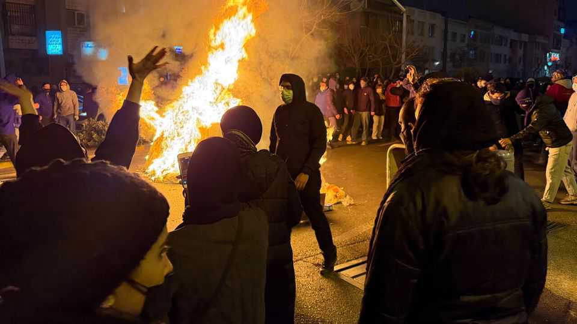
伊朗的大城市被比作战场，全国性抗议活动动摇了政权。据信已有数千人丧生，但政府实施的互联网封锁掩盖了动荡的规模以及当局的报复行动。数千人被逮捕；伊朗司法部长表示他们将面临快速审判并可能被处决。唐纳德·特朗普（Donald Trump）威胁称若伊朗当局处决抗议者将采取“强硬行动”，但随后又声称处决已停止，死刑已暂停。当美国考虑对伊朗采取军事行动时，为防范可能的伊朗袭击，其在中东的军事基地部分人员被撤离。乌干达政府在总统选举前关闭了互联网并限制了移动通信。
■
乌干达当局近期已拘留数百名反对派支持者，并多次袭击反对派集会。81岁的总统约韦里·穆塞韦尼（Yoweri Museveni）执政四十年，无论选民如何投票，都预计将连任第七个任期。索马里宣布将取消与阿联酋的所有双边协议，包括数项港口协议，称阿联酋损害其国家主权。这一决定源于报道显示阿联酋在以色列承认索马里兰分离地区方面发挥了作用。丹麦（Denmark）与格陵兰（Greenland）的外长前往华盛顿，与美国副总统JD·范斯（J.D. Vance）及国务卿马可·鲁比奥（Marco Rubio）举行会谈。■
丹麦部长在会议后表示，美国似乎仍意在“征服”格陵兰岛，但双方同意成立工作组。美方在评论中未提及该工作组。俄罗斯在乌克兰的战争创下悲惨里程碑：这场战争已持续时间超过1941-45年俄罗斯与德国的“伟大卫国战争”。当时俄罗斯军队抵达柏林，而在乌克兰战场上，俄军仅推进数十英里。联合国乌克兰人权事务办公室报告称，2025年有2500名平民死亡，12140人受伤。伤亡总数比2024年增长31%，比2023年增长70%。2026年局势未见缓和。俄罗斯使用Oreshnik高超音速核武导弹袭击利沃夫，这是该武器在战争中第二次使用。■
匈牙利总统宣布将于4月12日举行议会选举。极右翼总理维克托·欧尔班（Viktor Orban）面临自2010年上台以来最大选举挑战。反对党蒂萨党（Tisza Party）在民调中已大幅领先其所属的匈牙利青年民主联盟（Fidesz）。经过25年谈判，欧盟最终与南美南方共同市场集团达成协议，创建覆盖7亿人口的自由贸易区。欧盟在激烈农业团体游说下耗时良久才批准该协议（本周巴黎街头仍有数百辆拖拉机被推上街头）。农业在协议中占比相对较小且存在诸多豁免条款；例如关税减免仅适用于牛肉进口的一小部分。■
总体而言，到2040年，90%的商品关税将被取消，服务贸易也将实现便利化。委内瑞拉政府在尼古拉斯·马杜罗被美国移除后，由德尔西·罗德里格斯领导，声称已开始释放政治犯。政府表示数百人已被释放，但人权组织认为实际人数仅在数十人左右。与此同时，委内瑞拉流亡反对派领袖玛丽亚·科里娜·马查多将赴白宫与唐纳德·特朗普会面。加拿大总理马克·卡尼访华进行会谈，此行旨在修复两国关系，因加拿大于2024年对华产电动车加征100%关税导致双边关系显著恶化。中国是加拿大第二大贸易伙伴。■
在卡尼访台前夕，台湾或许有些不太恰当，感谢加拿大近期的支持并庆祝双边关系密切。明尼阿波利斯市移民执法引发的紧张局势依旧高企，一名女活动人士被移民官员枪击致死。一名委内瑞拉移民在交通检查中被移民官员开枪击伤。美国国土安全部表示将派遣数百名移民官员前往该市以加强当地执法力量。美国国务院进一步扩大对移民的打压，发布命令暂停来自75个国家公民的签证审理，理由是这些人“可能成为美国的公共负担”。该名单包括巴西、巴基斯坦和俄罗斯，但不适用于旅游或学生签证。■
美国参议院通过了一项两党合作法案，允许人们就AI生成的非自愿图像提起诉讼。众议院也已通过类似提案，但尚不确定是否将合并为一。这些法案的出台正值公众对由埃隆·马斯克创立的xAI开发的聊天机器人Grok生成的露骨女性图像的愤怒情绪高涨之际。英国政府建议可能禁止马斯克的X平台托管此类图像，但美国国务院警告称全面禁令将违反言论自由原则。马斯克表示Grok将不再允许用户生成此类图像。英国反对党保守党领袖凯米·巴登诺奇解雇了罗伯特·詹里克，并暂停其党籍，因其策划以损害保守党利益的方式叛逃至其他政党。■
詹里克（Mr Jenrick）曾被视为保守党在司法和强硬移民政策方面的有效代言人，并被看作未来领导人的热门人选。过去数月，有关他有意加入尼格尔·法拉奇（Nigel Farage）领导的右翼民粹政党改革英国（Reform UK）的传闻不断。海牙国际法院就缅甸对罗兴亚人实施的迫害是否构成种族灭绝展开听证会。冈比亚于2019年发起此案，指控缅甸军方对罗兴亚人实施“毁灭性打击”。缅甸方面则否认这一指控，称军队开展的是合法的反叛乱行动。泰国那空拍朗府的高速铁路连接线施工中，一台起重机倒塌砸中行驶中的列车，导致至少32人死亡。该起重机当时正在泰国至中国的高速铁路项目上作业，倒塌发生时列车正途经该区域。■
韩国总统尹锡悦（Yoon Suk Yeol）在去年被弹劾后接受审判，检察官表示若其被认定犯有叛乱罪，将要求判处死刑。尹锡悦于2024年12月短暂实施戒严令，引发韩国政治动荡。他否认相关指控。韩国自1997年以来已无死刑执行记录。文在寅（Lee Jae Myung）在尹锡悦下台后当选总统，赴日与日本首相岸田文雄（Takaichi Sanae）会谈。文在寅此前曾访问中国，而中日因台湾问题关系恶化，中国随后收紧对日稀土出口。文在寅与岸田文雄承诺在安全与贸易领域密切合作，会谈结束时举行了一场荒诞的击鼓表演，两人共同演奏了多首K-pop歌曲。■
高桥真美希望能在她计划于2月举行的提前大选中达到K-pop级别的流行度。
§002 Business：本周商业原题：Business · 板块：The world this week · 栏目：本周
美国联邦储备委员会的独立性受到质疑，司法部已就杰罗姆·鲍威尔（Jerome Powell）去年向国会作证时提及的美联储大楼翻新成本问题发出传票。鲍威尔称，所谓“前所未有的”刑事指控威胁是针对美联储未能根据“总统偏好”设定利率的借口。曾严厉批评鲍威尔未能迅速降息的唐纳德·特朗普（Donald Trump）则坚称自己对传票一事毫不知情。■
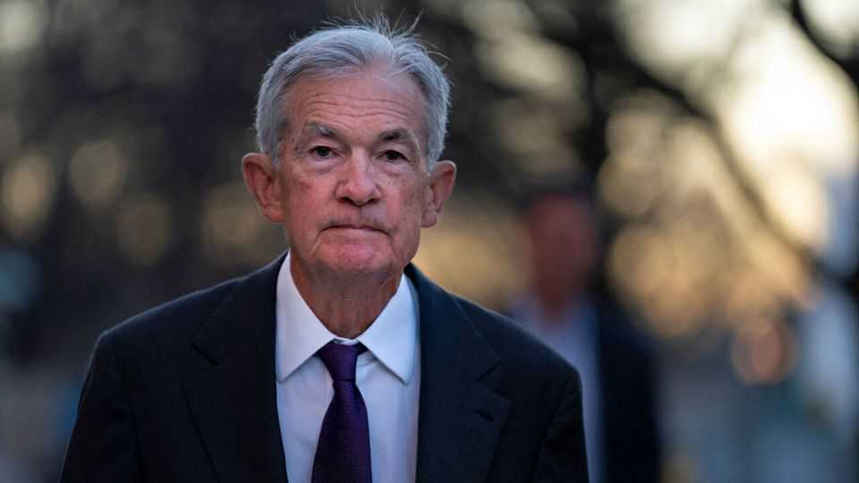
欧洲央行行长克里斯蒂娜·拉加德（Christine Lagarde）与英格兰银行行长安德鲁·贝利（Andrew Bailey）联合十余位央行行长发表声明支持鲍威尔（Jerome Powell）。他们表示：“我们完全支持他和美联储”，并强调“对法治和民主问责的充分尊重”是央行独立性的关键。摩根大通公司首席执行官杰米·戴蒙（Jamie Dimon）称，传票“不是一个好主意”，将导致“通胀预期上升的反向后果”。尽管部分参议院共和党人也支持鲍威尔，但市场对这场争执的反应较为平淡。尽管金价创历史新高，但长期国债收益率基本未变。摩根大通公司是几家批评特朗普（Donald Trump）提议将信用卡利率上限设为10%的银行之一。
尽管提案细节尚不明确，但该银行已与其他行业机构一同警告称，利率上限将“显著改变”其业务模式，最终导致消费者信贷减少。摩根大通已正式成为苹果信用卡的新发卡机构。多家信用卡发卡机构的股价下跌，包括美国运通和Capital One。苹果公司今年将利用谷歌的Gemini AI模型升级其虚拟助手Siri，这对OpenAI而言是重大挫败，因为该公司曾竞标该合作项目。谷歌还宣布与多家大型零售商（包括沃尔玛）达成合作，允许消费者通过Gemini聊天机器人完成购物支付。这些公告推动了谷歌母公司Alphabet的市值首次突破4万亿美元。■
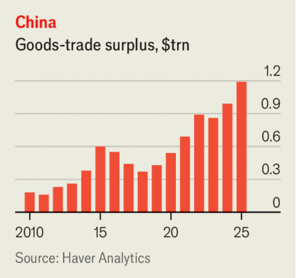
尽管与美国陷入贸易战，中国仍报告了创纪录的年度12000亿美元贸易顺差（截至11月底已打破此前纪录）。2025年中国对美出口下降20%，仅11%的出口商品流向美国，为1990年代以来最低占比。中国工厂则转向其他市场，对非洲出口增长26%，东盟国家增长13%，欧盟增长8%。派拉蒙（Paramount）仍无退缩迹象，尽管这家电影公司已决定不与派拉蒙接洽，并支持来自Netflix的收购提议。派拉蒙提起诉讼，要求华纳兄弟披露其如何评估Netflix交易的价值，并表示将提名董事名单参与华纳兄弟董事会。该公司警告称：“我们将坚持推进我们的要约收购计划。”
奈飞据悉正考虑调整其报价，将其改为全现金交易以吸引华纳股东。陷入债务困境的Saks Global公司，旗下拥有Bergdorf Goodman、Neiman Marcus和Saks Fifth Avenue等高端百货品牌，已申请破产保护。该公司在破产申请中表示，其问题并非奢侈品需求不足，而是“库存供应和供应商信心”。“部分供应商拒绝向其门店运送商品，因为尚未收到货款。”借助人工智能热潮，台湾的台积电（TSMC）制造全球大部分高端芯片，该公司2025年第四季度营收同比上涨25%至340亿美元，净利润跃升35%至160亿美元。其预计本季度营收将实现更大增长。■
波音公司2025年获得1075架净订单，超过空客的1000架净订单。这是波音公司自2018年以来首次在该指标上超越空客。该公司还交付了600架商业飞机，尽管空客交付了更多，达793架。经过数年安全事故、生产问题和劳工罢工的困扰，波音公司的转型似乎正在取得进展。嘉能可和力拓确认正在重新讨论合并事宜，这距离上一次尝试合并矿业公司失败已逾一年。合并后将诞生全球最大的铜生产商，铜价在过去12个月上涨了50%，受益于绿色能源和人工智能相关行业（如芯片制造）的高需求。■
§004 领导人原题：What the collapse of Iran’s regime would mean · 板块：Leaders · 栏目：领导人
当示威者涌向伊朗集市与街头时，最高领袖阿里·哈梅内伊（Ali Khamenei）以子弹回应。两周来，抗议者高呼“死亡吧，独裁者”，革命卫队盟友持自动步枪骑着摩托大军冲入街道。他们配备狙击手，向同胞开枪，瞄准面部和生殖器。停尸房已人满为患，装着尸体的袋子堆满血迹斑斑的街道。可能已有数千人死亡。数千伤者被逮捕，一些人被从医院病床拖至监狱牢房，命运未卜。
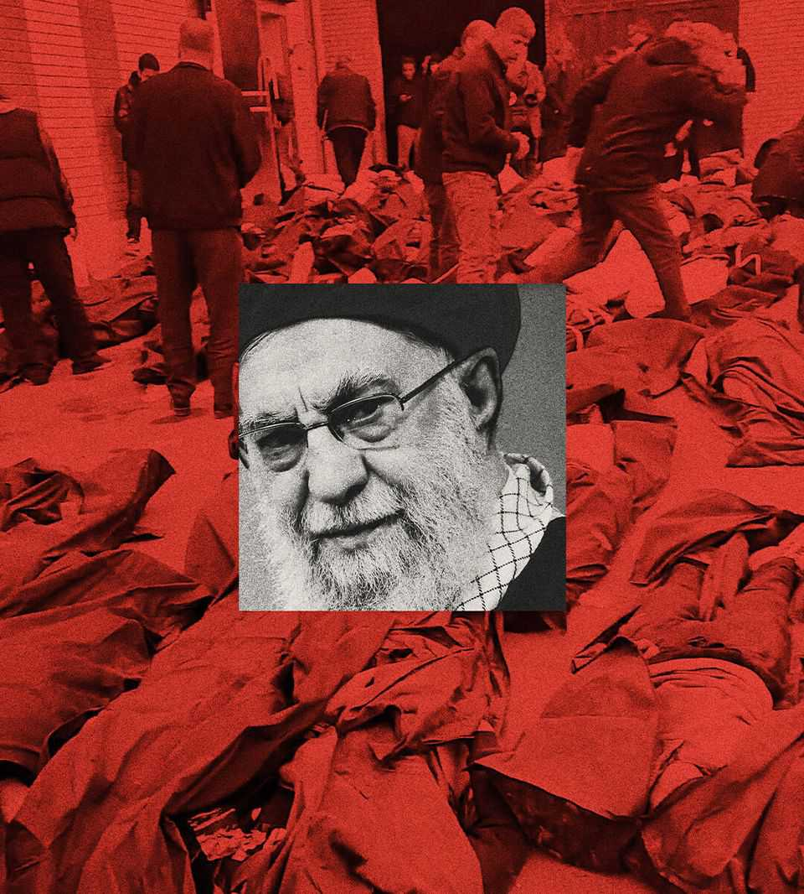
这本应是终结神权政客47年统治的时刻。伊朗人民理应生活在民主繁荣的国家，尤其因为他们展现出的勇气。若伊朗能从核威胁和中东地区暴力输出者转变为包容、稳定的贸易强国，世界也将从中受益。但仅靠抗议无法终结专制。特朗普总统若考虑对伊朗发动军事打击，这会如何促成神权统治者的覆灭？若政权倒台，又将引发何种后果？伊朗统治者之所以残酷无情，源于其软弱。他们无路可退，只能以暴力向民众施压。在国内，伊朗民众必须承受经济萎缩、食品价格飙升、失业率居高不下以及贫困加剧的困境。■
国外，该政权自2023年以来在黎巴嫩、叙利亚和加沙的代理人武装屡遭重创，主要由以色列打击。去年持续12天的战争表明，该政权甚至无法保护自己的指挥官和核设施。在前几年的抗议浪潮后，哈梅内伊有时会做出让步，例如放宽女性着装规定。本月其政府提议每人每月7美元的普遍津贴，试图平息民众怒火，但此举遭到嘲讽。未来日子充满不确定性与危险。抗议者已撤离街头，但持续多久无人可知。最糟糕的结果是政权仍维持统治，以血缘纽带捆绑伊朗人民，使其陷入停滞的压迫。同样糟糕的是伊朗陷入更严重的暴力冲突。■
1990年代南斯拉夫解体、2003年伊拉克战争以及叙利亚内战提供了深刻教训，说明结束数十年镇压而不引发大规模流血冲突有多困难。库尔德人、阿塞拜疆人、俾路支人或其他分离主义者可能发起反抗，伊朗或将陷入混乱。若再叠加浓缩铀、核科学家和宗教极端分子的存在，风险将更加严峻。对接下来可能发生的情况的恐惧，或许解释了为何部分伊朗人至今未参与抗议。中间还存在政权分裂的场景。革命卫队或许会推翻最高领袖，或某派卫队以民众名义夺权，并通过追究近期屠杀事件中各派责任来寻求合法性。若如此，他们可能得到常规军队的支持，而常规军队至今仍保持中立。■
无论结果如何，新掌权者都可能寻求达成协议，美国解除制裁以换取伊朗核计划和弹道导弹的严格限制。美国可能试图对一个在华盛顿困扰了四十余年的政权实施打击。本周特朗普先生首先威胁对德黑兰采取“非常强硬”的行动，同时呼吁更多抗议活动，随后又似乎有所退让——是策略性示弱还是出于谨慎，尚不清楚。若发动攻击，他首选的可能是有限打击。或许他可以效仿近期在委内瑞拉实施的政变，试图推翻或暗杀备受憎恶的哈梅内伊先生。或者美国可对伊朗境内选定目标投掷炸弹和导弹，可能针对与革命卫队相关的设施。■
美国若能降低风险，或许可通过走私Starlink设备进入伊朗，帮助结束政权实施的通讯封锁。一个迹象表明这很重要，即安全部队正在搜捕那些已经进入伊朗的人。白宫也在暗中支持一位流亡的反对派人物礼萨·帕尔拉维（Reza Pahlavi），他曾是伊朗国王的前王储，1979年国王被推翻时逃亡海外。他从马里兰州的安全距离处，也在敦促抗议者们奋起反抗，以实现民主。在伊朗国内缺乏有组织的反对派的情况下，该国或许可以恢复某种形式的君主制（参见我们对礼萨·帕尔拉维的采访）。然而，仅梳理各种选项就足以说明美国行动要实现成功的难度有多大。■
如果特朗普下令发动空袭，伊朗则拥有大量短程和远程导弹，足以对中东地区进行报复性打击，从而引发不可预测的局势升级——这也是中东各国警告美国不要发动攻击的原因。空袭斩首行动需要精准的情报，而面对一个早已知情的对手，这难度极高。即便霍梅尼已遭击毙，与革命卫队达成类似加拉加斯式的协议也难以带来持久稳定，因为悲痛的伊朗民众将渴望对沾满鲜血的将领们进行报复。局势风险极高。特朗普执政后，地缘政治中的旧有确定性正逐渐消融。他的关注点绝不会是尊重国际法，也不会是推动自由民主国家的联盟。■
然而，即便伊朗正被其盟友中国和俄罗斯抛弃，他仍比任何近期美国总统都更愿意推动重大变革，只要他认为这能增强美国的影响力和自身的声望。每一次干预都是对将要创造的世界的考验。过去每一次民众起义似乎都预示着新民主的诞生。然而，经历了阿拉伯之春的失败后，再难以想象伊朗的道路会如此简单。尽管如此，人们仍希望，随着时间推移，政权的崩溃终将有利于伊朗勇敢的人民，他们再次证明了自己是祖国的最大福祉。■ 仅限订阅者：想了解我们如何设计每周封面，请订阅我们的每周封面故事通讯。
§005 领导人原题：America’s gunboat capitalism will make the world poorer · 板块：Leaders · 栏目：领导人
在现代历史的大部分时间里，跨国企业与国家紧密合作。英国和荷兰的东印度公司曾获得国家资助，作为回报，两国为公司提供军事和外交支持。德国的克虏伯和日本的三菱协助本国工业化，而其政府则在国外获取矿产和市场。美国的军事干预帮助石油公司获取海外资源。然而从1980年代起，政府逐渐退居幕后，跨国企业无拘无束地扩张至全球。如今，炮舰资本主义再度回归。 ■
当全球众多大公司高管下周齐聚瑞士达沃斯山间度假胜地时，与会者将重点关注政府对跨国商业活动的强势介入。随着战争重返欧洲，威权主义中国日益咄咄逼人，政界人士已重新绘制全球商业版图，明确界定跨国企业可涉足与不可涉足的领域。美国总统特朗普更将这一趋势推向极致。他视企业为增强国家权力的有力工具，敦促美国石油巨头重返加拉加斯，否则将面临制裁；要求国防企业停止回购股票；并勒令向中国销售先进处理器的科技公司向其政府分享利润分成。■
国家干预的回归将对年销售额达23万亿美元、利润约2.4万亿美元、在全球雇佣数百万员工的西方跨国公司造成 destabilizing 影响。这将意味着一个不那么繁荣的世界——未必更安全。正如我们的简报所指出，不断变化的地缘政治格局已开始重塑西方跨国公司。关税、补贴和制裁正将资本从包括中国和俄罗斯在内的地区转向本土市场。2016年，美国跨国公司44%的资本支出发生在本国，而如今这一比例已升至69%。外国销售额以实际价值计算已下降，而本土销售额则持续上升。在政府通常视为“战略”产业（如软件、药品和汽车制造）中，这种撤退更为明显。
正如特朗普的贸易代表贾米森·格里尔（Jamieson Greer）本周在我们的Inside Geopolitics节目里所言，全球化黄金时代不会重现。未来更可能的是国家干预的进一步加强。商业利益的诱惑促使特朗普推翻委内瑞拉的尼古拉斯·马杜罗，并引导其在俄乌冲突中寻求停火。但特朗普也在将企业与国家更紧密地捆绑在一起。其政府已入股多家矿业公司和一家陷入困境的芯片制造商；其上月发布的国家安全战略指出将继续这么做。美国越推崇本国企业、惩罚他国企业，其他国家越有理由支持本国企业。新形态的强权资本主义世界会是什么样子？■
首先，这种做法将更加昂贵且效率更低，而这一点比以往更加重要，因为如今跨国公司已成为现代经济的重要组成部分。美国的全球巨头占国内私营部门就业的五分之一以上，占实物投资的五分之二，占利润的四分之三。这种体量源于全球基础设施的完善，它使商品和信息的跨境流动变得更为便捷，从而提升了股东收益并降低了消费者价格。当企业被迫按地缘政治划分资本配置时，其生产率将下降，进而影响整体繁荣。已有迹象表明，跨国公司相比仅在国内运营的企业，其盈利能力正在减弱。■
我们分析了2023年和2024年销售额超过100亿美元的西方非金融企业的投资回报率。在九个行业中，有七个行业的跨国公司投资回报率落后于国内竞争对手。在这些领域中，国内企业与全球企业的差距自2018-19年以来不断扩大。如果这些高昂的成本能确保国家更安全，那么它们仍可能值得付出。随着全球威权政权日益咄咄逼人，民主国家迫切需要增加国防开支。同样，对芯片制造商利润的打击，如果禁运能阻止对手实现技术飞跃，从而在军事实力上产生重大影响，那么这可能是一个合理的代价。关键在于明智干预。然而，特朗普先生的策略却面临诸多问题。首先，它错误地聚焦于错误的强项来源。
商业实力不再仅仅依赖于获取最丰富的石油或其他自然资源，而是源于创新和无形资本，这些因素推动技术边界的拓展，使产品对消费者不可或缺。但特朗普对科学和移民的打压正在削弱创新前景。更重要的是，政策干预显得混乱，似乎是有意为之。美国对向中国出口半导体的政策反复无常，取决于总统身边谁掌握话语权。风险在于，每项决策都可能成为游说对象，甚至滋生腐败。由于政策不确定性为政府提供了其最渴望的——最大杠杆，企业无法制定长远计划。鉴于总统的行事风格，特朗普政府很难克服这些缺陷。■
因此，更深层次的问题在于，其他政府是否能做得更好——即，成功的炮舰资本主义是否能成为某个国家竞争优势的一部分。《经济学人》对此持怀疑态度，不仅因为美国拥有压倒性的军事力量。随着全球化黄金时代的消退，值得铭记的教训是：政府创造租金；租金扭曲市场；扭曲的市场使国家变穷，公民变得缺乏进取心。炮舰资本主义的诱惑在于它既带来繁荣又保障安全。但现实是，它两者都无法实现。■ 仅限订阅者：要了解我们如何设计每周封面，请订阅每周《封面故事》通讯。
§006 领导人原题：A private memo from central banks to governments · 板块：Leaders · 栏目：领导人
全球主要央行行长们以团结名义发布声明支持杰罗姆·鲍威尔（Jerome 'Jay' Powell），称其正面临特朗普政府的指控，原因是未加快降息步伐。《经济学人》获悉，央行行长们还向各自政府发送了另一份私人备忘录：
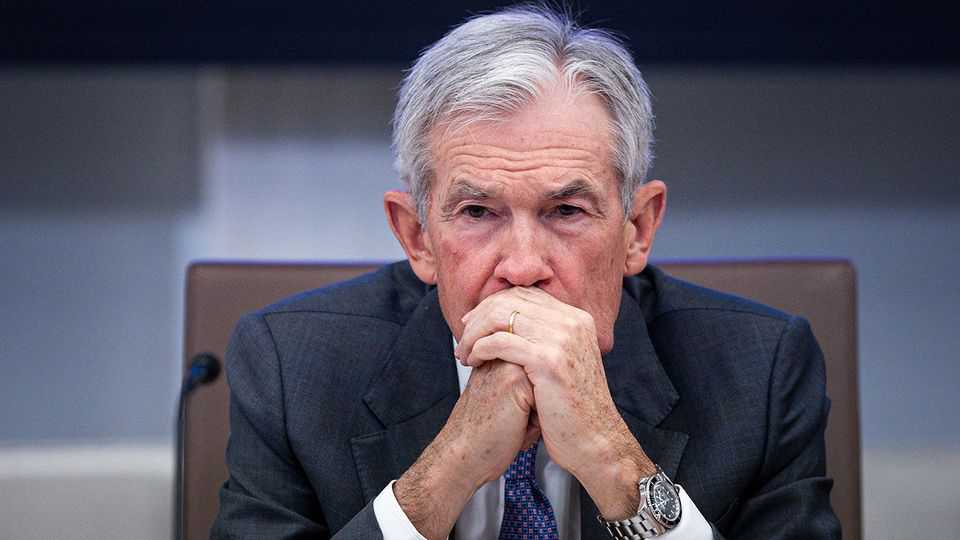
亲爱的总理/总统（请删除不适用部分）——我们知道您认为技术官僚为任何人挺身而出是荒谬的。但您又在做什么？
杰的斗争向我们展示了，如果你们继续施压，情况会变得多么糟糕。这一事件应提醒你们，如果你们不退让，情况会变得多么糟糕。你们觉得2022年和2023年的通胀已经很糟糕了吗？请记住，1970年代和1980年代全球通胀的年均增长率高达7-8%。有人认为其后续的下降只是运气好，而非政策成功——这是全球化和廉价商品的结果。哈！如果全球力量恰好让物价上涨与我们的目标一致，那可真是巧合。自美联储于2012年宣布2%的目标以来，年均通胀率一直维持在2.3%；土耳其，埃尔多安曾试图将总统权力扩展至货币政策，其物价上涨幅度是该目标的十倍。正是独立央行做到了这一点。如果你们让通胀真相曝光，你们会向选民说什么？■
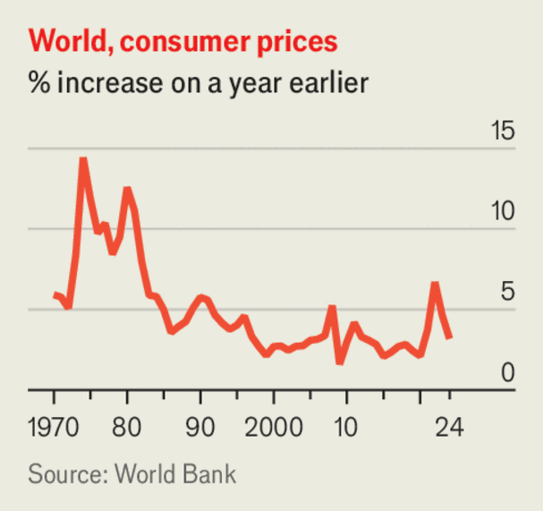
他们对高物价早已愤怒不已。现任官员们最近学到的教训是，通胀是政治毒药。难怪鲍威尔的反击似乎初见成效。特朗普否认对调查有任何了解；共和党参议员威胁要阻挠他向美联储的提名。财政部长斯科特·贝森特此刻正通过电话焦急地向白宫西翼呼喊。不只是选民站在我们这边，债券市场也如此。别被对鲍威尔最新攻击反应平淡所蒙蔽。投资者正确预测，鲍威尔将获得政治支持。一旦你的举措看似奏效，你将发现巨额政府债务的偿付成本攀升，本币也陷入波动。你将被通胀巨石与紧缩绝境夹击。看看日本吧。
新任首相已不再批评加息，因为她上任后可能因日元疲软而被问责。同时，你们也需要我们保持可信度。还记得利兹·特拉斯（Liz Truss）几乎让英国债市崩溃的场景吗？英格兰银行（Bank of England）当时之所以能阻止债券抛售，正是因为市场普遍知晓其购买债券的行为并非货币化债务。若模糊财政与货币政策的界限，最终将导致没有一个最后贷款人不引发怀疑。金融系统将变得更加脆弱，而经济则会愈发动荡。确实，我们曾犯下错误。多轮量化宽松（quantitative easing, QE）政策失控，至今尚未有公开反思。此外，我们本应在新冠疫情中你们过度开启财政刺激时，及时抵消其影响。■
但至少我们已经基本清理了自身的混乱。如果没有我们来做那些让房贷成本上升以抑制经济的脏活，你打算怎么做？价格管制？你不如问问尼古拉斯·马杜罗如何管理经济，或者特朗普如何以事实为依据看待格陵兰岛。我们有时确实有扩张主义倾向，但贝森特先生提议对量化宽松政策进行公开审查并非世界上最糟糕的主意。我们会记得，并非每一次要求我们负责的行为都是无理取闹。但如果你忽视我们过去三十年取得的成果，试图推翻宏观经济体制，你根本不知道事情会有多糟。你已被警告。 ■ 《经济学人》订阅者可注册我们的Opinion通讯，汇集了最佳的社论、专栏、特邀评论及读者来信。
§007 领导人原题：Without democracy, Donald Trump’s Venezuelan oil quest will fail · 板块：Leaders · 栏目：领导人
自美国军方逮捕委内瑞拉独裁者尼古拉斯·马杜罗以来，局势发生了哪些变化？他的腐败政权依然存在。尽管反对派人气高涨，但似乎仍未接近权力核心。最大的变化在于石油领域。在数周的美国封锁后，该国储油设施几乎满负荷运转，产量已被削减。缺乏石油美元的委内瑞拉正面临新一轮货币危机。如今，特朗普强加的协议应意味着石油供应将恢复。随之而来的收益，也将很快流入美国控制的托管账户。 ■
这项交易使美国掌控委内瑞拉石油销售。尽管政权似乎将分得部分收益，但当地民众仅有特朗普的承诺可依。一项行政命令将资金指定为“委内瑞拉政府的主权财产，由美国保管，而非美国财产”。国务卿马尔科·鲁比奥（Marco Rubio）将代表委内瑞拉决定资金用途。特朗普如何管理这些油田与全球市场的新型销售渠道，将极大影响委内瑞拉的前景。他制定的规则将决定委内瑞拉领导人能否继续贪污——从而削弱本就微薄的利润。这些规则也将为委内瑞拉石油产量的扩张或停滞奠定基础，而特朗普对此寄予厚望。透明度将是关键。■
一个缺乏透明度的体系将助长类似联合国石油换食品计划（UN oil-for-food programme）在伊拉克（1995年至2003年）期间出现的腐败现象。该政权可能试图从新签订的石油销售合同中牟取暴利。俄罗斯和中国，以及其他石油贸易专制政权，无疑会鼓励腐败行为。防范此类问题的方式之一是推行彻底的透明化，另一种则是让私营企业自由且具有竞争力地参与。特朗普表示允许向中国出售石油，这一立场是正确的。他同时应抵制任何将尚未准备投资的企业（如埃克森美孚ExxonMobil）排除在外的冲动。允许这些企业参与交易将提升竞争水平，并促使它们未来更深入地参与。最重要的是，特朗普应设定民主转型的时间表。美国长期参与封锁和控制委内瑞拉石油的业务并不合适。■
它也不希望如此，如果市场价格持续低迷，投资回报率依然低迷。投资者要确信自己的财产权将得到保护，他们需要相信独立法院能防范未来被征用的风险。这取决于一定程度的民主和法治。而旧政权则严重依赖肮脏资金来收买持枪者的忠诚。民主也是普通委内瑞拉人所渴望的。一项由《经济学人》委托的新民调显示，十分之九的受访者希望2024年被政权窃取选举结果立即得到尊重，或在一年内举行重新选举。这种情绪无法被忽视。特朗普原定于1月15日与委内瑞拉民主反对派领袖玛丽亚·科里娜·马查多（María Corina Machado）会面。她人气颇高，是委内瑞拉最接近民主象征的人物。■
特朗普无疑希望获得她对石油协议的支持。他同时也应支持她帮助恢复委内瑞拉的民主与法治。这是选民和投资者所渴望的长期稳定的唯一途径。■ The Economist的订阅者可注册我们的Opinion通讯，汇集了我们的社论、专栏、读者来信和特稿等精华内容。
§008 领导人原题：America has coped with worse things than Donald Trump · 板块：Leaders · 栏目：领导人
当美国即将迎来250周年之际，其政治局势正变得愈发紧张、分裂且动荡。以1月7日明尼阿波利斯发生的蕾妮·古德（Renee Good）被美国移民与海关执法局（ICE）人员枪杀事件为例。美国人早已习惯观看同一段执法记录仪视频却得出截然相反的结论。如今不同的是，联邦政府立即将这名遇难母亲贴上“恐怖分子”的标签，并压制对事件真相的调查。这几乎像是唐纳德·特朗普总统在刻意煽动社会动荡，为他实施更严厉的管控寻找借口。历史为这个动荡不安的国家提供了重要启示。美国的发展历程从未一帆风顺。
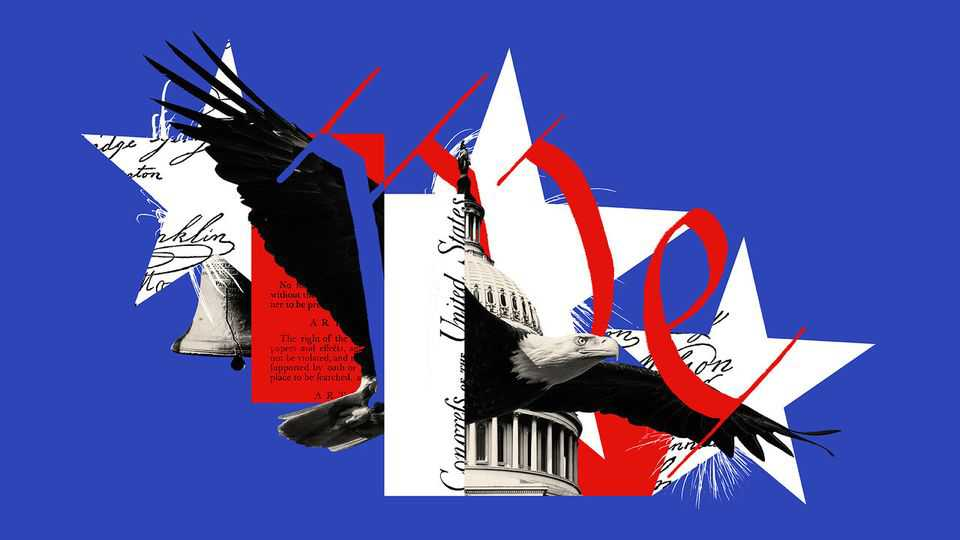
■
它历经失败与复兴、前进与后退——因为人们在危机面前选择挺身而出。今年《经济学人》将通过七个每月章节，直至7月4日，审视那些曾令共和国陷入困境的时刻，并参考当时的报道。其目的是为美国当前的困境提供背景。特朗普的总统任期是一场严峻的考验，但并非完全陌生的挑战。他并非首位将批评者视为国家敌人总统。1798年，约翰·亚当斯（John Adams）政府颁布《外国人与煽动法案》（Alien and Sedition Acts），将针对政府的“虚假、诽谤性及恶意言论”定为犯罪。一个多世纪后，一战期间及战后，伍德罗·威尔逊（Woodrow Wilson）政府拘禁并驱逐异议者，审查媒体并默许针对所谓“不忠于美国者”的暴民暴力。■
在每种情况下，镇压都被描述为合法且必要，以安全、秩序和爱国主义之名——这种语言如今再次被使用。这并非美国首次遭遇关于权力行使方式和接受失败的规范被侵蚀。南北战争后，安德鲁·约翰逊阻挠解放黑奴的民权，削弱重建运动，暂时掏空了南方的民主根基。水门事件则揭示了执法与情报机构如何被党派利益扭曲，也说明民主依赖官员与记者拒绝妥协。在两种情况下，正义最终得以幸存，因为美国人选择捍卫它。而当美国如今仿佛站在悬崖边缘——在应对分裂的公众时挣扎——它也曾经历过类似的时刻。■
美国首部宪法《邦联条例》证明过于脆弱，几乎导致国家解体。其继任者通过妥协与委婉措辞掩盖奴隶制，将清算推迟到内战爆发。1930年代大萧条暴露了政治体系应对大规模失业的无力。更近的2000年大选由最高法院裁决，揭示了该体系对善意与克制的严重依赖，而这些品质如今已大幅减少。此次情形在某些方面有所不同。历史不会精确重演。但对当下独特灾难性的固执信念，既贬低了现实，也轻视了那些克服更严峻挑战者的成就。美国人曾多次经历此类压力。过往既非绝望之因，亦非自满之据。复苏从非自动发生。■
这要求公民直面失败、抵制权力滥用，并不断重申国家的建国理念，即人民通过国会行使权力，而非仅由总统个人主导。国家的复兴有时也需经历重大冲击：内战、经济大萧条，或来自同等国家的生存威胁。当前一代美国人面临的挑战，是在无需依赖如此灾难性事件的情况下，再次改变国家的发展方向。■ 订阅《经济学人》的读者可注册我们的Opinion newsletter，汇集本刊最佳评论、专栏文章、特邀评论及读者来信。
§009 简报原题：Geopolitics is warping multinationals’ commercial decisions · 板块：Briefing · 栏目：简报
若听唐纳德·特朗普讲述，美国对委内瑞拉的干预将为美国石油公司带来巨大利好。他们将获得有利可图的投资机会并大笔投入。石油将源源不断地流入，利润也将喷涌而出。然而，石油公司自身——以及拥有它们的投资者——并未被说服。埃克森美孚首席执行官在白宫参加完委内瑞拉相关会议后，便将该国称为“无投资价值”。由于恼怒的特朗普随即威胁将埃克森美孚排除在委内瑞拉之外，其股价反而实际上涨。■
对市场而言，任何摆脱政治干预公司商业决策的喘息之机，哪怕动机只是出于不满，也都是显著利好。可惜，这类时刻已不如从前频繁。数年来，评论界（包括《经济学人》）一直警告称，政客试图影响企业产品生产与销售地的举措，将削弱全球化带来的好处，进而使跨国公司效率降低、利润减少。令人遗憾的是，大量数据已表明，大型跨国公司确实在政治干预下重塑运营模式，而这种重组并未改善其财务表现。地缘政治型跨国公司的时代已然到来。大型西方跨国公司（定义为海外销售额占比超30%的企业）占全球上市公司总价值的70%。■
它们的利润已飙升至每年2.4万亿美元。它们在全球雇佣了约1亿人。麦肯锡咨询公司估计，跨国公司承担了全球出口的三分之二。它们无处不在且极具辨识度。2024年，有500万篇新闻文章提及其中一家。就连尚不具备购买能力的儿童也能认出麦当劳的金色拱门或耐克的勾形标志。20世纪90年代，跨国公司全球扩张的步伐加快，当时许多西方和新兴国家放宽了贸易和投资政策。到2001年中国加入世界贸易组织时，全球贸易已占全球GDP的49%，较十年前的38%显著增长。外国直接投资（FDI）流量激增，2007年达到3万亿美元（占GDP的5.3%），即全球金融危机爆发前的高点。■
尽管在金融危机后，发达国家的跨国巨头大多仍能自由选择建厂和销售地点——很多时候正是中国。全球化扩张带来了诸多益处。企业得以获取廉价劳动力和供应商，西方增长放缓可被新兴、快速增长的市场（尤其是中国）所抵消。规模效应使企业能降低成本。这在与本地既有企业竞争时尤为重要，因为后者通常更了解本国市场。然而过去十年间，尽管全球化充满吸引力，西方企业却逐渐变得更加本土化。据fDi Markets（一家数据提供商）统计，2016年美国跨国公司仅将44%的资本支出投向本国市场，这一比例此后稳步上升，预计2025年将达到69%。■
美国经济分析局的数据表明，截至2023年的五年间，美国跨国公司的海外子公司销售额实际下降1%，而国内销售额则增长8%。同期，美国跨国公司员工中本土员工占比从67%微升至68%。欧洲企业同样更青睐美国而非更遥远的市场。根据欧盟统计局（Eurostat）数据，2018年至2023年间，欧洲企业在美员工数量增长8%至300万人，增速高于全球其他地区。欧洲对美国的投资也在增加。2018年至2024年间，欧洲对美外国直接投资存量从2.8万亿美元增至3.6万亿美元。去年欧洲对美绿色field投资（新建矿场或工厂，而非收购现有资产）占17%，较2018年的12%有所上升（见图表1）。
摩根士丹利（Morgan Stanley）的数据显示，2018年至2024年间，欧洲企业营收中来自美国的部分占比从16%升至20%。尽管西方企业持续加大对美国的投入，但对中国市场的热情却在下降。目前，美国对中国的绿地投资（greenfield FDI）流出价值占比仅为2%，较十年前的7%大幅下滑。欧洲企业的相关占比也从5%降至3%。2019年至2023年间，欧洲和美国企业在华裁员近十分之一。中国曾是美国海外员工最多的国家，如今已跌至第四位（见图表2）。星巴克（Starbucks）、IBM、Airbnb等多家大型企业已部分或完全撤离中国。然而，这一趋势不仅仅是西方企业撤离中国所致。■
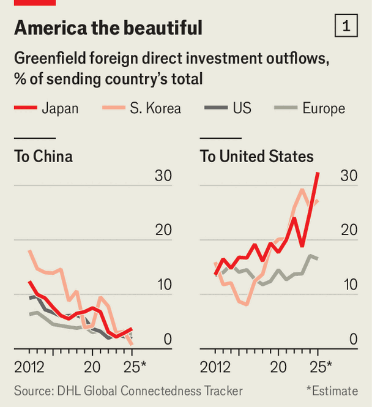
美联储最近的一项研究分析了外国直接投资流动、并购活动及跨国公司的资本支出。研究发现，企业正日益倾向于在与本国意识形态契合的国家开展投资。这一趋势在剔除美国和中国后依然成立。类似地，当子公司所在国在意识形态上与母国渐行渐远时，其资本支出会下降。这种意识形态契合度通过两国在联合国大会投票时是否保持一致来衡量。结果发现，这种契合度与投资金额的相关性几乎与两国地理邻近性相当。换句话说，地缘政治已几乎与地理因素一样，成为投资决策中的关键因素。■
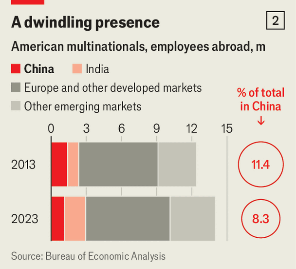
跨国公司的大规模重组并非仅因地缘政治因素。经济增长模式的转变同样发挥了作用。过去五年来，美国经济运行平稳。2022至2025年间，美国年均GDP增速达到2.6%，超过多数发达国家。相比之下，中国在此期间的增长低于预期，年均增速为5.1%。欧洲则陷入停滞。美国经济表现优异的背后，是其消费者群体的强劲支撑。2020至2024年间，美国消费者贡献了全球消费增长的37%，而中国消费者仅占12%。另一个非地缘政治因素是中国跨国公司的崛起。在许多领域，中国企业的技术实力已超越西方。■
跨国汽车制造商如大众（Volkswagen）和日产（Nissan）正与中国企业设立合资企业，以获取其尖端技术的洞察。凯瑞咨询公司（Kearney）的一项调查显示，企业为何计划在不同市场进行投资。对于那些希望在中国市场投资的企业而言，技术创新位列首位。中国品牌也在消费者中逐渐获得认可。星巴克等西方咖啡品牌在中国面临的困境之一，就是瑞幸咖啡（Luckin Coffee）的崛起。目前，瑞幸咖啡在中国拥有的咖啡店数量是星巴克、Costa和皮特咖啡（Peet’s）两家其他西方连锁品牌合计的三倍。类似趋势也出现在全球其他地区。中国运动服饰企业李宁（Li Ning）和安踏（Anta）正在抢占市场份额，威胁着耐克（Nike）和阿迪达斯（Adidas）。中国企业在非洲和东南亚的智能手机市场占据主导地位。但政治干预也起到了重要作用。■
西方国家日益增长的意愿，即避免在经济上依赖中国并技术上制约中国，已促使各国推出补贴、关税和出口管制等措施，推动跨国公司将业务活动转移至其他地区。俄罗斯入侵乌克兰进一步加剧了构建供应链冗余度和复制性、将关键环节置于本国或盟国的紧迫性。特朗普推行的“美国优先”政策也迫使盟国跨国公司加大在本国的投资力度。这种干预不仅限于美国。欧洲正推进自身的产业政策，试图实现经济绿色转型并提升对中美两国的自主性。包括沙特阿拉伯、阿联酋和印度在内的新兴市场，也推出了多项政策吸引发达世界跨国公司增加投资。■
中国在“中国制造2025”口号下，已明确且积极地扶持某些重点产业长达十年。这些政策最明显地重塑了全球商业格局，特别是在西方和中国均视为战略领域的行业。2021年新冠疫情后，拜登政府启动了供应链脆弱性审查，识别出一批关键产品，包括半导体、电动汽车电池、关键矿产和药品，这些产品被认为不能完全依赖外国供应商。欧盟也提出了类似清单，并额外纳入了云计算能力。在美欧两国，随后均推出一系列鼓励本土生产措施。特朗普政府时期的政策重点和干预方式则有所变化。■
绿色技术已不再受青睐，但正如委内瑞拉事件所显示的那样，石油也被列入了相关名单。特朗普的干预手段也愈发极端。除了对委内瑞拉等国实施广泛的关税制裁和直接经济施压外，他还介入采矿公司的股权，与芯片制造商达成协议以分得其在中国市场的销售额，并迫使制药企业降低部分产品的价格。战略型企业与中国的脱钩速度比其他行业更快。利用美国统计局数据，《经济学人》分析了2019年至2023年间美国在七个行业（芯片、制药、软件、计算机设备、其他电子产品、汽车和电信设备）的跨国公司情况。这些企业的销售额、员工数量和资产规模显示了广泛而显著的脱钩现象。■
在美国企业削减中国员工人数的七个行业中，有六个行业裁员；五个行业的中国销售额下降，中国资产价值缩水。裁员人数中位数下降15%，销售额下降12%，资产价值下降7%。这些降幅远高于所有行业平均水平。2019年至2023年间，美国企业在华用于技术制造（主要为半导体）和化工（主要为制药）领域的研发支出实际下降。同期美国企业在华总研发支出增长了三分之一。在上述两个行业中，研发资金转向了更友好的地区，如印度、新加坡和韩国。欧洲在敏感行业运营的跨国企业也在逐步撤离中国。■
关于计算机组件制造商（包括芯片企业）的相关数据仅限于来自欧盟四国的公司，但在这四国中，所有企业均在2021至2023年间削减了对中国的投资，平均降幅达46%。其中三家企业的员工数量减少，销售额也出现下滑。风投数据进一步印证了这一趋势。据研究机构PitchBook数据，2017至2019年间，中国初创企业在芯片、量子、生物科技、关键矿产、人工智能（AI）和电动汽车（EVs）等战略领域的风投占比为4%，与英国初创企业投资规模大致相当。但这一份额已几乎归零。同期，美国盟友国家（如英国、加拿大和以色列）的战略领域初创企业获得的资本投资则迅速增长。■
西方跨国企业的撤退势必会对它们造成伤害。半导体企业及其供应商尤其面临风险。2024年，这些企业在中国的总销售额达到约1740亿美元，约占其全球总销售额的30%。相比之下，标普1200指数（涵盖全球大型企业）中，西方公司的中国销售额占比仅为6%。其他敏感行业同样面临风险，包括数据中心企业（我们估计其中国销售额占比为15%）、汽车制造商（10%）和制药企业（8%）。政治干预对战略性产业的影响正因这些行业在全球经济中的重要性日益增长而被放大。fDi Markets的数据表明，2015年战略性产业占全球外国直接投资（FDI）的比重为11%，到2025年这一比例已升至38%。■
政府正在插手干预，恰如科技企业正大肆投资人工智能数据中心和新一代芯片制造工厂。表面上看，一些干预措施可能有助于企业。特朗普的对抗性做法让欧盟对向美国科技巨头开出巨额罚款有所犹豫。他干预委内瑞拉局势或许最终为美国石油公司创造机会。但这种反复无常的举动会制造不确定性，抑制商业活动。长期来看可能损害企业利益。国际货币基金组织（IMF）的研究显示，尽管保护主义产业政策可能在短期内帮助企业，但中期内会降低其生产率（从而影响盈利能力）。这种影响部分源于成本增加。大量企业正在重复建设供应链。
欧盟中国商会的一项调查显示，26%的跨国企业计划为其在中国业务建立独立或部分独立的供应链。在机床和制药等敏感行业，这一比例更高。许多企业正专门为中国市场生产产品，采用中国供应商，从一家西方工程公司使用本地芯片制造机器人，到耐克定制的运动鞋系列。这令本地市场满意，但重复生产增加了资产负债表负担。麦肯锡公司分析师蒂亚戈·德韦萨指出，另一项支出来自在条件欠佳地区投资，通常是为了进入市场而不支付关税。中国电动车制造商比亚迪正在匈牙利建设工厂，以规避欧盟关税。■
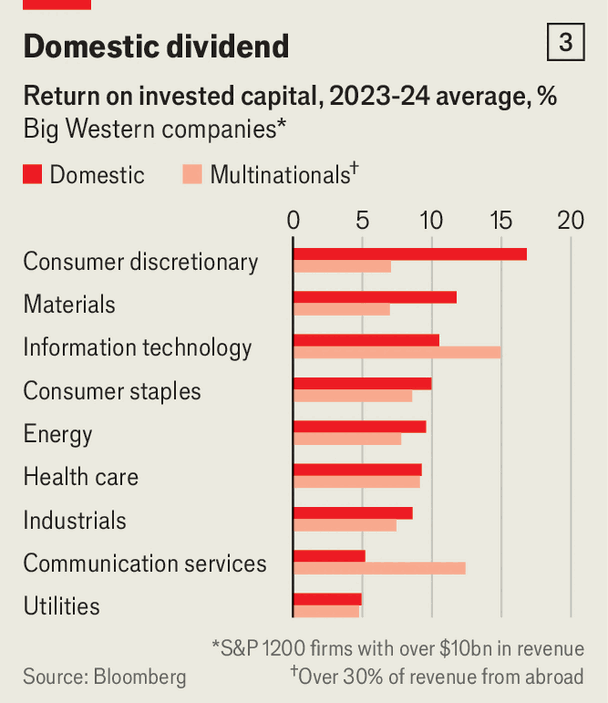
三星（Samsung），一家韩国芯片制造商，以及台积电（TSMC），一家台湾企业，分别在美国得克萨斯州和亚利桑那州建设工厂。2023年，台积电估计在美国建厂的成本将是台湾的四到五倍。即便工厂建成，将其运营至亚洲以外地区也成本高昂。阿特拉斯科普柯集团（Atlas Copco）的CEO瓦格纳·雷戈表示，三年前公司已加大在美国组装工厂的投资，但寻找价格合理的本地供应商仍是挑战。此类成本可能已开始侵蚀跨国企业的利润。《经济学人》分析了2023年及2024年销售额超过100亿美元的西方非金融企业的盈利能力，以投资回报率衡量。我们将700多家公司分为跨国企业与本土企业。■
在九个行业中，跨国公司的利润在七个行业中落后于本土竞争对手（见图表3）。然而，在信息技术和通信行业，跨国公司表现优于本土企业。但这两个行业几乎完全由科技巨头Alphabet、Apple、Meta和Samsung主导。面对如此庞然大物，本土竞争对手几乎可以定义为小鱼，其较低的利润率也毫不令人意外。此外，在九个行业中，有六个行业自2018-19年疫情前以来，本土企业相对于跨国公司的优势已有所扩大，尽管幅度有限。只有三个行业中跨国公司的盈利能力相对本土企业有所提升。所有这些迹象表明，一种新型跨国公司正在迅速崛起。一位大型欧洲制造商的董事长描绘了未来可能的发展方向。■
西方企业在华运营将与全球其他地区相比呈现出显著差异，体现在所使用的供应商、技术以及生产的产品上。日益加剧的地缘政治风险将迫使企业增加运营中的冗余度和灵活性。这可能意味着生产活动更加分散化，但许多设施可能仅是最终组装工厂，而非完整工厂。企业将不得不更加谨慎地考虑在哪些行业和地点开展业务。在中国制造无人机，即便用于民用领域，显然也是个糟糕的主意，但在美国则可能无妨。“你不想在错误的时间处于错误的位置，”他警告道。这种庞大而犹豫不决、碎片化的跨国企业形象，与过去高效运作的企业大相径庭。■
这预示着一个未来，在这个未来中，跨国公司长期拥有的优势，如规模经济和成本控制，将继续被削弱。这将使它们更难管理、不够灵活且利润减少。那些倾向于推崇无所不胜的民族企业的政治家们，应为一个实力大为削弱的跨国公司主导的世界做好准备。■
§010 英国保障房补贴错了对象？原题：Britain’s relationship with the EU · 板块：Letters · 栏目：读者来信
书信可通过电子邮件发送至letters@economist.com 了解更多关于我们如何处理您的来信 英国与欧盟关系更紧密的想法是个好主意（“重置雄心”，1月3日）。然而，我们离开的欧盟已非今日之欧盟。世界已发生变化，英国也已不同。欧盟市场对英国而言，且将永远是重要的，双方均能从中受益。任何更紧密的关系都应建立在诚信基础上，正如您指出的，需要灵活性。在工党执政下，试图建立更紧密关系似乎正以英国为代价。 ■
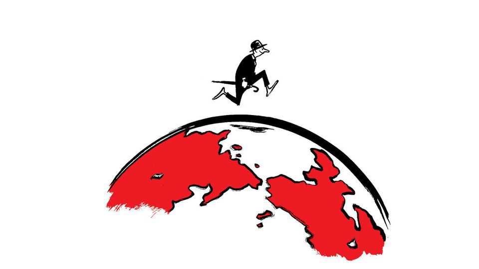
见证伊拉斯谟学生交流计划。英国若要重新加入该计划，第一年将花费5.7亿英镑（7.65亿美元）。保守党指出，他们在执政期间曾拒绝过类似安排，当时成本为5.7亿英镑，被认为过于昂贵。1973年英国加入欧洲经济共同体时，其六个成员国占全球GDP的20%。如今欧盟已扩展为27个成员国，仅占全球GDP的18%，预计这一比例还将下降。着眼未来增长潜力，英国展现了远见，加入了全面与进步跨太平洋伙伴关系协定（CPTPP），从而获得印度洋-太平洋地区5亿人口市场的优惠待遇。CPTPP占全球GDP的15%，随着亚洲经济扩张，这一比例可能在未来几年上升。■
■2025年，瑞典提议欧盟加入CPTPP。与其试图倒转时钟重写历史，不如让欧盟主动靠近我们，鼓励他们加入CPTPP，这无疑对欧盟和英国更有利。这将是一种建立相互尊重更紧密关系的更好方式。阿德里安·布莱克肖，赫里福德郡比修斯通
我对于《经济学人》反复强调“脱欧是现代最大的错误”这一论调感到极度沮丧。你们轻易重复脱欧支持者组织的负面预测，断言英国将不可避免陷入衰退，但就连欧盟也承认英国经济增长速度超过其最大经济体。我们与欧盟拥有自由贸易协定，意味着大多数进出口商品免关税。
英国的出口主要依赖服务业，而服务业增长势头良好。如果英国重新加入单一市场，针对非欧盟国家进口商品的关税将重新实施。我们不希望征税的商品仍需重新征税。数十亿英镑的行政成本将支付给布鲁塞尔。成千上万的法规将未经英国审查便涌入英国。英国做出的唯一合理选择是离开。乔利昂·库尔伯森（Jolyon Culbertson）萨里郡哈斯利默（Haslemere, Surrey）
我读到你们关于美国“可负担性危机”只是幻象的报道（“Fake blues”，1月3日）颇感兴趣。尽管工资可能与核心通胀保持同步，但大多数英国人关注的“可负担性”实际上是指食品成本。■
在我家附近的杂货店，牛肉价格在过去五年内翻了三倍，猪肉和鸡肉价格则翻了一番。曾经只需1美元的廉价品牌饼干现在要2美元，燕麦从3美元涨到了7美元。两升苏打水从前1.25美元，现在要3美元。葡萄每磅1.25美元，现在涨到3美元。纸巾价格也翻了一倍。耐用消费品如洗衣机的价格涨幅不大，但谁又经常买新洗衣机呢？与此同时，普通消费者每周都要面对10美元一包的香肠。这并非幻觉，这是从基层的真实写照。基思·西姆科克斯（Keith Symcox），俄克拉荷马州布里斯托（Bristow, Oklahoma）
您很好地指出了关于生活成本危机的误解。然而，生活成本上涨的担忧可能并非幻觉，即使从经济学角度看似乎合理。■
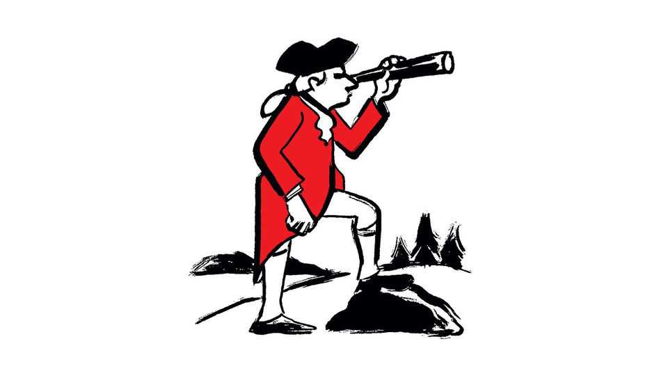
我联想到阿尔伯特·赫希曼1973年论文《经济发展过程中收入不平等容忍度的演变》中的隧道寓言。想象你被困在一条隧道里的交通堵塞中。某一刻，其他车道的车辆开始移动，这起初是个好迹象，但可能引发你所在车道的不满，即使所有车道都在移动，但其他车道的车速更快。这些分配趋势在你的文章中有所体现。人们可能注意到工资增长的差异。赫希曼的寓言指出，人们关注的是工资相对于他人的变动情况，以及这种变动如何影响其预算和消费。即使工资增长速度超过物价，也可能因此引发社会不满。若果真如此，应采取分配政策和促进劳动力流动的政策，而非价格管制。■
菲罗兹·拉尔吉非洲研究所（Firoz Lalji Institute for Africa）高级研究员卡斯帕·弗罗莱克（Kasper Vrolijk）指出，梅里韦瑟·刘易斯（Meriwether Lewis）与威廉·克拉克（William Clark）于1804至1806年展开的探险确实为新成立的美国在大陆确立利益起到了关键作用，通过向密西西比河以西扩展至太平洋沿岸（《刘易斯、克拉克与庞培，亦然》，12月20日）。但真正率先穿越墨西哥以北、英国领土（即今加拿大）抵达太平洋的，是苏格兰-加拿大探险家亚历山大·麦克唐纳（Alexander Mackenzie），其壮举发生在1793年。这同样是加拿大国家建设的重要里程碑。麦克唐纳的成就促使当时美国总统托马斯·杰斐逊采取行动，刘易斯与克拉克在规划探险时也参考了麦克唐纳的著作。加拿大同样助力美国崛起。大卫·麦克因尼斯，加拿大渥太华■
我读到你们关于历史策略类电子游戏的报道（《伟大的游戏》，12月20日）感到非常高兴。除了你们提到的系列游戏，像《安诺1800》和《安诺117》这样的作品也要求玩家建设城市、生产商品并将其运往世界各地以维持居民的满意度。这些游戏展示了贸易的优势，也揭示了贸易可能迅速陷入僵局的脆弱性。有时这种共同的世界观甚至更加清晰。在科幻游戏《泰拉·因维克塔》中，开发者根据《经济学人》智库的民主指数对全球政府进行分类，该游戏描绘了现代外星入侵的场景。在其他条件相同的情况下，民主程度更高的政府在科学研究方面表现更佳，因此对玩家更具吸引力。彼得·萨希（悉尼）我高兴地看到游戏被纳入教育体系中得到重视。
视频游戏，如《全面战争》系列，是我童年时期首次接触历史的方式。它也激发了我尝试亲身参与历史的兴趣。在读大学期间，我设计了一款名为《我们即将抵达，尼尼微》的桌游，模拟2016年伊拉克军队对摩苏尔的围攻，该游戏后来被全球多所军官训练学院采用，用于教授学员城市战与反游击战术。游戏能创造一个允许试错的安全环境，迫使学生在真实情境中即时思考，并优先培养批判性思维而非死记硬背。我最难忘的教育经历是与60位同学共同参与为期一周的真人角色扮演游戏。■
设定在一个虚构的国家，该国正濒临内战，每位学生都投入了七天七夜的时间进行角色扮演、谈判和战略制定，以实现各自的目标——无论是统一国内交战派系、通过联合国安理会决议，还是将国家拖入冲突与动荡。这是我经历过的最沉浸、难忘且引人入胜的教学体验。哈里森·布鲁尔（Harrison Brewer）伦敦桌游并不需要拥有简单的规则或系统，你以Risk为例，这个看似简单的游戏却并非如此。你讨论了Europa Universalis和Civilization，这两款游戏最初都是桌面战争游戏，后来被移植到电脑上。在复杂程度方面，我以诸如Drang nach Osten（超过1700个棋子，一张包含数千个地点的地图）或Advanced Squad Leader（144页的规则手册）等桌面战争游戏为例。■
还有更简单的桌游，仅需100枚棋子和五到十页的规则。乔治·菲利普斯，AHIKS公司总裁，马萨诸塞州沃思堡■《巴特勒比》专栏探讨员工应工作多少小时（12月6日）引用了杜克大学的一项研究，询问人们是否曾在周五下午完成最佳工作。我曾在布鲁塞尔ITT大楼的会议室门上看到一张便签，写着“唯一在周五前完成所有工作的那个人是鲁滨逊·克鲁索”。庆幸自己没有在ITT工作。达娜·彭，法国兰斯■从《约会训练营一日体验》（12月20日）中学到的繁复而常令人发笑的约会建议，让我想起我二十多岁的儿子的金句：“如果你只想找人约会，只需别当个混蛋。其实并不难。”罗伯特·沃斯，新泽西州特纳弗利■
§011 亚洲原题：To power up growth, India must be rewired · 板块：Asia · 栏目：亚洲
印度若要推动增长，必须重新布线。不久后其电力需求将与欧洲相当。■
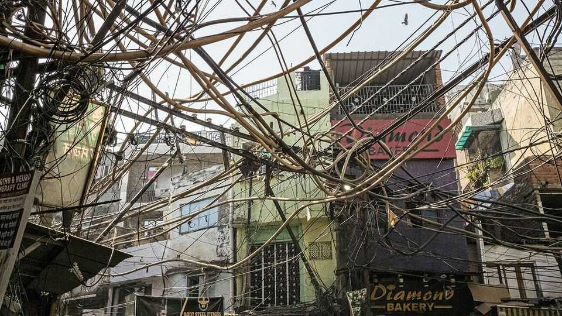
保持印度电力供应稳定是一项棘手的挑战。全国电网不堪重负，用电需求持续攀升。配电公司正陷入投资困境——一方面要负担为农民提供廉价电力的成本，另一方面则是普通盗窃行为。奥里萨邦（Odisha）电力高管阿文德·辛格（Arvind Singh）表示：“城市居民聪明，他们会篡改电表；而农村地区的人则直接接入电网，若被发现，你得和他们打一场大冲突。” 解决这些问题对印度经济维持高速增长至关重要。
自2021年以来，印度的电力需求每年增长约9%。未来十年，这一需求将翻倍。到2035年，印度所需的电力将接近欧盟的水平。满足这一需求将要求印度各邦实现一场前所未有的大规模转型，速度之快，其他国家无人能及。若未能实现，印度的发展进程可能停滞。近年来，印度在建设高速公路和机场方面表现突出，也大力投资电力生产。但电力配送——确保电力实际送达用户手中——却陷入混乱。全球范围内，电力供应商都会记录所谓的“技术与商业损失”，即电力生产与实际销售之间的差额，源于电缆质量差、盗窃和未付账单等问题。■
全球范围内，电力分销商力求在输电网络中仅损失不超过7.5%的电力；在中国，这一比例仅为3-5%。尽管印度的电力损耗较以往有所下降，但仍高达16%，这使印度的电力分销商成为全球效率最低的群体之一。美国战略与国际研究中心（Centre for Strategic and International Studies）的理查德·罗斯伍指出，这一“原罪”源于政客们承诺为农民提供低价电力却未兑现资金支持。这一趋势在1990年代加速发展，电力分销公司（简称discoms）开始积累巨额债务。如今，这些公司欠债高达800亿美元，占印度GDP的2%。这使他们无法借入资金用于投资，导致输电塔和变电站设备严重老化。在多个印度邦，执政党因试图撤销此前承诺的免费电力政策而失去了选民支持。■
总体而言，配电公司（discoms）由政府运营，缺乏管理与工程方面的专业能力。它们成为腐败的温床。罗斯沃先生（Rossow）表示，企业只需向官员行贿，将电价转为农业电价，然后每月支付几卢比就能获得数百单位电力。效率低下导致印度家庭的电力成本居高不下。但政客们并未解决根本问题，而是简单地承诺为他们设定电价。补贴政策产生了扭曲效应。向农民提供免费电力用于抽取地下水，使种植需水量大的作物变得不切实际地有利可图。这解释了为何在半干旱地区如旁遮普邦，水稻种植如此普遍，导致地下水位持续下降。更糟糕的是，这些补贴通常通过向商业用户征收更高的电价来筹措资金。这意味着制造商支付的电价比实际高约50%，经济学家阿文德·苏布拉曼尼亚（Arvind Subramanian）指出。■
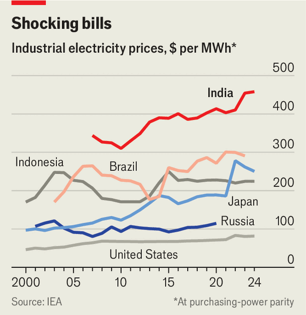
他将这一政策称为“杀鸡取卵”：以帮助穷人之名，却扼杀了能创造就业的投资。印度中央政府也意识到了问题。数据显示，印度工业用户的电价远高于中国、越南或印尼等国，按购买力调整后，其电价位居全球前列（见图表）。许多大型用户干脆退出电网系统，自建发电厂。虽然自建电厂可能更便宜，但相比接入高效电网仍要昂贵得多。所有这些因素都在拖累政府推动制造业发展的努力。要了解情况如何改变，可前往奥迪沙州——一个资源丰富的沿海州。六年前，该州的电力系统一片混乱，四家州属配电公司均深陷债务危机，电力损耗率高达25-30%。■
随后一场气旋来袭，摧毁了电线杆和电缆。该邦转而寻求私营部门帮助，与塔塔电力公司（Tata Power）成立合资企业。此后，电力损耗下降了近半数，而电价则保持稳定。奥里萨邦（Odisha）的电力公司（discoms）如今被视为全国运营最出色的之一。在塔塔电力公司位于邦首府布巴内斯瓦尔（Bhubaneswar）的现代化总部，员工实时监控电网。一整面屏幕墙显示着数据。当警报响起时，工程师们能迅速定位故障点并远程处理。塔塔电力公司引入了技术人才，辛格先生（Mr Singh）表示，他目前在该公司任职。公司推出了智能电表以提升账单管理，并推动客户转向数字支付方式。该邦大多数客户仍以现金支付；为降低贪腐风险，公司要求催款员每半年轮换一次路线。
奥迪沙邦之所以受益，是因为其对农民的低价电价仅限于灌溉用电。然而，一些采用更广泛补贴政策的邦近期却在寻找创新方式削减补贴。泰伦加纳邦和马哈拉施特拉邦的官员计划通过向农民提供太阳能板，减少其对免费电力的依赖。西部古吉拉特邦则率先推广小型太阳能电站，为农民在白天提供稳定且廉价的电力。问题是，这些模式能否推广。作为印度人口最多的邦，北方邦正在考虑私有化方案，并已研究奥迪沙邦的案例。这将是在一个通常对私营企业提供基础服务持怀疑态度的国家，具有里程碑意义的转折点。一些邦希望更多私营部门参与电力系统，或许能创造就业机会。■
多家大型印度企业——不仅塔塔集团，还有信实工业、阿达尼集团和Torrent Power——正准备抓住这些机遇。塔塔电力公司总裁普拉维尔·辛哈（Praveer Sinha）预计也将面临外资企业的竞争。印度总理纳伦德拉·莫迪（Narendra Modi）希望推动这一变革。尽管各邦政府负责电力系统，但中央政府仍计划出台一项旨在促进竞争并削减补贴的法案。据悉，内阁正考虑设立110亿美元的纾困基金，用于援助负债累累的电力公司，前提是各邦向私营部门开放市场。11月，莫迪政府宣布对劳动法进行大规模改革，这表明他一直在认真思考如何提升印度规模较小的制造业。修复疲弱的电网系统也将是另一项重大举措。■
订阅我们的免费周刊Essential India，以随时掌握我们关于印度的报道。■
§012 亚洲原题：China is testing South Korea in the Yellow Sea · 板块：Asia · 栏目：亚洲
“深蓝1号”和“深蓝2号”是海洋工程的奇迹。巨大的钢制笼子延伸至海面下数十米处，为培育数十万条鲑鱼创造空间；操作人员则从附近的浮动管理设施中监控。中国称，这些位于其东北海岸黄海海域的设施不过是无害的水产养殖场。但这些设施位于韩国也声称的海域；两国曾同意共同管理这些设施。鉴于中国在南海的渐进式扩张历史，韩国官员嗅到了不寻常的气息。
■
紧张局势已严重到让韩国总统李在明本月在中国与习近平主席会晤时提及黄海局势问题。李在明访华是自疫情前首位韩国领导人访华，旨在改善自2016年中国对韩部署美国导弹防御系统反应激烈后日益紧张的双边关系。访华结束时，李在明表示中国同意移除韩国认为存在问题的设施之一。中国如何落实这一承诺，将充分反映其对韩的真实意图，以及李在明能否顶住邻国压力。黄海是连接北京与首尔的通道（见地图）。■
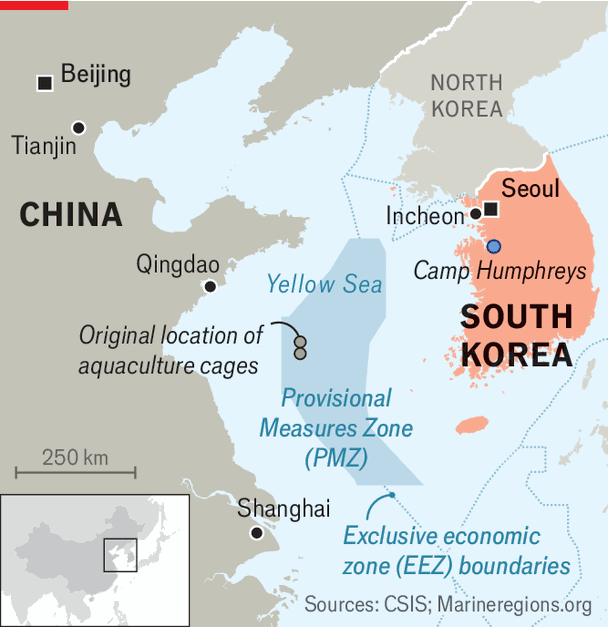
中国北部舰队总部位于黄海沿岸；而仁川则位于黄海对岸，是韩国第二大深水港，也是1950年朝鲜战争中著名战役的发生地。美国最大的海外军事基地——汉弗莱营（Camp Humphreys）位于黄海沿岸内陆仅15公里处。中韩两国在黄海中心区域主张重叠的专属经济区。2001年，双方同意在被称为临时措施区（PMZ）的区域共同管理渔业资源。自2018年起，中国一直在PMZ及其周边海域进行活动。该区域至少已出现13个观测浮标。2018年，“深蓝1号”投入使用；更大规模的“深蓝2号”则于2024年投入使用。一座废弃的油井平台被改造为基地，用于监控这两个设施，配备直升机跑道和住宿设施。■
去年春季，韩国媒体浮出水面的模糊报道显示，一艘韩国科研船与中国海警在中建岛海域附近发生了紧张对峙。去年夏季，中国在中建岛海域举行大规模军演，并划设禁航区。中国方面坚称这些行动绝无恶意。据称，这些浮标仅用于科研目的，而“沈船”结构据中国驻韩大使馆称，不过是位于中国“领海水域”内的“水产养殖”设施。尽管军演可能显得威胁性十足，但根据渔业协议条款，中建岛海域被视为国际水域，因此并不违反协议规定。■
关于韩中科研船对峙的报道被夸大了，韩国海洋科学与技术研究院的杨希哲（Yang Hee-cheol）表示，该机构运营着这艘科研船。杨希哲称，尽管中国海警在该区域尾随韩国船只，但并未像南海那样采取物理对抗。然而这种行为符合一种令人不安的模式。美国战略与国际研究中心（CSIS）的维克多·查（Victor Cha）指出，南海局势“最初也完全一样，中国声称这是纯粹的民用活动”。在那些水域，最初建在无人礁石上的捕鱼棚最终演变为跑道；钻井平台则成为宣示主权的工具，用于支撑中国在地图上标示的“九段线”主张。■
中国在半岛海域（PMZ）部署的搭载传感器的气象浮标可能被重新配置以“监测潜艇和海军舰艇的行动”，韩国前海岸警卫队司令金硕谦表示。韩国议会已通过决议，将这些设施称为“侵犯海洋权利”。解决这一争端的一种方式是彻底解决海上边界争议。李明博曾提议划出“中间线”以避免进一步冲突。但关于这条线的谈判已持续十多年。杨某指出，中国对“中间”的理解可能与韩国不同。而搬迁渔场可能不足以缓解对这些设施可能被用于军事或情报用途的担忧。金硕谦认为，韩国应寻求定期检查。■
若缺乏更充分的透明度，那些可疑之处恐怕难以消散。■
§013 亚洲原题：Will the army hold up Vietnam’s big reforms? · 板块：Asia · 栏目：亚洲
一个旁观者或许会认为，越南共产党领导的五年一次的大型会议不过是表面文章，缺乏实质内容。毕竟，越南北方的共产主义邻国中国也在相同周期举行宏大的、剧本严密的会议；这些会议经过精心策划，以避免任何可能的冲击风险。然而在越南，党内政治则略显活跃。首都河内正面临最新党代会的紧张气氛，该会议将于1月19日开始。
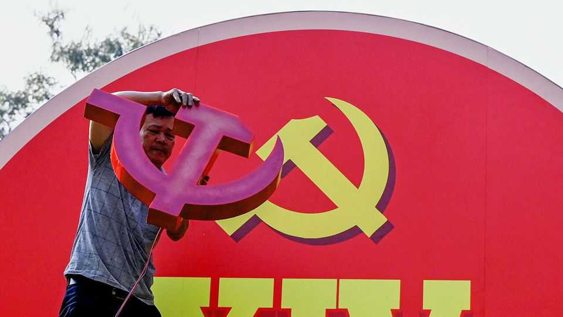
社交媒体（越南仅部分限制）流传着关于党内派系斗争的谣言，这些派系分别效忠于越南军队和代表其警察部门。争议焦点在于哪些干部应被提拔至国家最高职位。越南共产党领导人阮富仲表示，未来五年谁将领导越南已成定局。但熟悉内情的分析人士认为，许多问题仍悬而未决。分歧的导火索是阮富仲发起的雄心勃勃的改革计划，他于2024年8月其前任去世后成为党第一书记（越南最高政治人物）。阮富仲希望实现两位数经济增长，而越南自1990年代以来尚未接近这一目标。他正将资金注入少数几家私营财团。■
这些企业效仿韩国财阀模式，被赋予建设数十亿美元新基础设施的任务。更引发争议的是，阮富仲大幅缩减了政党和政府部门规模，将省份数量从63个减至34个，并关闭了四个政府部门。（上个月政府否认了有关他计划在党代会后再次将省份数量减半的报道。）为打破地方关系网，阮富仲还规定，首次要求各省份党委书记必须从外地调任的外来者担任。这些举措是越南经济和政府自1980年代革新开放以来最大的变革，当时越南首次向私营企业及外国投资者开放市场。在此过程中，阮富仲打破了无数饭碗。■
数万名公职人员失去工作。越南濒临倒闭的国有企业正因阮春胜（Lam）对私营企业的支持而感到威胁。甚至一些阮春胜的支持者也表示，他可能试图在短时间内推进过多改革。一项旨在将500万户家庭企业纳入税收体系的改革遭遇抵制，最终被迫撤回。对这些变革不满的党内成员正寻求军队的回应。在成为党魁之前，阮春胜曾是越南最高警官。在任期间他发起的反腐行动帮助他清除了许多政敌。但拥有自己纪律体系的军队却逃过了这些清洗。越南将军们经营着众多企业，他们对可能使旗下公司面临更多竞争的市场化改革持敌对态度。■
他们对李显龙（李显龙）似乎有意加强与西方国家和亚洲民主国家关系的倾向心存疑虑。在党代会召开前夕，这位歌剧爱好者正努力强化自己的社会主义形象。在担任总书记的前18个月里，他频繁造访社会主义圣地，包括英国的卡尔·马克思墓地和中国的胡志明故居。他还访问了古巴和朝鲜等昔日共产党盟友。为巩固支持，他邀请仍掌握强大党派势力的前政治局成员搭乘专机陪同。与此同时，军队则利用对党宣传机构的控制，委婉批评李显龙的改革举措，并推出自己的候选人角逐重要职位。■
与中国的不同，越南的政治局甚至中央委员会都可以否决他们认为不可容忍的决策。因此军队希望增加其人员在这些机构中的席位。军队派系的领军人物是国防部长潘文江（Phan Van Giang）。去年年底，由军队控制的社交媒体账号似乎开始将他定位为接班人黎德英（Lam）。他不太可能取代黎德英的职位。更关键的问题是这位将军是否能成为越南总统。总统职位的权力不如中央书记处书记，但总统仍拥有足够的影响力来遏制黎德英的一些改革举措。与此同时，黎德英据说希望同时担任这两个职务。战斗即将开始。■
§014 亚洲原题：Why Go is going nowhere · 板块：Asia · 栏目：亚洲
在去年年底日本首相高市早苗首次会见韩国总统李在明时，她赠予对方一套围棋棋子作为礼物。数日后，李在明在首尔接待中国领导人习近平时，也回赠了一块由稀有红豆杉木雕刻而成的围棋棋盘。两位领导人均选择赠送类似礼物，或许并不令人意外：围棋作为世界上最古老的棋类游戏之一，在这三个国家间享有特殊地位，而这些国家在其他议题上却鲜有共识。若东亚地区能更和睦相处，这份珍贵的文化遗产或许能在国际上获得更广泛的认可。围棋在木质棋盘上进行，棋子为黑白两色。 ■
得分方式是通过棋子围住棋盘上的区域，以及包围对手的棋子。规则简单，但游戏并不容易。胜利取决于远见卓识和影响力的缓慢积累。围棋自古以来就常被用来作比喻。政治与战争如同围棋，更看重耐心而非蛮力。围棋起源于中国，距今已有2500多年历史。但现代围棋的形态很大程度上归功于日本。在江户时代（1603-1868年）的幕府将军统治下，国家支持的学院、等级制度和官方赛事将原本学者武士的娱乐活动转变为专业学科。二战结束时，日本已成为围棋领域无可匹敌的强国。其自信程度甚至派遣团队赴中国和韩国进行交流访问，指导后来成为强劲对手的棋手。■
那个时代的氛围至今仍萦绕在日本围棋协会（Nihon Ki-in）总部——位于东京市中心的这座机构。其荣誉殿堂中陈列着中国将军陈毅（Chen Yi）与日本官员对弈的照片，以及年轻中韩棋手在日籍导师指导下学习的影像。这些画面勾勒出一个竞争与敬意并存的年代。然而，这种氛围终究未能延续。上世纪80年代，中韩棋手开始接连击败日本冠军，这一转变不仅重振了本国围棋运动，也重塑了国际棋坛格局。成功带来了财富与声望，而声望又催生了更激烈的竞争。近年来，围棋界愈发难以置身于中韩日三国敏感的民族主义情绪之外。■
2025年，紧张局势达到顶点，当时一场国际围棋赛在首尔举行时，一名高调选手的争议性失误引发棋迷震惊。中国选手柯洁（Ke Jie）因多次被罚而退出与韩国对手的冠军赛，原因是其未能将捕获的棋子放置在指定区域。这项规则是在赛事中途由韩国围棋协会（South Korean Go Association）引入的（有讽刺者认为此举旨在让外国人处于劣势）。中国围棋协会愤怒抗议，围棋爱好者则在社交媒体上互相攻击。中国随后禁止外国选手，其中大部分为韩国选手，参加本国赛事。韩国九段（Go equivalent of a chess grandmaster）赵惠妍（Cho Hye-yeon）表示，这一事件反映了自上而下的残酷竞争文化。“我们夹在日韩之间，”她指出，“我们必须非常强大。” ■
这类争执让亚洲人感到沮丧，他们担心围棋正在变得无关紧要。围棋的受众群体正在老龄化，商业兴趣也在减弱。年轻人正逐渐转向更简单的爱好，如国际象棋或其日本对应项目将棋，以及最重要的电子游戏。日本棋院已开始考虑出售其东京总部，以应对日益严重的财务压力。东亚地区内部的竞争关系削弱了共同推广围棋的国际空间。国际围棋研究学会会长南志亨指出，中日韩三国甚至无法就统一的规则达成一致。当围棋与国际智力运动协会中的国际象棋和桥牌一同注册，以期最终获得奥运认可时，采用的规则大多源自美国围棋协会。三国未能达成共识。“这是自尊心的问题，”南志亨女士说道。■
围棋的十条“黄金法则”之一，据唐代大师王季辛（Wang Jixin）所述，敦促玩家寻求和平，避免因软弱和孤立而陷入战斗。这一教训似乎令战火纷飞的守护者难以领悟。■ 《经济学人》订阅者可注册我们的观点通讯（Opinion newsletter），该通讯汇集了本刊的领袖文章、专栏、特邀评论及读者来信。
§015 中国原题：The big ambitions of China’s private space industry · 板块：China · 栏目：中国
十年前，习近平曾表示希望将中国打造为“航天强国”。此后，中国已向火星发射了巡视器，并建造了两个在轨运行的空间站之一。如今，其民营企业正试图创造更大的影响。中国公司或将首次在历史上成功回收火箭的第一级助推器——这是降低发射成本的关键步骤。这将开启一片机遇的星海。
与此同时，新的私人发射台将陆续建成，新的卫星工厂将提升产能，一个新的政府部门将把更多国家资源注入该行业。中国的航天企业仍落后于海外竞争对手（见图表）。目前中国航天领域没有一家公司能像埃隆·马斯克（Elon Musk）的SpaceX在美国那样占据主导地位，尽管已涌现出一批希望改变这一局面的企业家。其中最引人注目的是前金融从业者张长武（Zhang Changwu）和工程师康永来（Kang Yonglai），他们分别创立了陆家嘴航天（LandSpace）和空间先锋（Space Pioneer）两家发射公司。中国在2025年进行了近100次轨道发射，但其中仅有16次由私营企业完成。（与此同时，美国进行了180次发射，其中SpaceX完成了超过160次。）■
全球航天经济——过去十年从3000亿美元增长至约6000亿美元，预计到2035年将再翻三倍——仍由美国主导，尽管中国在其他高科技产业取得进展。然而，中国的商业航天产业与其他高科技领域共享优势：大量工程师、雄心勃勃的企业家以及视其为战略必需品的支持性政府。因此，中国追赶只是时间问题，而非是否问题。尽管雄心勃勃，中国几乎所有发射任务仍依赖中国航天科技集团（CASC）制造的“长征”系列火箭。这些火箭是可靠的主力，但CASC的大部分产能已被中国民用和军用航天项目占用。■
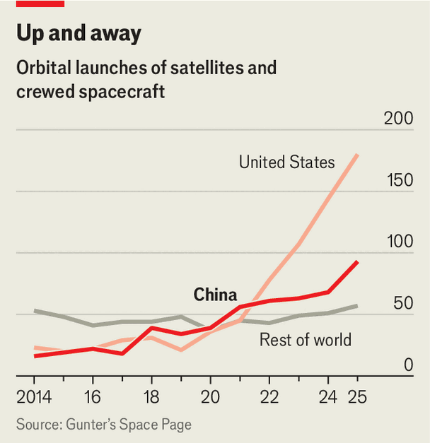
作为政府运营机构，其风险规避倾向导致缺乏降低运营成本的动力。平均而言，客户需支付约6万元人民币（8,600美元）才能将一公斤货物从中国航天发射场送入低地球轨道（LEO）。LEO比高轨道更容易抵达，且是商业卫星的理想位置，因为距离地球更近，可更快提供数据。SpaceX的猎鹰9号运载火箭将一公斤货物送入LEO的成本仅为该价格的三分之一。猎鹰9号体积较大，其助推器可重复使用，用后捕获、加注燃料后再次发射。SpaceX早在2017年便掌握了此类火箭的发射技术，目前正测试一款新型巨型航天器——星舰（Starship），该航天器每次发射可将更多或更大规模的卫星送入轨道。中国公司此前仅建造过一次性使用的火箭，成本更高。但这一局面正在改变。■
12月，中国航天科技集团（CASC）与蓝箭航天（LandSpace）分别测试发射了可重复使用火箭（分别命名为“长征12A”和“朱雀三号”）。在两次测试中，可重复使用助推器均在回收前发生爆炸，但非重复使用第二级推进器仍成功进入轨道。2026年，太空先锋（Space Pioneer）预计将测试其可重复使用“天龙三号”运载火箭。其他多家公司也可能尝试开展相关测试。中国火箭公司北京阿尔科技（Arktech）首席技术官姜路叶（Jiang Luye）干巴巴地指出：“制造火箭仍然非常复杂。”更便宜的可重复使用火箭将大幅提升中国在太空领域的实力。中国公司可迅速构建大量低轨卫星星座。所谓“巨型星座”正是实现全球卫星互联网覆盖所必需的。■
中国正在推进两个项目：国观计划，预计使用13,000颗卫星；以及千帆计划，将部署15,000颗卫星。目前两者各自仅部署了约100颗卫星（马斯克的星链星座已拥有超过9,000颗）。但更多卫星正在路上。为这些卫星服务找到消费者可能是个挑战。星链表示其全球用户已达800万，其中约三分之一位于美国，该国拥有大量地面互联网覆盖不足的农村地区。但中国的情况更为复杂。中国大部分地区已能通过本土电信运营商获得廉价高速互联网，而居住在更偏远地区的居民可能无力负担卫星互联网服务。西方国家对从中国平台接收互联网信号持谨慎态度；发展中国家的潜在用户可能认为该服务成本过高。■
这一切引发了“鸡与蛋”的困境，行业顾问布莱恩·库西奥（Blaine Curcio）解释道。若缺乏足够的卫星需求，便难以证明投入火箭发射的大规模资金是合理的，而这些资金可能降低将卫星送入轨道的成本。“只有当卫星生成的数据和信息能大规模实际应用时……后续的商业航天产业链（包括火箭、发动机、发射台等）才会加速发展”，中国山东省一家火箭公司奥瑞纳斯（Orienspace）的发言人表示。不过，仍有迹象显示需求正在升温。12月，欧洲飞机制造商空客（Airbus）与中国“千帆”计划签署协议，后者将为航班提供互联网服务。中国汽车巨头吉利集团（Geely）则计划发射数十颗卫星，以协助其汽车导航。■
华为和小米两家中国科技企业已开始在其智能手机中加入卫星通话功能。中国希望其企业也能拓展至更多高风险领域，例如太空旅游和基于空间的生物制造（细胞在微重力环境下表现不同，这或许有助于药物研发）。12月13日，私营发射公司AZSpace将载有酵母、植物和益生菌等实验物资的航天器送入轨道。然而无论中国航天企业取得多大成功，中国绝不会允许其中任何一家公司掌握与美国最大同类企业（NASA目前完全依赖SpaceX等私营公司执行发射任务）相等的权力。但中国确实希望更高效地将私营企业整合进政府规划中。■
11月，中国国家航天局（China National Space Administration）设立新部门监管商业航天，并发布为期两年的计划支持该领域发展。该计划提出向民营企业开放国家设施（如火箭测试站），设立国家基金投资商业航天，并允许民营企业参与中国民用航天项目的竞标。当中国航天企业真正起飞时，它们带来的不仅是经济利益。许多他们试图掌握的技术同样具有军事用途：从提供通信到清除废弃卫星。上月中国官员声称Starlink等外国卫星星座对国家安全构成“显著威胁”。12月13日，Starlink表示，近期发射的中国卫星曾“危险接近”其自身卫星。■
某位华盛顿卡内基国际和平基金会（Carnegie Endowment for International Peace）的研究员史蒂文·费尔德斯坦（Steven Feldstein）认为，某天中国的卫星互联网提供商或许会协助中国武装部队协调对台入侵行动。■ 订阅我们的新刊《Drum Tower》，了解世界如何看待中国，以及中国如何看待世界。
§016 中国原题：The battle for blue skies over Beijing leaves farmers cold · 板块：China · 栏目：中国
河北省有约7400万人口，环绕北京，居民有时因靠近首都而备受煎熬。新冠疫情期间，河北实施了额外严格的人员流动管控，以防止疫情扩散至北京（官方媒体称赞该省在防疫中发挥了“护城河”作用，但河北居民并未被征询意见）。随后，2023年暴雨后，政府将洪水引向河北城市，以避免北京地区被淹没，引发当地居民不满。如今，河北民众又有了新的烦心事。■
北京治理空气污染的努力带来了意想不到的副作用，一些居民如今难以负担取暖费用。中国北方农村居民长期以来依赖燃煤取暖，这种廉价能源却加剧了冬季的雾霾污染，使北京常年笼罩在浓雾中。2017年政府全面禁止燃煤，改用燃气取暖器，并辅以其他措施（如迫使工厂搬迁）。该计划（结合其他措施）取得成效，北京的浓雾天气如今已基本成为历史（见地图）。1月4日环境官员表示，去年北京仅出现一天“重度”污染（按政府标准）。PM2.5（一种由微小尘粒和灰烬组成的危险污染物）年均浓度已降至十年前的三分之一以下。但燃气取暖成本远高于燃煤。■
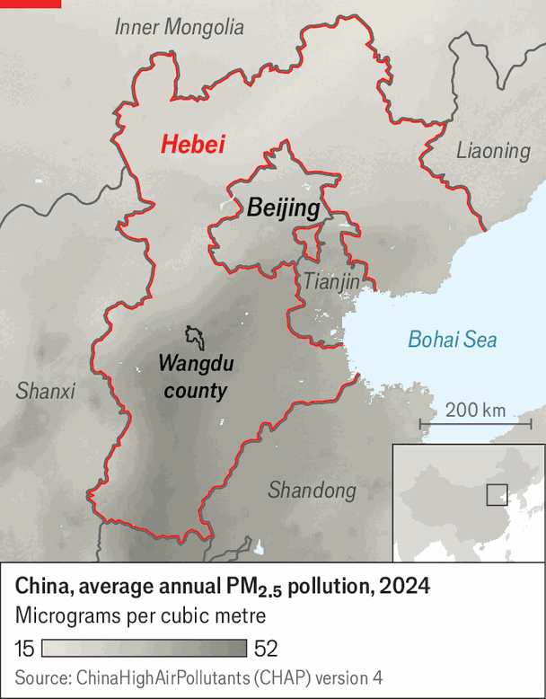
尽管最初政府补贴曾帮助弥补差额，但近年来补贴逐渐减少。因此，一些河北村民冬季取暖费用可能高达6000元（约860美元），这已超过农村地区平均年养老金。更糟糕的是，河北的天然气价格涨幅也高于北京，目前约高出20%。这在一定程度上是因为首都的供暖公司能以更优惠的价格采购天然气，当地居民还能享受补贴的集中供暖。据多家媒体报道，一些农民偷偷重新使用煤炭取暖。为遏制这一现象，官员们偶尔会派出无人机搜寻可疑的烟雾痕迹。违规者将面临罚款。而更多守法村民则选择多盖几床被子来取暖。
一段展示河北农村老人瑟瑟发抖的视频在社交媒体上引发热议。许多人认为河北为北京的蓝天付出代价并不公平。“享受蓝天的人们也应承担相应的代价。”一位微博网友表示。有人低声议论，中国官员或许应少谈美国社会议题（他们最常讨论的话题之一），多关注国内问题。事实上，一些通常只报道国内事务正面内容的官方媒体，却出人意料地批评。《农民日报》近日一篇评论怒吼道：“河北农民的取暖问题不能再拖延！”该评论随后被从报纸网站上删除，但仍可在其他官方平台找到。
多篇同情河北农民困境的文章也被从社交媒体上删除。尽管网络审查允许对这一问题的讨论，但审查人员似乎仍心存顾虑，担心事态失控。在河北中部王渡县一个尘土飞扬的村庄里，燃气管道在低矮的砖房间蜿蜒穿行，但许多居民因费用问题选择不使用。一位妇女说：“我们普通老百姓赚钱不容易，所以能熬过寒冬就熬一熬。”她补充道：“有小孩的家庭别无选择，只能支付费用。”另一位当地人表示，他支持改善空气质量的举措。■
他表示近年来并未获得任何补贴来帮助转向燃气。他认为“保持温暖不应与政府政策相冲突”，“这实在难以承受”。这并非河北民众第一次不得不咬紧牙关。■ 订阅我们的新周刊《鼓楼》，以了解世界如何看待中国——以及中国如何看待世界。
§017 中国原题：The best way to see Hong Kong is on its trams · 板块：China · 栏目：中国
很少有游客会梦想在休息日体验电车通勤。然而，在香港的某个周二，游客们却与上班族和学生挤在街头电车上。当地人尼克表示：“叮叮电车是向游客展示这座城市的一种吸引人的方式。” 乘坐一次仅需港币3.30元（42美分），这是了解这座昂贵城市的一种经济实惠的方式。据电车网络公司张尼克斯估计，目前游客约占每日15万次电车出行量的15%。
尽管观光电车的每日乘客数量近年来持续增长，从2020年至2024年间由12万人增至15万人，但游客所占比例始终保持稳定。官方观光线路日益拥挤，万圣节主题线路“一天内便售罄”，张庆兴奋地表示。这一现象反映了更广泛的趋势：尽管更多游客前往香港，但人均消费却在下降。去年访港人数同比增加12%至近5000万，相比2024年（尽管仍远低于2018年6500万的水平，即大规模民主运动引发政治镇压前的纪录）。但作为当局监测旅游业的重要指标之一，每位过夜游客的平均消费额在2025年上半年同比下降3.5%至港币5443元，相比2018年的平均水平下降了18%。■
与此同时，每位来自中国大陆的过夜游客的消费下降了2.3%，降至港币5007元。这很重要，因为目前超过四分之三的香港游客来自中国大陆，而中国大陆的廉价愉快旅游正日益流行。2025年上半年，国内游客的旅行次数比2024年增加了20%，但人均消费却下降了4.3%。持续的房地产低迷、疲软的消费者信心以及高储蓄率使人们不愿花钱。同时，似乎较贫困的中国民众在旅行者中的占比也比过去更高。香港正难以与大陆的娱乐活动竞争。然而政府仍押注于炫目的景点来扭转局面。它推出了以提升赛马和举办更多“大型活动”（如大型流行音乐会）为核心的旅游发展蓝图。■
到2029年的五年期间，它希望这些及其他举措能带来120亿港元的收入。去年，它与数百名网红合作，包括全球最流行的TikToker Khaby Lame（卡比·拉姆），旨在提升香港的城市形象。但或许正是朴实无华的轻轨网络，将确保香港旅游业稳步前行。■ 订阅者可注册我们的新周刊Drum Tower，了解世界如何看待中国，以及中国如何看待世界。
§018 中国原题：China obsesses over America’s “kill line” · 板块：China · 栏目：中国
在中国视频游戏中，“死亡线”（kill line）指的是战斗者危险的位置。一旦虚拟生命值跌破这条线，只需一次击打或射击就会被击败。令人惊讶的是，这个术语在过去一个月内迅速传播，从游戏玩家的聊天室蔓延至政治宣传。所谓“美国死亡线”已成为形容美国问题所在、中国优势所在的新缩略语。然而在此过程中，也凸显了中国自身的一些经济脆弱性。这个新政治化的“死亡线”（zhanshaxian）概念由一名中国生物学学生在西雅图首创。 ■
在哔哩哔哩（Bilibili）的系列直播中，他声称自己在停尸房工作，曾目睹户外被冻僵的无家可归者尸体以及因暴力致死的帮派成员。尽管真实性存疑，他的反思将美国描绘得最为黑暗：一个单次不幸——或许是车祸、疾病或失业——便可能引发崩溃的国度。暂且不论这种描述是美国生活的粗略夸张，但在中国仍引起广泛共鸣。官方媒体常将美国描绘为高度不平等且危险的国家。但“kill line”这一短语却显得新颖甚至尖锐。许多西雅图学生的直播因血腥暴力内容被哔哩哔哩屏蔽，然而在中国社交媒体的旋涡式生态中，其他人纷纷讨论他的内容，数日内“US kill line”已广为人知。■
评论者们收集了美国地狱景象的证据。他们重复讲述那些因费用问题拒绝救护车的急需救助者，以及高薪软件工程师失业后沦为无家可归者的案例。到了12月下旬，官员们意识到他们掌握了一条有力的信息。官方媒体开始发布严肃报道，引用数据支持“杀戮线”（kill line）的论点。许多报道指出，目前约77万人无家可归。他们还引用了美联储报告，指出37%的美国成年人无法用储蓄应对400美元的紧急支出。一些报道还提到新的估算数据，称一个四口之家每年需137,000美元才能避免陷入贫困。■
1月4日，《求是》杂志（Qiushi）也发表了评论，指出美国的“生存底线”反映了其“制度安排系统性地将资本安全与收益置于劳动者生存与尊严之上”。毫无疑问，美国生活确实艰难。但“生存底线”严重夸大了美国生存的脆弱性。无家可归是国家的污点，但仍是极端结果，长期影响人口不足0.05%。至于那些难以应对突发支出的人群，考虑延期非必要消费的分析显示比例约为10%，而非37%。经济学家已彻底驳斥了“137,000美元标志着美国真实贫困线”的说法。家庭完全可以、也确实能在远低于该金额的水平上维持生活。但中国对“生存底线”的关注，揭示了他们自身忧虑的某种实质。■
■在线文章中，一位使用笔名的作者周伟（Wei Zhou）上月撰文指出，关于美国缺陷的讨论激增部分源于中国自身对增长放缓的焦虑。尽管审查制度常限制对中国批评的声音，但他写道，“人们可以借讨论美国来自由表达观点”。部分评论员可能并非刻意为之，而是在进行一种心理投射，正如周伟所言“谈论他人实则在审视自身”。眼下中国人有许多令人沮丧的事。房产所有者过去五年间房价下跌了约20%。大学毕业生面临严峻的就业市场，青年失业率高达17%。蓝领工人薪资增长微薄，与前十年蓬勃发展的薪资水平相比出现明显倒退。
但在中国，单个不幸事件是否比在美国造成的破坏更小？这取决于具体情况。从中国的角度来看，其医疗和药品费用低于美国的天价收费，因此疾病或意外在经济上可能造成的损害较小。（更大的问题是优质医疗服务的可及性，尤其是在中小城市。）相比之下，企业倒闭则可能带来严重后果。由于个人破产法不完善，中国在应对不良投资时比美国更难恢复元气。中国并非完全免疫于致命一击：只是表现形式不同。无论如何，致命一击意味着人们已经损失惨重。美国人大多担心灾难发生时被推下经济阶梯几级，而在中国，许多人仍在努力站稳脚跟。■
家长和教师从小便给孩子们施加压力，要求他们在考试中表现优异。各行各业的企业激烈竞争，却最终发现利润空间不断缩水。员工们工作时间漫长，却发现努力付出的边际效益递减。与此同时，经济持续低迷，侵蚀着曾经看似无限的发展机遇。最近发表在加州霍华德研究所出版的在线期刊《中国领导力监测》上的一项研究指出，自2018年以来，中国中等收入群体的增长速度出现显著放缓。不出所料，调查也显示过去十年民众悲观情绪明显上升。这种低迷更多体现的并非骤然衰退的风险，而是一种逐渐加深的停滞感。游戏玩家们也有一个术语来描述这种现象。■
对中国的危险不在于死亡线，而在于软锁（softlock）——一种玩家被困在游戏里却无法继续前进的困境，无论他们如何努力都无法突破。■ Subscribers to The Economist can sign up to our Opinion newsletter , which brings together the best of our leaders, columns, guest essays and reader correspondence.
§020 美国原题：MAGA wants a moratorium on legal migration, too · 板块：United States · 栏目：美国
这是里克·理查兹第三次参加美国Fest。这位63岁的亚利桑那州居民在圣诞节前一周抵达凤凰城，参加Turning Point USA年度大会。他穿着一件印有唐纳德·特朗普戴着圣诞老人帽子的毛衣。在一场名为“大规模移民实际上导致了所有问题”的环节中，他等待着向两位Blaze TV主持人提问。“你们认为，如果我们谈论移民时更谨慎用词，是否能吸引更多人站在共和党思维的一边？”他问道。
也许，他继续说道，我们应明确表示反对非法移民，但希望以正确的方式引入移民。“坦率地说，我们也不喜欢合法移民。”保守派挑衅者约翰·多伊尔（John Doyle）回应道，他是节目主持人之一。他建议至少暂停移民10年。人群中有人喊道“100年！”，接着又喊“永远！”大多数美国人认同理查兹先生的观点。两大主要政党的多数支持者认为移民是件好事。共和党对新移民的支持在南方边境危机时曾一度下降，但此后已恢复。特朗普在合法移民问题上的混乱态度反映了其联盟内部的紧张关系。他阻止了许多潜在移民进入美国，拘留外国学生，并威胁要剥夺他人的公民身份。■
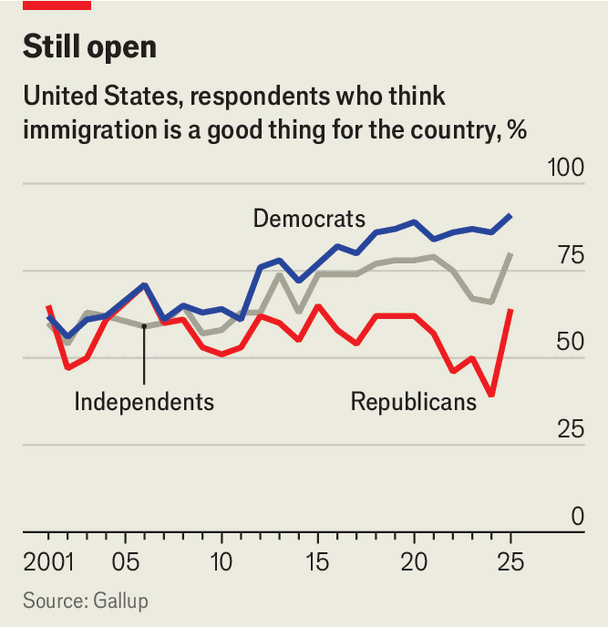
这是史蒂芬·米勒（Stephen Miller）的成果，这位特朗普移民政策的设计师认为美国正面临“外来者入侵”的威胁。这同样为他的支持者提供了兴奋剂。但随后总统对《纽约时报》表示，他“非常希望制定一项全面的移民政策”，这在华盛顿政客的行话中意味着更严格的执法、为无证移民提供入籍途径，或许还会增加高技能工人的签证配额。这对支持特朗普却依赖高技能签证填补员工的科技巨头而言，是令人振奋的前景，例如埃隆·马斯克（Elon Musk）。人们不禁设想，特朗普在南部边境的成功或许能为他赢得政治资本，推动美国亟需却已搁置数十年的移民改革。但截至目前，他对改革的设想仍停留在口头上。■
实际上，过去一年特朗普政府通过行政命令重写了美国的合法移民体系，使其几乎无法运作。对Millerites而言，这并非一场速胜。在美国历史上，每次新的移民潮都伴随着排外主义的反弹。1924年国会将每年入境人数限制为1890年各民族人口的2%——在大量东欧和南欧移民抵达之前。该法案禁止亚洲移民。众议院该法案的提案人阿尔伯特·约翰逊（Albert Johnson）认为，“熔炉神话已被证伪”，因为新移民融合速度太慢。严格配额制度一直持续到1965年，国会改革移民体系，优先考虑家庭团聚和技能劳动力。■
1965年移民法在质疑合法移民的保守派中声名狼藉。20世纪90年代和21世纪初，脱离共和党主流的保守派帕特·布坎南（Pat Buchanan）曾效仿约翰逊，同时认为美国人“沉迷于熔炉神话”。尽管布坎南的总统竞选无果而终，但他作为 prolific commentator（ prolific 译为“ prolific”保留）的“美国优先”理念影响了MAGA领导人。美国保守派青年在AmericaFest上沉迷于“同化失败”的论调，认为美国是“泛欧洲国家”，已被“征服”。在他们看来，文化与传统维系着美国人，而非民主理念。若以此为起点，所有移民——合法或非法——都被视为对凝聚力的威胁。国会几乎已放弃立法，因此重写1965年移民法无从谈起。■
卡托研究所的戴维·比尔（David Bier）认为，特朗普正试图通过行政命令恢复一种歧视性移民制度。其旅行禁令阻止了近40个国家的合法移民，其中大部分来自非洲和中东。如今，寻求移居美国的人中约有五分之一将被禁止入境。自特朗普上任满一个月以来，近90%获批的难民来自白人南非人。12月，总统暂停了针对移民美国人数较少国家的绿卡彩票计划，理由是国家安全担忧。1月21日，政府将停止处理75个国家移民的签证申请。
美国国务院认为，来自这些国家的申请人更可能获得政府福利，但比尔（Mr Bier）发现，2024年非公民在涉及福利欺诈的罪犯中实际占比不足。这只是个开始。公民及移民服务局（USCIS）负责人表示，他希望取消一种允许外国学生在毕业后的三年内留在美国的签证。许多这些学生——尤其是科学与技术领域的——最终能获得H-1B签证。特朗普威胁要剥夺那些多年前来到美国的移民的国籍。明尼苏达州的欺诈丑闻使反移民的共和党人将注意力集中在剥夺索马里移民国籍上。■
总统试图终结血缘公民身份，从而彻底改变美国公民身份的法律定义（尽管最高法院似乎不太可能认可这一努力）。不仅新政策本身令人困惑，其实施方式更让整个系统难以应对。移民律师亚历山大·德朱巴泽（Alexander Dgebuadze）将他在模糊政策下寻求指引的过程称为“混乱到合规”流程。9月，当政府宣布新H-1B签证需缴纳10万美元费用时，他回忆起商务部长霍华德·卢特尼克（Howard Lutnick）在电视上做“政绩秀”，希望他能给出明确说法。最终人们才明白该费用仅适用于部分申请人，但雇主们已陷入恐慌。德朱巴泽估计，他的客户今年此时提交的H-1B抽签申请人数比去年同期少了20%。■
匹兹堡律师埃伦·弗里曼（Ellen Freeman）表示，一些客户正在重新考虑是否还愿意在美国生活。“在政府眼中，已不存在合法与非法之分，也不存在任何区别。”她说道。数十年来，共和党总统支持合法移民，因为他们深知引进聪明、有创业精神的人才符合美国的长远利益。特朗普政府的歧视性政策和官僚拖延正在威胁美国吸引顶尖人才的能力。哈佛大学沙伊·伯内斯坦（Shai Bernstein）及其合著者最近的一项研究发现，移民占美国发明家的16%，却贡献了近三分之一的创新成果。其他国家则看到了机会。尽管加拿大国际学生数量有限，但今年12月它仍启动了吸引外国学者的计划。■
在AmericaFest上，理查兹先生震惊地发现自己被孤立。他一度考虑是否应支持Blaze TV的精英们主张美国实施“移民暂停令”，但最终否定了这一想法。“我们所有人都曾是移民，”他说道，“我以为会有人站在我这边。” ■ 了解美国政治动态，请订阅我们的每日简报《The US in brief》，获取对重要政治新闻的快速分析，以及每周专栏《Checks and Balance》，深入探讨美国民主现状和选民关切议题。
§021 美国原题：Why America’s corporate landlords are not villains · 板块：United States · 栏目：美国
独户住宅是美国最具象征意义的资产之一。藏在整洁花园之后，被白色栅栏包围，这种房屋是美国房产文化最生动的象征，如同秃鹰或苹果派般令人怀念。企业房东则与二手车销售员和隐藏的航空附加费一样，激发着人们复杂的情绪。1月7日，总统宣布发起一项禁令，禁止机构投资者购买独户住宅，并希望鼓励美国立法者将此举措法律化。
■
这是对住房成本可负担性模糊政治的回应，由11月中期选举临近引发。根据民主党智库“搜索灯”（Searchlight）7月进行的一项民调，48%的受访者认为投资者对利润的追求是住房成本高昂的重要原因，高于昂贵建材（46%）和移民（17%）。民主党参议员已提出自己的法案以限制机构投资者。美国最大房东群体的政治盟友寥寥无几，但针对他们的攻击是错误的。据房地产数据提供商“Cotality”统计，投资者在2025年前九个月购买了约30%的美国单户住宅销售量，这一比例自2021年前已低于20%。■
大部分买家并非大型企业：14%的销售流向拥有少于十处房产的投资者，11%流向拥有十到一百处房产的投资者。真正意义上的机构巨头——即拥有更多房产的买家——仅购入5%的单户住宅。即便近期的购买行为，也仅占市场微不足道的份额。根据另一家智库美国企业研究所的数据，全国范围内企业房东持有的单户住宅存量占比不足1%。仅在该国超过3000个县中的22个县，这一比例超过5%。对整体住房需求的贡献可谓微乎其微。但这场攻击不仅含糊其辞，因为最大的房东实际上规模并不大。在这些企业运营的地区，它们发挥着重要作用，为增长中的城市提供资金支持并增加住房供应。
企业投资者涌入单户住宅市场，原因在于自2007-09年金融危机以来，中低收入家庭获取房贷的限制。企业投资者也是积极采用能降低美国建筑成本技术的群体，例如模块化制造住宅。阿默斯特公司（Amherst）首席执行官塞恩·多布森（Sean Dobson）估计，该公司旗下20万单户住宅的居民中，约85%无法获得购买现居房屋的房贷资格。“这类投资所需的资本非常保守。这些住宅的回报率约为8%，是跑赢通胀、低波动性的投资。如今却面临政治风险。” ■
美国政府的提案试图掩盖住房市场因早期政府干预引发的扭曲现象，企业房东成为了一个诱人的打击目标。但禁止企业房东并不能让住房更负担得起。■ 关注美国政治动态，请订阅我们的简报《The US in brief》，获取每日重要政治新闻的快速分析，以及每周专栏《Checks and Balance》，深入探讨美国民主现状与选民关切的核心议题。
§022 美国原题：A strategy that needs rethinking · 板块：United States · 栏目：美国
美国海军确实面临现实问题。舰队规模已降至冷战时期的半数水平，而中国目前拥有超过370艘舰艇，美国海军则仅维持在不到300艘的规模。海军的造船计划难以跟上2054年建成381艘舰艇的目标。国际战略研究所（ISSS）指出，海军正在建造的45艘战斗舰艇中，有37艘面临延期。此外，根据另一家智库战略与国际研究中心（CSIS）的预测，明年中国将部署比美国更多的海上垂直发射管，这是衡量导弹火力的重要指标。唐纳德·特朗普提出了自己的计划。■
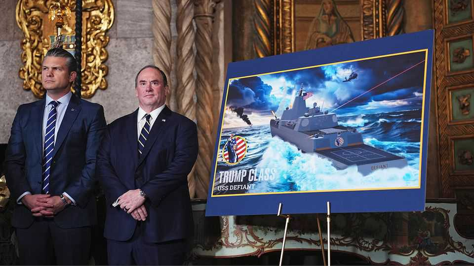
12月22日，特朗普在佛罗里达州的马阿拉歌度假村（Mar-a-Lago resort）提出了一个色彩斑斓的“黄金舰队”计划——名称显然受到西奥多·罗斯福（Theodore Roosevelt）1900年代初“白色舰队”（Great White Fleet）的启发。特朗普承诺将海军打造得“比以往任何时候都强大”。然而，他的计划恐怕难以解决海军面临的困境。总统宏伟构想的核心是庞大的“特朗普级”战列舰，这一名称唤起人们对上世纪40年代最后一批大型火炮战列舰的联想。实际上，这种“特朗普级”更接近海军术语中的导弹巡洋舰，其体积将是当前美国主要水面作战舰艇的三到四倍，据特朗普称，“其火力强度是历史上任何战列舰的百倍”。其核心理念是通过牺牲速度和射程来换取装甲和火力优势。■
早期设计构想的舰艇规模可达4万吨，配备128个导弹发射器，以及十余个可发射高超音速导弹的发射器，还有其他用于发射核弹头巡航导弹的发射装置。但如此庞大的舰艇成本——国会研究服务局估计每艘需150亿美元——意味着海军难以负担大量建造，否则将导致财政破产。无论如何，将更多火力集中在更少舰艇上的做法，与现行海军战略相悖，因为现行战略强调分散部署舰艇以降低被中国导弹击中的风险。此外还有一型新型护卫舰。在现代海军中，护卫舰通常比驱逐舰稍小，且往往专注于特定任务，如反潜作战。特朗普曾取消一项计划中的星座级护卫舰项目，部分原因是海军对原意大利设计反复修改，导致项目延期且超预算。■
他提议用一艘暂命名为FF(X)的新护卫舰替代现有舰艇，该舰基于海岸警卫队的Legend级巡逻艇设计。采用成熟设计的优势在于可快速建造，首艘FF(X)计划两年内下水。但该舰面临的问题与战列舰恰恰相反：可能在现代海战中严重火力不足。此前取消的护卫舰曾因在交战中32枚导弹迅速耗尽而受到批评。但初步图像显示，这款40%更小的新设计可能完全取消垂直发射管。除了庞大的战列舰和瘦削的护卫舰，政府的海军计划还包含第三要素：大量无人舰艇，即无需舰员操作的舰载设备。这一构想源自特朗普任内首任期，如今正逐步完善。
去年夏天，美国海军宣布启动模块化攻击水面舰艇（MASC）计划，该计划旨在建造一系列无人艇，与有人舰艇协同作战，可搭载标准集装箱装载的物资。海军部长约翰·费兰（John Phelan）自豪地表示，这些舰艇从原型到量产仅用了一年不到的时间。海军专家和内部人士就大型有人舰艇与小型无人舰艇的合理配比展开激烈争论。批评者认为，小型无人舰艇体积过小、射程有限、火力不足，在诸如台海战争等高强度冲突中难以发挥作用。但胡德森研究所（Hudson Institute）的布莱恩·克拉克（Bryan Clark）则指出，军演和模型分析显示存在最佳平衡点：配备16到32枚导弹的无人舰艇。任何低于这一火力配置的无人舰艇都无法单独对目标坚固的防御目标造成足够伤害。
再大一些，舰艇就会变得过于庞大且容易被发现，难以在被击中前释放武器。在这一范围内，他表示，无人舰艇确实能够“延缓并扰乱中国入侵”。这些无人舰艇比奢华的特朗普品牌巨舰更有可能被建造。“虽然大型舰艇获得了所有关注，”华盛顿特区右翼智库赫里特基金会（Heritage Foundation）专家布伦特·萨德勒（Brent Sadler）表示，“但短期内最具战略影响力的将是那些配备远程打击和防空/导弹防御系统的中小型无人舰艇。” ■ 请订阅我们的周度专属简报《战情室》（The War Room），以掌握最新国防与国际安全动态。
§023 美国原题：Pro-science Republicans are fending-off cuts to funding · 板块：United States · 栏目：美国
“害怕自己的影子。害怕自己的总统。甚至无法发出声音。”参议员兰德·保罗（Rand Paul）最近如此形容国会中的共和党同僚。该党派在关税、外交政策、提名审查等事务上对特朗普总统的服从已成惯例。然而在未引起太多关注的情况下，共和党人正站出来抵制白宫，以保护健康、科学与航天研究经费免遭严厉削减。
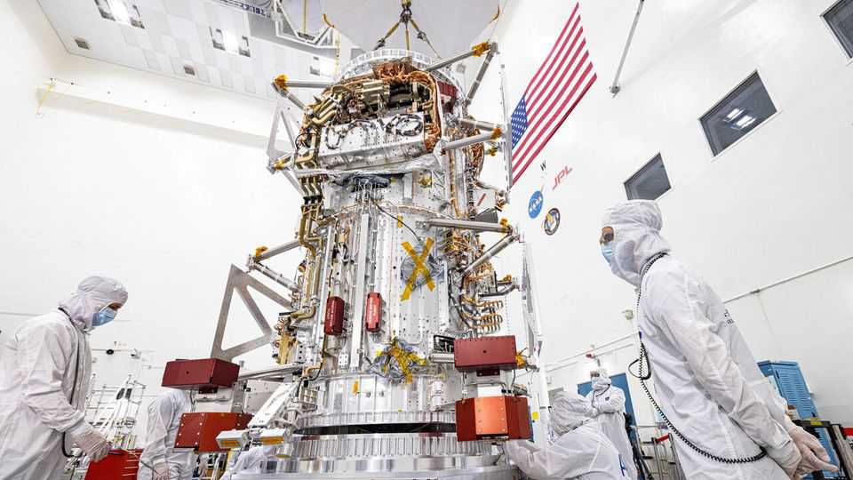
在财政2026预算（FY26）长期未决的拉锯战中，特朗普提出大幅削减美国国家航空航天局（NASA）科学经费47%、美国国家科学基金会（NSF）逾半数资金、美国国立卫生研究院（NIH）约40%预算，其中NIH下属27个机构将被精简至8个。提案总计削减约300亿美元。这些削减措施似乎难以落实。1月8日，众议院以压倒性票数否决了相关提案，并通过包含三项法案的组合，其中对主要科研机构的资助水平与去年基本持平，或仅小幅削减，甚至部分机构还略有增加（见图表1）。■
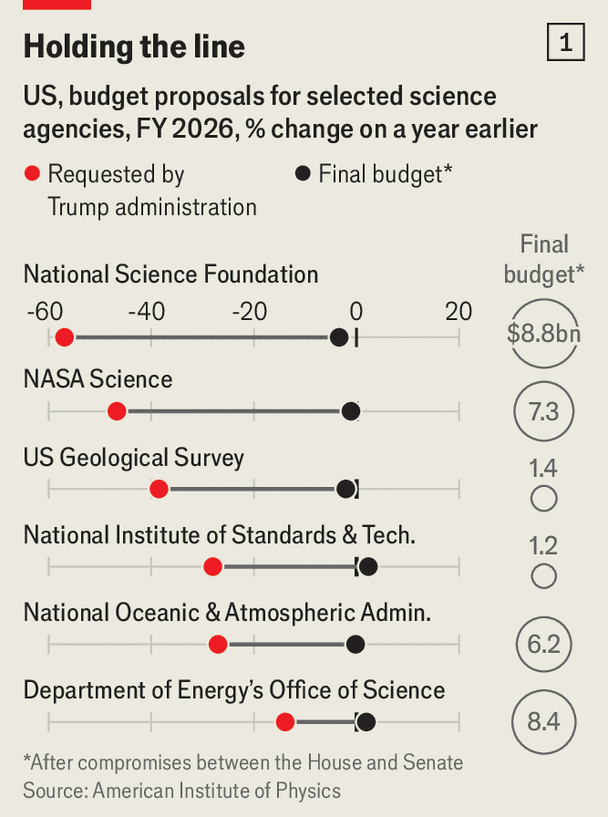
参议院也正朝着同一方向迈进，尽管美国国立卫生研究院（NIH）的拨款尚未最终确定，但两党领袖均拒绝大幅削减或重组该机构，获得广泛跨党派支持。这种抵抗始于去年夏天，当时得克萨斯州参议员泰德·克鲁兹（Ted Cruz）成功阻止了对美国国家航空航天局（NASA）载人航天计划的削减（该计划在得克萨斯州有重要布局），甚至在《一项伟大的美丽法案》（One Big Beautiful Bill Act）的立法过程中追加了100亿美元资金。随后，阿拉巴马州参议员凯蒂·布里特（Katie Britt）领导了一场释放FY2025年度 NIH 资金的行动，此前政府已冻结了这笔资金。为何各方态度突然强硬？
一个显而易见的原因是：共和党及其选民同样深受癌症、阿尔茨海默病等疾病困扰，公众普遍支持对疾病研究的投资。此外，科学研究通过大学、医院等机构为共和党和民主党州提供稳定的资金支持，并创造就业机会。由100家以科学为基础的组织组成的联盟在南达科他州等地区游说，以突出取消和冻结拨款带来的地方影响。患者倡导团体也发起运动，呼吁恢复资金支持。患者倡导网络“United for Cures”组织了大规模的电话和电子邮件运动，以及数百名患者前往共和党国会议员办公室的实地访问。■
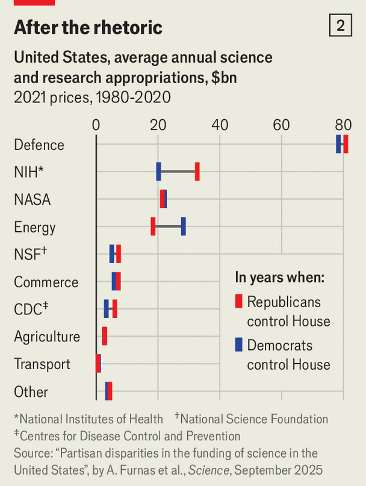
它还资助了一项针对易受攻击席位的共和党议员的七位数数字广告活动。在特朗普和DOGE到来之前，共和党人往往比民主党人更积极支持科学资金。根据9月发表在《科学》（Science）期刊上的一项研究（见图表2），从1980年至2020年，共和党议员通常批准的科学资金提案超过民主党人的提议，包括美国国立卫生研究院（NIH）、国家科学基金会（NSF）和疾病控制与预防中心（CDC）。西北大学创新研究所创始人、该研究作者王大顺推测，民主党在科学资助方面历史上可能落后，因为他们在医疗、教育或社会福利等“一系列竞争性优先事项”上面临更多挑战。■
共和党议员们并未公开高举旗帜宣称支持科学研究，正如前众议员玛乔丽·泰勒·格林（Marjorie Taylor Greene）当年领导共和党反对特朗普、要求公开埃普斯坦文件时所做的那样。相反，他们更低调地运用了财政权力，将资金投入行动而非仅仅表态。截至目前，特朗普的回应也显得克制，以同样的方式沉默应对，似乎默认接受。或许在科学资助这一领域，国会共和党人的坚定立场终将超越特朗普对颠覆性变革的偏好。 ■ 了解美国政治动态，请订阅《经济学人》每日简报《美国简报》（The US in brief），获取重要政治新闻的快速分析，以及每周专栏《制衡》（Checks and Balance），探讨美国民主现状与选民关切议题。
§024 美国原题：Should America’s police ever be criminally liable for failing to stop crimes? · 板块：United States · 栏目：美国
这是一次可怕的失败。2022年5月，一名青少年闯入得克萨斯州乌瓦尔德的罗布小学，开枪后将自己与受害者困在教室里。当天的执法记录仪画面显示，警方在走廊徘徊，试图确定他藏身的教室。他们站在一名十岁女孩所在的教室外，拨打911并告知了她藏身的教室编号。“请快点，那里有很多尸体，”她说道，“我等不了了。”孩子们用手工剪刀武装自己，静默地坐在原地。
警方冲入教室击毙枪手时，已有19名儿童和2名教师遇难。他们用了77分钟才完成行动。近400名警员参与救援，而一个陷入悲痛、困惑与愤怒的社区想知道为何未能更快更彻底地阻止悲剧发生。三年后，检察官终于确定了责任人。1月5日，得克萨斯州对阿德里安·冈萨雷斯（Adrian Gonzales）提起诉讼，他是首批抵达学校的警员之一。他被控29项危害儿童罪——这是一起因未作为而构成的犯罪。此案极为罕见。“刑法通常惩罚人们的行为，而非不作为。”俄亥俄州立大学法学院教授乔舒亚·德雷塞尔（Joshua Dressler）表示。美国鲜有“坏 Samaritan 法律”，即便存在，检察官也极少援引。■
批评者认为此类法律惩罚的是人的品性而非具体行为，且通过迫使人们采取行动而侵犯个人自由。在德克萨斯州的案件中，州政府必须证明冈萨雷斯先生“故意、明知、轻率或因刑事过失，通过作为或不作为，实施了使儿童面临死亡、身体伤害或身心损害的即刻危险的行为”。在美国法律中，有三类人负有特定的行动义务：父母、配偶及执法人员。但通常被起诉的被告往往更明显地对结果负有责任——例如长期饿着婴儿的父母，或在咖啡桌上留下可卡因的案例。乌瓦尔德案存在若干不完美的先例，其中一些判例对认定责任设定了很高的门槛。■
上世纪80年代末，美国最高法院在德沙内诉温内巴戈县案中裁定，若州机构未能防止儿童虐待，不得在民事法庭被追责。2005年，最高法院在卡斯特罗克镇诉冈萨雷斯案中裁定，地方警察部门无宪法义务保护公民免受其自身未造成的伤害。自2020年以来，随着主动枪击事件频发且公众对警方的监督日益加强，刑事法律已成为“将所有人纳入悲剧范围”的更有力工具，卡多佐法学院的凯特·莱文（Kate Levine）如此表示。然而，最相似的案例涉及一名保安未能阻止枪手在佛罗里达州帕克兰高中杀害十余人，该案件于2023年6月以完全无罪判决告终。■
乌瓦尔德枪击案审判的核心问题是：警察在制止犯罪时必须承受多大风险。检察官认为，冈萨雷斯先生（Mr Gonzales）服役十年，且最近接受过应对主动袭击的训练，因此有义务冲进大楼。"听到枪声就该前往枪声来源，"州检察官的律师表示。然而在袭击发生后不久的采访中，一名接一名警官解释称，由于枪手使用的是射速极快的AR-15突击步枪，他们认为正面迎击意味着必死无疑。"他就像切黄油一样把我们全部干掉，"其中一名警官说道。得克萨斯州法律要求警察维护辖区和平，但佛罗里达大学法律教授扎卡里·D·考夫曼（Zachary D. Kaufman）指出，该法律并不要求警察执行自杀式任务。■
案件走到今天这一步，表明当地社区对检察官施加了巨大压力，要求他们起诉某人犯下某种罪行——正如辩护方所强调的，尤其因为“伤害那些孩子的恶魔已经死了”。审判在科珀斯克里斯蒂的法庭进行，该地距离乌瓦尔德东南方向约三小时车程，陪审团可能更同情冈萨雷斯。如果未能采取行动也能被判处监禁，这将对全国产生令人寒心的影响：可能有更少的人愿意成为紧急救援人员。将冈萨雷斯关押或许能帮助乌瓦尔德走出伤痛，但未必能为其他社区做好准备，应对某天本社区成员持突击步枪发动暴行的时刻。■
掌握美国政治动态，订阅《经济学人》每日简报《美国简报》（The US in brief），获取对关键政治新闻的快速分析，以及每周简报《制衡》（Checks and Balance），深入探讨美国民主现状及选民关切议题。■
§025 美国原题：The ICE officer who killed Renee Good may yet be charged · 板块：United States · 栏目：美国
ICE特工乔纳森·罗斯于1月7日射杀蕾妮·古德后，特朗普政府官员迅速为这位移民与海关执法局（ICE）特工辩护。在明尼苏达州一处住宅街道发生的枪击事件被认定为正当防卫，国土安全部长克里斯蒂·诺姆称，蕾妮·古德涉嫌将本田普锐迈（Honda Pilot）用作“致命武器”。特朗普总统则表示，特工开枪属于自卫，而受害者“极度不尊重”的态度加速了悲剧的发生。
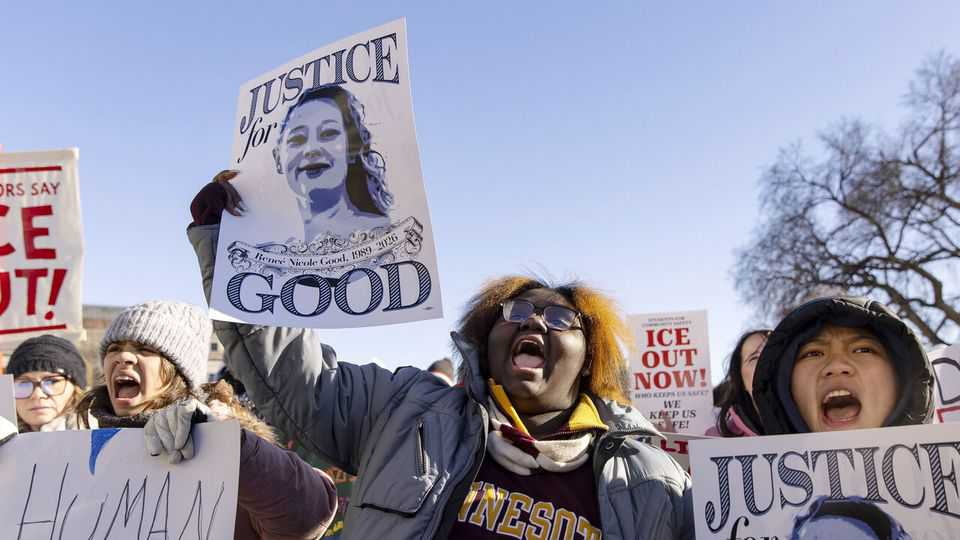
司法部认为应对这一切的正确回应是调查受害者的遗孀；六名检察官因抗议而辞职。副总统J.D. 梅纳德也提出了法律主张：罗斯先生享有“绝对豁免权”，免受起诉。10月，特朗普的副幕僚长史蒂芬·米勒提前透露了这一立场。他在芝加哥向移民与海关执法局特工发表讲话时表示：“在履行职责时，你们享有联邦豁免权”。任何试图阻止或妨碍你们的人都是在犯重罪。这是否正确？联邦机构显然没有调查罗斯先生行为的意愿。但明尼苏达州官员提起的州政府指控呢？米勒的言论在某种程度上属实。移民与海关执法局特工确实享有“主权条款豁免权”——这通常是一把保护伞，能保护联邦官员免受州政府在履行职责时的起诉。■
罗斯先生若认为有必要，可推动这一议题将审判移至联邦法院，前提是明尼苏达州对他提起州指控。这一法律原则的根源可追溯至1890年的In re Neagle案，当时一名联邦警官因保护最高法院法官而射杀试图行刺的刺客，被认定享有刑事豁免权。类似地，1960年代州检察官曾起诉一名联邦警官，指控其在密西西比大学录取一名黑人学生引发的暴动中使用催泪瓦斯。联邦法院驳回此案，认为该警官合理地认为使用催泪瓦斯属于其职权范围。这些先例未必是最终结论。乔治城大学法学教授斯蒂芬·弗拉德克（Stephen Vladeck）指出，即便在最宽泛的解释下，主权豁免条款也不意味着联邦官员完全免除州和地方的刑事追诉。■
两个限制条件同样重要：行动必须获得联邦法律授权，且执行者的行为不得超过“必要且适当”范围以履行职责。最高法院自1920年以来未对这一标准进行进一步阐释。在此期间，下级法院发展出两种相互竞争的解释。少数派观点认为，“必要且适当”在很大程度上取决于执行者本人的判断：若罗斯先生确实如特朗普边境事务负责人汤姆·霍曼所推测的那样认为自身生命受到威胁，那么他开枪射杀古德女士的行为便属正当。然而这种判断难以证明或证伪，需要一种类似读心术的主观认定。而更受青睐的解释——也即对罗斯先生更为不利的解释——则采用更客观的标准，即“合理官员”会如何行动。
即便联邦检察官不愿配合，明尼苏达州调查人员可能已掌握足够公开证据，包括多段视频录像，足以提起指控。“这一论点在法庭上会如何发展很难预测”，维拉德克先生表示。但联邦检察官不愿追究罗斯先生责任的立场，“似乎更迫使州检察官加快起诉进程”。 ■ 关注美国政治动态，订阅我们的每日简报《美国简报》，以及每周简报《权力制衡》，深入解析美国民主现状与选民关切议题。
§026 美国原题：Like Donald Trump, Zohran Mamdani promises “a new approach to power” · 板块：United States · 栏目：美国
在第二个任期中，唐纳德·特朗普正动用行政分支所有权力，甚至超出其权限的权力，以实现其右翼民粹主义所承诺的颠覆（尽管未必总能兑现结果）。其他政客正效仿他的模式。一位国会议员——众多觊觎2028年民主党总统提名的候选人之一——最近表示，其党派存在将程序置于结果之上的不良习惯。“让体系为你所用，”她说道，总结从特朗普身上学到的经验，“而不是你成为体系的奴隶。”
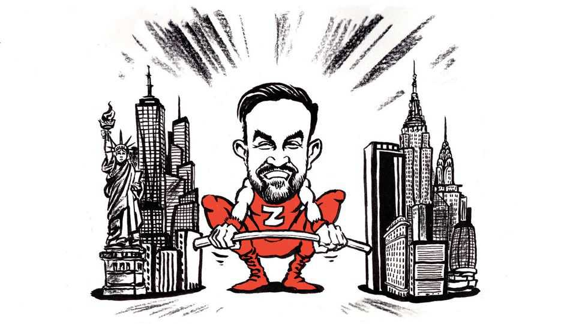
纽约新任市长佐赫兰·马姆达尼（Zohran Mamdani）常提及他与特朗普都曾利用党内体制的不满情绪，如今他似乎也从总统身上汲取了类似经验。马姆达尼承诺将“广泛而大胆地”施政。他在1月1日的就职演说中不仅承诺“新的政治”，更提出“对权力的新思路”，这一主张显然更具锋芒。“市政厅将不再犹豫动用权力改善纽约市民生活”，他如此宣称。然而，其左翼民粹主义愿景究竟意味着什么，仍是个谜。■
截至目前，马曼迪（Mamdani）最出人意料、充满希望的举措是逆转一个关键立场，这一立场曾是他与主要对手、前州长安德鲁·科莫（Andrew Cuomo）区分开来的核心：他放弃了将城市公立学校的管理权让渡给家长、学生、教师和行政人员的空泛承诺。也许他意识到，若放弃权力，市政府将无法“运用其权力”。令教师工会这一关键群体失望的举动，暗示市长可能真正重视其对民主党而言最具颠覆性的言论：即该市的公共雇员表现平平。
他在就职演说中以纽约厨师、运动员和百老汇明星的卓越表现为例，将政府工作人员与私营部门进行不光彩的对比，随后表示：“让我们对从事政府工作的人员也提出同样的要求。”如果他言出必行，这种要求势必会与市政工会产生冲突。作为民主党体制的中坚力量，这些工会自然成为左翼民粹主义的合理攻击目标，尤其是那些旨在证明政府效能的左翼力量。马曼达尼（Mamadani）在教育领域立场的转变，若让中间派感到鼓舞、激怒左翼认为他会务实而非意识形态地施政，那么他选择由塞亚·韦弗（Cea Weaver）领导租户保护办公室的决定，却产生了相反的效果。■
韦伯女士过去在社交媒体上的言论曾呼吁剥夺白人中产阶级的财富、没收私人财产并支持共产党人而非白人男性担任公职。她曾表示，“住房所有权是白人至上主义的武器”。作为布林·马尔学院和纽约大学的白人毕业生，其父为教授，韦伯女士完美诠释了保守派《纽约邮报》所描绘的“觉醒者”假设。该媒体正热衷于转载她的推文，且理所当然：尽管称部分言论“令人懊悔”，韦伯女士并未放弃这些立场。任命韦伯女士意味着马曼迪认为私营部门比公营部门更能从后者身上学到东西。作为租户组织者，她曾于2019年推动一项法律，限制房东随意提租，包括用于翻新房屋的费用。■
批评者认为，这项法律正导致更多空置公寓——全市目前已有约5万套——因为翻新费用已超过房东预期的收益。马曼迪对韦弗女士的忠诚度引发了怀疑，她主张所有财产应由集体拥有，因此人们猜测他可能想推动更多建筑进入法拍程序，以便市政府接管。韦弗女士设想市政府作为“非投机性市场参与者”，通过成为这些房产的“长期所有者”来发挥作用。马曼迪正获得支持。他的前任埃里克·亚当斯在任期间陷入混乱与腐败的阴影，其留下的遗产被低估：学生阅读成绩持续上升，犯罪率保持低位，居民终于开始将垃圾装入容器以消灭老鼠，同时一项新的、影响深远的分区规划已出台，以加快住房建设进程。■
尽管马曼迪急于展现重大变革，但他仍保留了几位关键的亚当斯政府官员。他同样欠特朗普一份情。他成功关闭边境，结束了在亚当斯任内压垮城市的移民危机。取代那个分裂城市的移民挑战，马曼迪面临的可能是凝聚全城的议题——特朗普的遣返行动。州长凯西·霍奇尔已为马曼迪提供了便利，她表示已找到资金用于其承诺的公共育儿服务扩展。在媒体用诸如“你是个出色的沟通者”等赞美之词围绕问题的“政治蜜月期”中，马曼迪成功地同时展现社会主义者与务实派的特质。■
他在就职演说中，既能用“以集体主义的温暖取代个人主义的冷漠”这一承诺打动左翼精英大学毕业生群体，又能通过承诺“安全、可负担和充足”来取悦温和派毕业生及所有人。乔治·阿茨特（George Arzt）这位市政厅资深人士指出，所有市长初入任时都会带着“这种天马行空的幻想”认为“自己无所不能”。随后，他补充道，第一个危机便接踵而至。与特朗普不同，马姆丹尼（Mamdani）必须平衡预算，并应对在阿尔巴尼（Albany）和市议会中领导自己政党的人，这些人不会甘愿成为他的下属。这将迫使他在处理盟友如韦弗（Weaver）最珍视的期望时采取务实态度。马姆丹尼面临的艰难抉择，将定义美国城市治理中左翼民粹主义的真正可能性。■
《经济学人》订阅者可订阅我们的Opinion通讯，该通讯汇集了我们最优秀的领导文章、专栏、客座评论和读者来信。
§028 美洲原题：Donald Trump’s Venezuela oil deal is already up and running · 板块：Americas · 栏目：美洲
尼古拉斯·马杜罗（Nicolás Maduro）已下台，委内瑞拉民众对此感到欣慰。据《经济学人》委托Premise（一家擅长调查难以接触地区的研究机构）进行的民调显示，超过半数委内瑞拉民众支持美国突袭行动以逮捕马杜罗。四分之三受访者认为，12个月内政治局势和个人经济状况将改善。但未来仍充满不确定性。九成委内瑞拉人希望2024年选举结果被政权篡改的事件得到尊重，或在一年内举行新选举。 ■
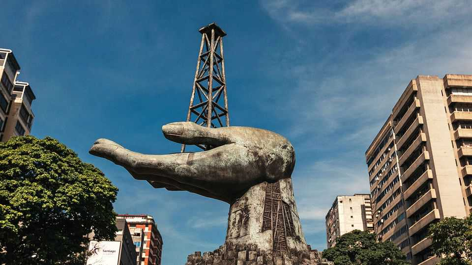
特朗普目前承诺将与临时总统德尔西·罗德里格斯（Delcy Rodríguez，前马杜罗副总统）共同“管理”国家，后者据称在遵从美国的指令。他的优先事项并非民主，而是石油；1月6日他称委内瑞拉将向美国“移交”3000万至5000万桶石油。若特朗普与罗德里格斯的关系顺利发展，民主可能难以实现。因此关键问题是：特朗普是否会与罗德里格斯发生冲突并以强硬手段施压，还是双方关系会更趋合作？若后者，特朗普或可帮助罗德里格斯实现更长期执政，从而延缓民主进程。目前已有充分证据，尤其在石油交易协议逐渐成形的背景下，显示双方存在合作迹象。特朗普最初将该安排描述为纯粹的胁迫。委内瑞拉首都加拉加斯的官员则称其为“简单的销售，一笔商业交易”。■
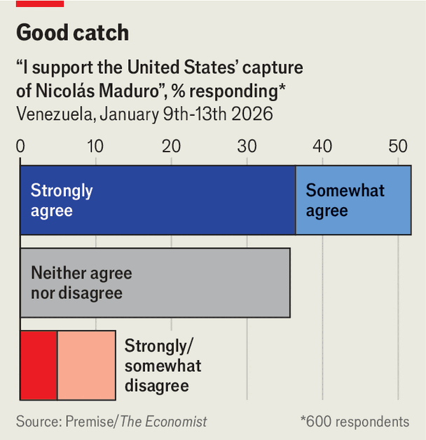
《经济学人》采访了石油高管、金融家和交易商，探讨一项可能的交易方案。尽管存在诸多不确定性，但该方案可能对双方都有利，尽管部分涉及强制性。该交易最初涵盖的3000万桶原油，大致相当于委内瑞拉原油储存能力，由于封锁导致储油设施已满（见图表）。若无大量销售，委内瑞拉国家石油公司PDVSA很快将不得不停止输油。因此，该提议的方案涉及PDVSA或其合资企业出售大部分库存，可能还包括未来产出。买家包括雪佛龙（Chevron），这是唯一一家已获得美国许可在委内瑞拉运营的美国大型公司。瑞士的两家商品贸易商维托尔（Vitol）和托里法格拉（Trafigura）也已获得美国许可，用于运输和销售委内瑞拉原油。■
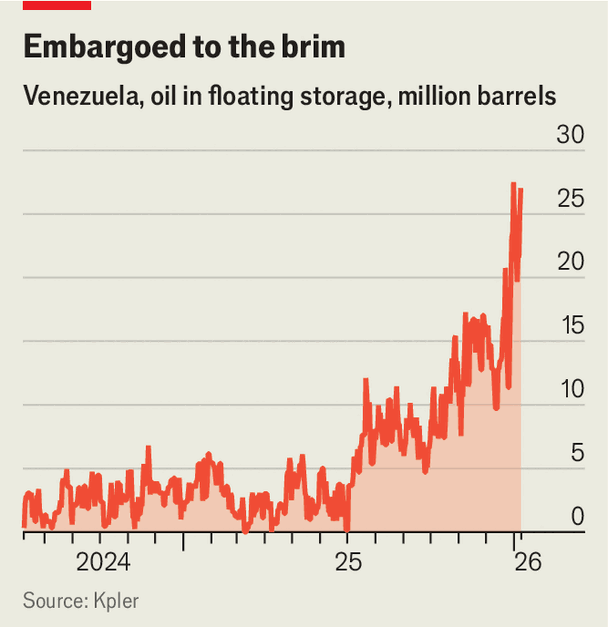
《经济学人》获悉，一些石油已以每桶8美元的折扣价格提供给中国和印度炼油厂，折扣幅度相当于布伦特原油（全球基准）每桶约21美元（12月中旬部分交易的折扣幅度达21美元）。部分中国买家已以每桶13美元的折扣报价。据报道，一笔价值5亿美元的交易已达成，但买家身份尚不明确。印度最大炼油厂印度石油公司（Reliance）正就获取海上储存的原油展开磋商。船运追踪公司Vortexa数据显示，13艘空载“清洁油轮”（总容量1500万桶，包括4艘由雪佛龙运营、1艘由托里菲拉运营）将于本月抵达委内瑞拉炼油厂。美国购买的石油很可能在墨西哥湾沿岸炼制或储存，而委内瑞拉其余出口石油通常会直接运往其他买家。■
付款扣除交易商费用后将不会流向PDVSA，而是进入国际银行的托管账户。根据委内瑞拉法律，其中20%-30%将被以美元形式汇往国家作为特许权使用费。尽管雪佛龙根据现有许可以原油形式支付特许权使用费，但胡安·萨扎博（Juan Szabo）认为，此举对委内瑞拉而言在美对销售实施禁令的情况下并无实际意义。另一部分托管资金将用于覆盖PDVSA的运营开支。特朗普声称所有未来资本支出必须使用美国制造的钻探设备、管道和器材。剩余部分显然将归属合资伙伴，包括PDVSA。PDVSA的份额可能继续存入托管账户，作为委内瑞拉未来的主权财富基金。■
白宫发布的一项行政命令宣布，这些账户中的资金被认定为“由美国保管的委内瑞拉政府主权财产”。国务卿马尔科·鲁比奥（Marco Rubio）将代表委内瑞拉政府决定如何使用这笔资金。对美国而言，这笔交易并非颠覆性举措。其炼油企业获得另一重质原油来源，未来部分收益或被重新投资以提升委内瑞拉产量。然而，尽管特朗普表现出乐观态度，多数石油巨头仍保持谨慎。对委内瑞拉而言，此类交易颇具吸引力。此举不仅能缓解原油过剩，还能让委内瑞拉以高于向影子交易商及中国出售时的价格出售石油。美元收入或将支撑摇摇欲坠的本币。“委内瑞拉需要资金，我们将确保他们获得资金，”特朗普于1月9日表示。■
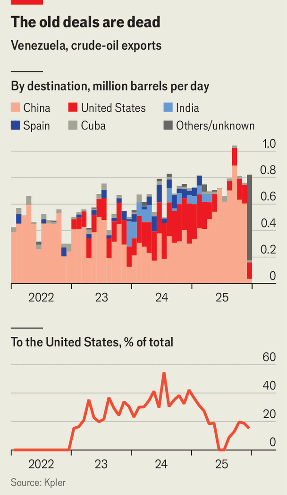
该计划仍为他保留了收紧政策的空间。价格可调整以挤压PDVSA。此前放宽的制裁措施，如今可重新收紧。石油并非美委关系新阶段的唯一议题。1月8日，似乎是对美方要求的回应，政权宣布将释放众多政治犯。其中包括知名反对派政客恩里克·马尔克斯（Enrique Márquez）。政权也释放了一些美国人。然而截至《经济学人》付印时，距离首次宣布已过去六天，仅确认释放了84名政治犯，远低于逾800名有记录的政治犯。似乎特朗普希望与旧政权的新面孔合作。1月14日，特朗普在与罗德里格斯（Ms Rodríguez）通话后表示，她是个“非常优秀的人”，“我们合作得非常顺利”。■
他的要求并不极端到足以严重威胁罗德里格斯女士的政权——至少目前如此。石油计划可能成为关键的经济提振措施。关于委内瑞拉民主未来的疑问，将成为新关系的更大考验。例如，政府是否会下令委内瑞拉允许流亡政客迅速回国？这将包括埃德蒙多·冈萨雷斯，他实际上赢得了2024年选举，以及玛丽亚·科里纳·马查多，这位最近获得诺贝尔和平奖的候选人，在马杜罗禁止她参选后仍支持冈萨雷斯。冈萨雷斯先生的照片仍出现在委内瑞拉机场的通缉令海报上。1月15日，即本文发表后不久，特朗普先生将与马查多女士会面，这将表明局势的发展方向。他此前一直认为她缺乏“支持”来领导国家。■
或许出于担忧，罗德里格斯女士已派其特使赴华盛顿同日抵达。这为马查多女士争取特朗普加快民主进程提供了机会。但正如许多人发现的那样，前往白宫拜访特朗普的行动往往适得其反。■ 订阅我们的拉丁美洲专属电子报El Boletín，了解塑造这一迷人而复杂地区的各种力量。
§029 美洲原题：Venezuelans believe Donald Trump has offered them a better future · 板块：Americas · 栏目：美洲
从加拉加斯（Caracas，委内瑞拉首都）的视角看，1月3日凌晨时分令人恐惧。炸弹爆炸、直升机和飞机在头顶呼啸，混乱蔓延。到黎明时分，或许已有约100人死亡，委内瑞拉自2013年以来的独裁者尼古拉斯·马杜罗（Nicolás Maduro）已被美国特种部队俘获。然而震惊与恐惧很快被另一种情绪取代：喜悦。
根据Premise（位于弗吉尼亚州的研究公司）为《经济学人》独家进行的民调显示，委内瑞拉国内民众对局势的戏剧性转折感到相当满意，尽管他们对未来的设想与特朗普总统存在差异。这项调查首次揭示了委内瑞拉民众对马杜罗总统被突袭事件的反应。调查通过移动应用进行，询问了600名委内瑞拉居民对此次行动的看法、对未来发展的预期以及对各类人物的评价。调查结果按年龄和性别加权，以反映全国人口结构。民调显示，马杜罗总统在任期间主导了酷刑和经济崩溃，并公然篡改2024年总统选举结果，因此遭到强烈憎恨。仅有13%的受访者甚至对他的被捕持轻微反对态度。■
令人意外的是，超过半数受访者表示，他们对美国的看法在袭击事件后有所改善。此次袭击给委内瑞拉人带来了希望。在马杜罗被捕前，许多人担心他们将长期与马杜罗共处，可能长达数十年。如今近四分之三的受访者认为，一年后政治局势会有所好转。同样数量的人也认为，自己的经济状况届时会改善——委内瑞拉经济在马杜罗执政期间萎缩了70%。目前，委内瑞拉人对特朗普政府计划“接管”该国以及其对委内瑞拉石油的浓厚兴趣表现出出人意料的乐观态度。近半数受访者支持某种形式的美国治理；仅18%表示反对。对于谁应掌控石油产业，意见则更为分化。略超四分之一受访者认为应由美国政府负责，而约三分之一则选择委内瑞拉政府。■
近30%的人选择私营企业。委内瑞拉民众与特朗普在谁应领导国家的问题上分歧最为明显。大多数委内瑞拉人希望实现快速的民主过渡。在2024年7月总统选举中，最受欢迎的反对派领袖玛尔塔·科里娜·马查多被禁止参选后，她支持埃德蒙多·冈萨雷斯，后者大获全胜，但马杜罗却宣布自己为胜者。超过三分之一的委内瑞拉人认为，冈萨雷斯现在应就任，因为他已拥有民主授权。三分之二的人认为应举行新选举。其中91%的人表示选举应在一年内举行，多数人希望在六个月内进行。这比特朗普政府成员公开暗示的数年时间要快得多。■
委内瑞拉民众也对德尔西·罗德里格斯（Delcy Rodríguez）不满，她是马杜罗（Nicolas Maduro）的副总统，特朗普目前公开支持她。仅有微不足道的10%（甚至部分人）表示她应完成马杜罗（Nicolas Maduro）的（被窃取的）任期，该任期将持续至2031年。仅有13%的人对她持正面看法。当被问及谁最能确保政治稳定——这似乎是特朗普支持她的基础——罗德里格斯的表现略好于其他候选人，但仍比马查多（Machado）低30个百分点。特朗普政府应认真对待这些对民主的诉求。■
特朗普与马可·鲁比奥（Marco Rubio，美国参议员）在委内瑞拉异常受欢迎：我们的民调显示，两人的支持率在委内瑞拉均高于马加尔多（Ms Machado）。（他们的支持率在委内瑞拉也高于在美国。）忽视委内瑞拉民众诉求不仅会损害其支持率，还可能成为该国动荡的导火索。特朗普所痴迷的石油投资，唯有民主与法治优先才能实现。然而实现选举并非易事。我们的民调显示，委内瑞拉民众对现有选举机构组织公平选举缺乏信任，也对本应维护选举结果的军队缺乏信任。所有这些都需要改革。■
特朗普政府应以修复委内瑞拉民主制度的紧迫感，如同修复其油田般投入精力。■
§030 美洲原题：Mark Carney is on a mission to trade with the world · 板块：Americas · 栏目：美洲
启程前往北京，这是他首次访问中国（此前曾访问卡塔尔和瑞士），旨在推动新的外资和贸易合作。数月来，卡尼一直认为特朗普已永久改变了美国，作为美国第二大贸易伙伴和亲密盟友的加拿大必须适应这一变化。■
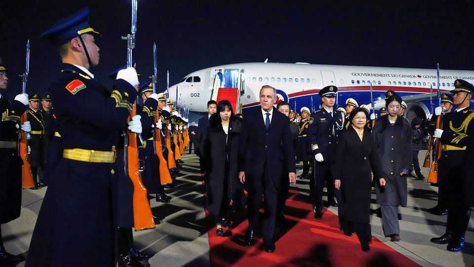
当Canforce-One的轮胎离开渥太华麦克唐纳-卡特尔机场的跑道时，卡尼先生与加拿大未来数日的前景既充满机遇也暗藏风险。这位前央行行长将乐于会见卡塔尔主权基金的领导人，达沃斯世界经济论坛的重量级人物也难不倒他。真正考验将出现在他与中国国家主席习近平的会晤中。中国是加拿大第二大贸易伙伴，但两国关系近年来却日益紧张。加拿大安全部门称中国情报机构积极干预加拿大的选举。更近的是，加拿大加入美国对中国电动汽车征收100%关税的行列后，中国随即对加拿大的油菜籽油和海产品征收报复性关税。但卡尼先生已设法缓和了局势。■
加拿大总理斯科特·莫（Scott Moe）的出席为农民带来了一些希望，但最大的机遇在于石油资源。特朗普接管委内瑞拉石油产业将导致中国供应出现缺口。中国曾以折扣价购买委内瑞拉石油，并通过暗色舰队油轮运回炼油厂。但美国将掌控此类运输。加拿大的重质油与委内瑞拉石油兼容，加拿大官员认为中国有兴趣增加采购。据研究公司Kpler数据显示，2025年加拿大40%的海上原油出口目的地为中国。若拟建的从阿尔伯塔省油砂到西海岸的输油管道建成，这一比例可能进一步上升。卡尼（Mr Carney）推动管道投资正是此次访问的主要目标。
一位加拿大官员预计对华石油出口将增加。“中国正寻求可靠的供应来源，”他们表示，“委内瑞拉正变得越来越不可靠且成本更高。”美国总统对一项将更多加拿大能源输送至其太平洋对岸竞争对手的协议会作何反应？卡尼的顾问们似乎并不担心激怒特朗普的风险。但伯尼认为应保持谨慎，他曾在亚洲谈判贸易协定后担任加拿大驻日大使。特朗普与中方有其自身的协议，他可能很快前往中国以拓展贸易关系。“特朗普毫不掩饰要与中国达成优惠协议，并让像加拿大这样的国家自行应对，”伯尼表示。美国最新国家安全战略明确指出，美国期望成为唯一参与西半球事务的超级大国。■
委内瑞拉行动最明显的目的是遏制中国和俄罗斯在该地区的影响力。“加拿大在与中国推行独立外交政策时将面临巨大困难，这一点在《国家安全战略》中得到了充分体现，”温哥华智库亚太基金会副总裁维娜·纳吉布拉说。“加拿大所做的每一件事都会受到华盛顿的审视。”但无论特朗普是否喜欢，加中美三国贸易格局的再平衡趋势已不可避免。加拿大统计局最新数据显示，10月仅67%的出口流向美国。这一比例较特朗普关税政策实施前的76%有所下降，也创下了自1997年以来出口流向美国占比的最低水平（排除新冠疫情期间数据）。■
同一数据集显示，加拿大对世界其他地区的出口增长15.6%，创历史最高水平。对中国的石油出口大幅增加，构成了这一增长的显著部分。多元化是明智之举——但不应以卡尼先生推动与美国达成协议、保障加拿大对南方边境全球最大市场准入的关键目标为代价。“加拿大拓展全球客户基础的努力应与在北美构建强劲区域能源伙伴关系的项目相辅相成，而非削弱。”加拿大首席商业游说领袖戈迪·希德（Goldy Hyder）表示。“美国仍将是加拿大最大的石油买家。” ■
§031 美洲原题：What the Donroe doctrine means for Brazil · 板块：Americas · 栏目：美洲
巴西总统卢拉是首位致电德尔西·罗德里格斯的国家领导人，当时美国劫持了她的上司尼古拉斯·马杜罗。一位资深巴西外交官表示：“当他们通话时，马杜罗在船上的照片甚至还未公开，我们甚至不知道他身在何处，信息如此匮乏。” 接下来的几天里，活动频繁。作为巴西总统的卢拉组织了与哥伦比亚、墨西哥、加拿大、西班牙、法国、俄罗斯和葡萄牙领导人的通话。巴西政府还向加拉加斯一家被美国炸弹袭击的肾治疗中心运送了医疗物资。
他的官员们则思考着唐纳德·特朗普对半球主导地位的宣称，以及此举在多大程度上削弱了巴西作为南美领导者的地位。“一直以来，中美洲和加勒比地区都被视为美国的后院，”迈阿密佛罗里达国际大学的古尔赫梅·卡萨罗埃斯（Guilherme Casarões）表示。但南美更富裕、体量更大的国家曾隐性地享有优先地位。美国在南美的干预行动，往往在现任政府默许下进行，且多为秘密行动。巴西则在国家间冲突中发挥主导作用。这种默契在1月3日胡塞·马杜罗（Nicolás Maduro）被推翻后终结。这是美国武装部队首次直接推翻南美现任总统。与委内瑞拉共享2,000公里（1,250英里）边界的巴西既未被咨询也未被警告。■
特朗普将巴西排除在委内瑞拉未来走向的讨论之外。其政府正对罗德里格斯女士及该政权提出单方面要求，公开威胁若不遵从将采取进一步暴力行动。“白宫并不寻求区域领导人的帮助或合作，”纽约咨询公司欧亚集团（Eurasia Group）的克里斯托弗·加曼（Christopher Garman）表示。即便巴西被咨询，也不清楚它是否能发挥区域领导作用。多国右翼总统的当选削弱了巴西的影响力。尽管巴西、哥伦比亚和墨西哥谴责此次入侵，但阿根廷、厄瓜多尔、巴拉圭等国却感到欣喜。“巴西若无追随者，便无法发挥领导作用，”卡萨罗（Casarões）表示。一些巴西人认为本国的外交政策需要重新思考。■
这建立在冗长的宪法基础之上，该宪法规定国际关系应基于不干涉和通过和平方式解决冲突。在委内瑞拉，政府推动对话，纵容尼古拉斯·马杜罗（Nicolás Maduro）的独裁统治。2023年，卢拉（Lula）在巴西利亚（Brasília）接待了马杜罗。当时已有多年确凿证据表明，马杜罗领导的政权通过谋杀、强奸和酷刑控制委内瑞拉。但卢拉称“委内瑞拉是独裁政权”的说法是“一种叙事”。马杜罗在2024年公然篡改选举结果后，两国关系确实有所降温。但卢拉的工人党仍派委员会出席马杜罗的就职典礼。此外，也存在关于巴西威慑能力的讨论。■
军方抱怨称，由于预算削减，关键项目出现延误——包括防空系统开发、核动力潜艇建造以及瑞典鹰狮战斗机的交付（这些战斗机在圣保罗制造）。一些分析师建议重启巴西1990年放弃的秘密核计划。尽管美国的干预挑战了巴西在地区的领导地位，但也凸显了巴西的优势。突袭事件后，特朗普曾威胁要攻击哥伦比亚、墨西哥、格陵兰等地，但最近几周对巴西保持沉默。与委内瑞拉独裁政权不同，左翼民主国家因“非常有价值的资产”而“免受多诺尔道道的影响”，加曼先生表示。■
作为农业大国和能源巨头，巴西还拥有全球第二大稀土储量，这17种元素被用于电动汽车和武器的生产。与大多数领导人不同，卢拉（Lula）去年在特朗普对巴西加征关税后敢于站出来反对。大部分关税不久后被取消。巴西的体量赋予其其他国家难以拥有的选择权，使其能维持多样化的贸易和外交关系。就在特朗普试图掌控委内瑞拉之际，欧盟终于与南美共同市场（Mercosur）达成自由贸易协定，该协定覆盖南美国家联盟成员国，形成全球最大的自由贸易区之一，涵盖全球GDP（按购买力平价计算）的五分之一。特朗普的强硬态度也加速了巴西与加拿大达成贸易协定的努力。巴西将继续与中国保持密切关系，后者是巴西最大的贸易伙伴。■
美国的突袭行动震撼了外交政策界，但巴西不会被山姆大叔的阴影所拖累。■ 订阅我们的专属简报El Boletín，了解塑造这一迷人而复杂的地区的力量。
§032 美洲原题：Cuba’s regime is in dire straits · 板块：Americas · 栏目：美洲
唐纳德·特朗普似乎并不满足于仅推翻一位拉丁美洲强人。自1月3日劫持委内瑞拉独裁者尼古拉斯·马杜罗后，特朗普与他的古巴裔美国国务卿马尔科·鲁比奥多次表示，古巴将是下一个目标。1月11日，特朗普称该政权应“在为时已晚之前达成协议”，并补充称其政府“正在与古巴进行接触”。为强调这一点，他还发布了一张人工智能生成的自己在哈瓦那（古巴首都）抽雪茄的照片。尽管特朗普的意图尚不明确，但显然古巴政权如今异常脆弱。■
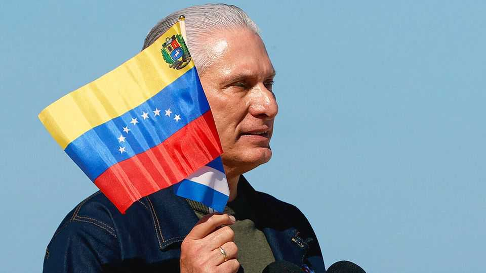
古巴凭借寻求苏联等强大盟友的支持，支撑其计划经济体系数十年。自2000年代以来，委内瑞拉成为其最重要的盟友，以折扣价向古巴供应石油，换取古巴医生和安全人员。石油供应不仅足以维持古巴的电力网络，还能通过转售赚取硬通货。当马杜罗被推翻时，这条生命线已开始动摇。随着委内瑞拉产量崩溃，对古巴的石油供应在2021年至2025年间减少了近四分之三，降至每天约3万桶（b/d）。古巴每日需10万桶石油，仅能自产4万桶。其余部分则依靠墨西哥出口、俄罗斯供应以及现货市场采购的混合来源。若完全切断供应，德克萨斯大学能源分析师何塞·皮诺（Jorge Piñon）称这将“造成灾难性后果”。无人可能填补这一空缺。■
墨西哥长期以来支持古巴。自2018年安德烈斯·曼努埃尔·洛佩斯·奥夫拉多尔（Andrés Manuel López Obrador）创立的Morena党上台以来，这种支持变得更加意识形态化和物质化。墨西哥已雇佣超过3000名古巴医生，2024年及2025年初每天向古巴输送约22,000桶石油。但财务和政治压力限制了任何增加的可能。或许担心引发更多人逃离，距离佛罗里达州仅145公里（90英里）的古巴，特朗普未下令总统克劳迪娅·希内鲍姆（Claudia Sheinbaum）暂停运送。但若特朗普采取此行动，墨西哥不得不遵从。其他友好国家如俄罗斯和中国保持沉默，或许担心支持濒临崩溃的经济靠近美国海岸。石油富国哥伦比亚和巴西仅在特朗普允许下才会行动，而安哥拉和阿尔及利亚则保持沉默。■
私人贸易商若要如今将石油运往古巴，必须“临床疯狂”，一位人士如此表示。古巴经济困境的严重程度难以夸大，其根源在于数十年政府管理失当与美国制裁的叠加效应。如今古巴经济规模仅为2018年的15%。旅游业在新冠疫情中遭受重创，恰逢其在奥巴马2015年恢复关系后开始复苏。去年该岛曾五次遭遇全国性停电。进口食品对多数人而言过于昂贵。由于缺乏外汇储备，政府无法偿还债务或支付进口费用。上述种种因素使得与特朗普政府达成协议并非易事。尽管政权精英阶层中仍有许多坚定信徒，但随着意识形态的失败已显而易见，这种信念在古巴民众中已不再具有影响力。■
尽管劳尔·卡斯特罗（Raúl Castro，菲德尔94岁的弟弟）并无正式职务，但他仍握有否决权。至少在公开场合，政权已下定决心。1月11日，总统米格尔·迪亚斯-卡内尔（Miguel Díaz-Canel，见图）誓言将抵抗美国的侵略“直到最后一滴血”。政权大概率会拖延时间，但最终可能不得不就开放古巴私营部门、释放政治犯和举行选举展开谈判。“古巴人总是说他们已把所有筹码都放在桌上——却从不兑现。这次他们可能不得不这么做，”华盛顿的古巴研究小组（Cuba Study Group）活动人士组织成员里克·埃尔罗说，该组织主张与古巴进行接触。将古巴转变为越南式体制——即由一党执政的市场经济——早已被讨论。但“他们选择不采取减速带”，美国国务院前官员里卡多·祖尼加说。■
自由化举措被推迟或逆转。私营部门在2000年代初部分合法化后，如今却被繁复的规则和监管束缚。祖尼加表示，古巴执政集团似乎“无法想象一个他们不完全掌控的世界”。鲁比奥可能不会满意，除非有人被问责。他或许正寻求将迪亚斯-卡内尔替换为德尔西·罗德里格斯这类人物，后者现为委内瑞拉临时总统，被怀疑参与了马杜罗的背叛行为。但埃尔赫罗指出，在古巴找到一个能牺牲他人并驾驭各方派系的人更困难。有人将奥斯卡·佩雷斯-奥利瓦·弗拉加——外贸部长——视为潜在人选。他是一位改革派且正在崛起的明星，与卡斯特罗家族有亲属关系。此外，来自掌控经济命脉的军事集团GAESA的将领也可能是人选之一。
美国动用武力的可能性无法完全排除。特朗普手中并无石油资源可图，但或许他看中了哈瓦那的酒店和高尔夫球场。他能援引或捏造的法律依据尚不明确。古巴没有等待在暗处的组织化反对派，没有多党选举的历史，经济体系也长期失灵。武装干预可能将美国拖入泥潭。此外，古巴政权也不像委内瑞拉那样腐败或纪律涣散。“这里的机器仍在运转，”前古巴外交官卡洛斯·阿尔苏加雷（Carlos Alzugaray）表示。独立记者尤亚尼·桑切斯（Yoani Sánchez）称，古巴人“已疲惫不堪”。抗议活动被强力镇压；2021年大规模抗议后，仍有约1000人被关押。大规模移民——过去五年约四分之一人口外流——也缓解了社会压力。■
朱尼加先生认为，一个合理的前景是进一步恶化。特朗普先生难以预测。但谈及古巴越多，越难以退让。很少有人怀疑鲁比奥先生的承诺。一位华盛顿观察人士表示：“计划尚未出台，但意图已明确。”1月9日，鲁比奥先生表示，政权必须在“拥有一个真正国家，拥有真正经济，让人民得以繁荣”与“继续其失败的独裁统治”之间做出选择。数十年来，政权始终选择后者。 ■ 注册《El Boletín》订阅者专属新闻简报，深入了解塑造这一复杂地区的各种力量。
§034 中东与非洲原题：Bereft of legitimacy, the reeling regime in Iran massacres its own people · 板块：Middle East & Africa · 栏目：中东与非洲
经过超过两周的动荡，伊朗部分地区开始呈现出战区的氛围。狙击手向人群开火，同时监控无人机在头顶盘旋。家庭成员挤进停尸间，焦急地寻找亲人。普通民众不敢外出。背景中隐约浮现唐纳德·特朗普（Donald Trump）威胁发动军事打击的阴影。伊朗伊斯兰共和国曾多次经历动荡，从2009年的舞弊选举到2022年的女性主导抗议活动。■
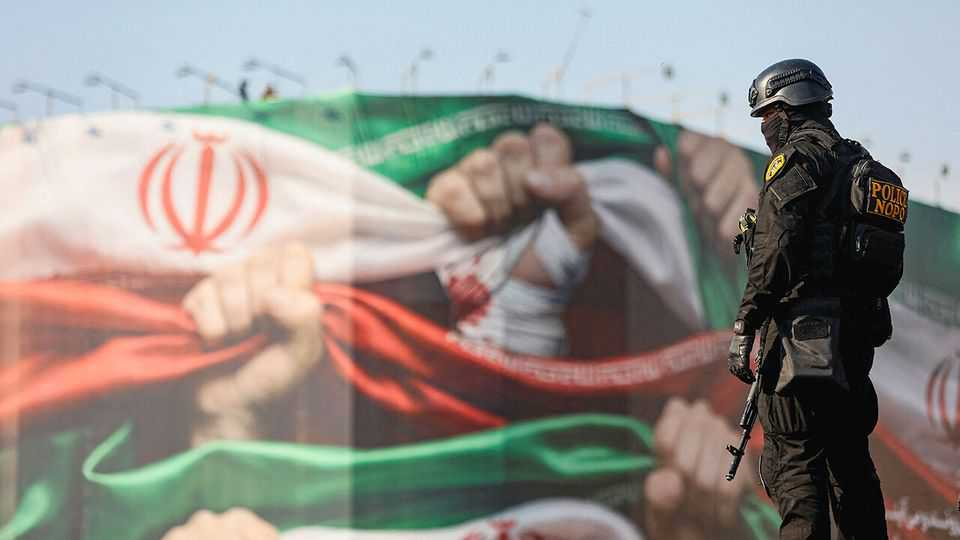
每次，乐观者都预测政权即将崩溃；每次，它都勉强维持。但自12月28日开始的抗议活动可能更具关键性，尽管《经济学人》付印时，这些抗议似乎已有所减弱。这些抗议紧随伊朗的灾难之年，这一年带来了经济崩溃、环境危机以及与以色列持续12天的战争。社会契约已破裂：伊朗既无法保护公民免受外部威胁，也无法满足其基本需求。面对无法安抚抗议者，政权开始效仿其曾盟友叙利亚的巴沙尔·阿萨德（Bashar al-Assad）的逻辑，后者的手下曾高喊“阿萨德，否则我们烧毁这个国家”。政权或许还能维持一段时间，但变革似乎不可避免。问题是，这种变革将是什么性质，又会留下多少混乱。■
德黑兰店主们上月罢工时，似乎并未预示会掀起如此规模、影响深远的运动。抗议活动持续了近两周，虽持续不断但规模远不及2022年。直到1月8日，流亡海外的前国王之子雷扎·帕尔拉维（Reza Pahlavi）呼吁伊朗民众大规模上街示威。许多伊朗人长期将这位自封的王储视为不务正业者，但这次号召似乎触动了人心。随后爆发的抗议规模空前。具体人数难以统计，因为政权切断了互联网（至今仍未恢复）。在伊朗与世界孤立的背景下，安全部队展开残酷镇压。人权组织迄今确认至少2,400名抗议者死亡，实际伤亡数字无疑更高。另有数万人被拘留。■
司法首脑誓言迅速处决（特朗普称这些已暂停）。这可能是该政权47年历史上最严重的国家暴力事件。其死亡人数远超2022年抗议活动期间的伤亡——两个月内约550人遇难。即便1988年的大规模处决——当时数千名囚犯被送上绞架——也可能相形见绌。一些抗议者已用刀和猎枪反击。当局倾向于夸大自身死伤人数，以构建反对派受外国势力武装的叙事。即便如此，反对派组织也统计出约150名安全部队人员死亡。政权诉诸暴力，因其对愤怒民众毫无可提供。德黑兰商人走上街头时，经济已陷入自由落体式崩溃。■
自7月以来，里亚尔已贬值40%，创历史新低，导致进口价格飙升。年通胀率接近50%。近三分之一的伊朗人生活在贫困中。专业人士在肉店外徘徊，期盼能分到一点残羹剩饭。世界银行称，仅三分之一的适龄劳动力有工作。伊朗经济预计在2025年将萎缩1.7%。而这种下滑分布不均。服务行业雇佣了半数劳动力，正萎缩，农业也面临收缩。建筑业，主要由军方企业承建，有所增长。部分困境源于美国制裁，尤其是针对石油行业的制裁，特朗普在2018年退出核协议后重新实施这些制裁。伊朗政府指定的中间人，负责监管非法石油贸易，被称为“信托人”，更倾向于将收益存放在国外。■
官员们据称正在调查70亿美元的石油收入失踪案。腐败统治加剧了危机。伊斯兰革命卫队（IRGC），政权的禁卫军，掌控着经济的很大一部分。从石油到药品和制造业，所有领域都经由由伊斯兰革命卫队（IRGC）运营的庞大企业网络。由神职人员和指挥官控制的财团通常在缺乏抵押品和监管的情况下获得贷款。10月，主要银行阿亚内德（Ayandeh）因内幕贷款重压而倒闭，其中包括对已失败的伊朗购物中心项目（号称全球最大购物中心）的贷款。无人被追责。这一切引发了伊朗民众走上街头。政权的暴行迫使他们暂时返回家园——暂且如此。在大众想象中，革命是线性的：抗议活动达到高潮，独裁者便逃亡。但现实往往更加复杂。■
示威活动的减弱并不意味着伊朗的动荡已结束，该国自身的历史便证明了这一点。1978年伊斯兰革命初期，抗议活动在春季升温，夏季减弱，秋季再度爆发。如今局势的一大不同在于外国干预的可能性。特朗普曾数周承诺要“解救”抗议者，并让政权为杀害他们“付出惨痛代价”。然而他的实际举措却显得微不足道。1月12日，他宣布对与伊朗贸易的国家征收25%关税。次日，他“取消所有与伊朗官员的会面”，拒绝了伊朗外长阿巴斯·阿拉奇（Abbas Araghchi）提出的重启该国核计划谈判的提议。此类举措与不断上升的死亡人数显然不相称。特朗普正面临压力，要求他兑现威胁。■
1月13日，他的顾问们聚集一堂讨论应对之策。次日，美国开始从卡塔尔乌代德空军基地（该基地是美军中央司令部的区域总部）和巴林（第五舰队所在地）撤出部分人员。此举似乎暗示着一场袭击即将发生。然而特朗普随后表示，袭击可能已不再必要：“我们被告知伊朗的杀戮行动已停止。”五角大楼在加勒比海地区增派了兵力，目前并未在波斯湾部署航空母舰（尽管有一艘正驶往该地区）。海湾国家也不会允许美军从其领土上的基地发起空袭。美军仍可通过驱逐舰和潜艇发射巡航导弹，或由战略轰炸机实施远程打击。■
打击目标可能包括伊朗革命卫队；关键经济基础设施，如霍尔木兹海峡的卡赫尔岛石油终端；以及重要官员，甚至最高领袖阿里·哈梅内伊。伊朗议会发言人警告称，若遭遇袭击，伊朗将对地区内的美军基地进行打击。无论特朗普做出何种决定，任何打击行动恐怕都无法迫使政权停止杀害平民。军事行动也未必能激发更多抗议活动。反对派仍缺乏明确的政权更迭路径。巴哈尔维承诺领导过渡进程，其办公室正通过推特发布关于稳定货币和没收政权资产计划的幻灯片。但其影响力远超社交媒体仍存疑。去年他声称有50,000名政府及安全部门官员准备叛逃。■
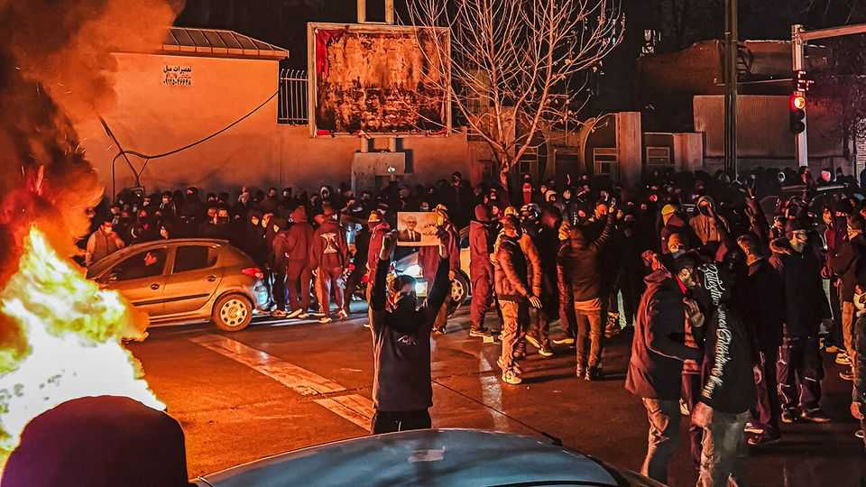
但数周的动荡过后，仍无人倒戈。一些伊朗人则议论起所谓的“委内瑞拉模式”：用一位立场不那么教条的领导人取代哈梅内伊。这种说法似乎过于简单化。霍梅尼大阿亚图拉掌控着一个派系林立的体制，他凭借自身长久的执政经验和宗教权威成功驾驭了这个体系。他的继任者或许难以复制这种掌控力。更令人担忧的两种结局似乎难以避免。第一种可能是伊朗革命卫队（IRGC）及其准军事组织巴吉将巩固权力。他们或许能摆脱宗教领袖，将伊朗转变为更接近埃及或巴基斯坦的国家。但若无法达成解除美国制裁的协议，他们无法解决伊朗的经济困境。这需要他们关闭或大幅削减核计划，并停止对地区民兵组织的支持。
另一种观点认为，即便伊斯兰革命卫队（Islamic Revolutionary Guard Corps, IRGC）也难以应对全国范围的全面起义。在没有明确替代政权的情况下，伊朗或将陷入混乱。偏远地区可能各行其是。伊朗是一个民族多元的国家：西北部有阿塞拜疆人和库尔德人，西南部有阿拉伯人，东南部有俾路支人，这些群体均有暴力叛乱的历史。这一情景引发了波斯湾另一侧的深切担忧，阿拉伯国家担心分裂的伊朗将失去对其导弹和无人机武器库的控制，并引发难民潮。近半个世纪后，伊斯兰共和国重演了导致沙阿政权覆灭的顽疾：腐败与通胀肆虐的经济；专制且备受憎恨的安全机构；以及一位年迈、脱离实际的领导人。■
沙赫的去世当时看似难以置信，但事后看来不可避免。伊斯兰共和国的命运或许也将如此。■ 订阅《中东简报》，每周获取关于这个复杂而重要的地区最新动态的深度解读。
§035 中东与非洲原题：Reza Pahlavi says Iran is undergoing a revolution · 板块：Middle East & Africa · 栏目：中东与非洲
数十年来，只有极端君主主义者才认真对待礼萨·帕尔拉维。伊朗政权、其反对者及西方外交官都称他为“小丑王子”。他似乎更热衷于晒太阳而非恢复太阳与狮子旗。当12月28日抗议活动爆发时，他被传正在海滩度假。47年来，他一直主张自己对王位的继承权，与华盛顿特区（他居住在附近）的权势人物交往。一位伊朗流亡者形容帕尔拉维及其团队为“新手”。
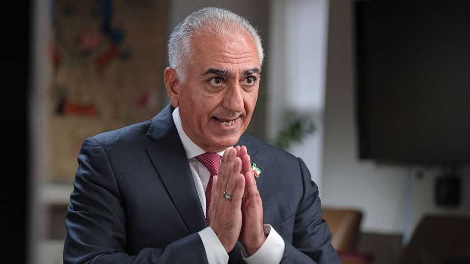
特朗普称他“是个好人”，但已置若罔闻其会面请求。然而，在等待近半个世纪后，帕尔瓦维认为自己的时机终于到来。“这个政权已濒临崩溃，而眼下它所做的正是垂死挣扎式的恐吓”，他于1月14日在华盛顿对《经济学人》表示。在席卷伊朗的抗议活动中，“贾维德·沙赫”（“万岁国王”）的呼喊声曾此起彼伏——至少在政权镇压抗议者之前。当抗议者人数开始减少时，帕尔瓦维呼吁重返街头，将一场省会失业者的集会转化为席卷德黑兰及其他城市的群众运动。伊朗人自幼受《沙赫纳姆》（波斯史诗，讲述国王与英雄的故事）熏陶，习惯于神话般的救世主。1979年，未经考验的神职人员霍梅尼扮演了这一角色；追随者称他们曾在月光中看到他的面容。■
已无其他选择。伊朗政权已将所有潜在挑战者关押入狱，监狱中充斥着异见人士及其律师；政党被禁止；甚至连环保组织也被取缔。伊朗人早已放弃对渐进改革派的信任。即便穆罕默德·哈塔米和哈桑·鲁哈尼等总统当选，阿里·哈梅内伊的统治却愈发专制，经济也愈发困顿。即便是曾担任总统顾问、因煽动反体制抗议而入狱的莫斯塔法·塔兹德赫，也失去了支持。“撕碎他们吧”，出自热门说唱歌曲《Death to the whole regime》（“死亡献给整个体制”）的一句歌词。蓄着整洁短发、身着西装的帕尔瓦尼先生，与身着长袍、头戴头巾、蓄着胡须的最高领袖形成鲜明对比，后者蔑视领带，视其为奢靡的象征。
像许多民粹主义者一样，包括推翻其父亲的神职人员，巴列维声称自己的合法性源自民众的呼声。但当被问及伊朗民众应如何应对神权政权的暴力时，他显得有些犹豫。他强调非暴力和公民不服从的重要性，但认为当民众受到攻击时，他们有权进行自卫。他说，哈梅内伊“多年前就对伊朗人民宣战了。这不是外国敌人，而是国内敌人。”“你必须中立并摧毁那个镇压民众的势力，”他继续说道。他否认与安全部队发生武装冲突导致叙利亚式内战的风险。■
帕尔拉维先生认为，必须“清除最腐败的高层官员”，但要保留基础设施以确保国家正常运转：“当政权垮台的那一天，仍有人要清理垃圾，电力和自来水必须供应。”他7月发表的169页《紧急阶段手册》似乎在承诺变革的同时，也试图安抚潜在对手。该计划誓言寻求民族和解，将伊斯兰革命卫队整编入军队，保留警察和文职人员，并警告不要进行复仇和清洗。然而，该计划也提出对关键部门的基层文职人员进行思想和情报联系审查，并废除针对同性恋的法律。他的计划使他成为过渡性领导人。在我们的采访中，他强调了这一点，称自己为“中立仲裁者”，将领导一个临时政府。■
伊朗应该成为民主国家，他说。他的计划承诺在四个月内举行公投，决定恢复君主制还是建立议会共和国。若选前者，他将在两个月后登基称王。他承诺与以色列建立外交关系（其父辈从未做到），并称将放弃核计划以换取制裁解除。然而伊朗反对派仍保持警惕。该国少数民族记得其父辈以波斯辉煌为名压制他们的语言与文化。库尔德民族主义运动，包括武装组织在内，更倾向分裂。帕尔瓦齐从未统一流亡的反对派。若他有朝一日回归，防止分裂的伊朗更难维系。他承诺将恢复君主制提交公投，但许多人对这一承诺表示怀疑。■
他的支持者谴责那些拒绝支持君主制的流亡伊朗人。外交官们担心另一个中东国家的崩溃。民主党人渴望组建宪法委员会，却疑惑为何要用一个最高领导人换取另一个。"推翻暴君（satemgar）"的口号在德黑兰再次响起，"无论是巴列维还是领袖（rahbar）"。巴列维表示，他希望站在众人之上，而非与他们并列，一位曾试图将他纳入联盟却未成功的学者如此说道。在我们的访谈中，巴列维强调伊朗的命运掌握在伊朗人手中："伊朗的未来不取决于其他国家的所作所为……我们的斗争不会停止。"从远方看，他似乎对这场革命充满信心。但他的具体角色仍不清楚。■
订阅《经济学人》中东简报，每周获取关于这一引人入胜、复杂且影响深远地区的最新动态。■
§036 中东与非洲原题：How Iran’s regime has hidden its brutal crackdown · 板块：Middle East & Africa · 栏目：中东与非洲
伊朗人早已习惯在动荡时期失去手机和互联网服务。2019年抗议活动期间和2022年另一波大规模示威期间，互联网曾一度中断。但当前的断网情况比以往任何一次都更为严重。1月8日，互联网连接降至正常水平的1%，此后一直维持这一状态。这使得伊朗人难以彼此沟通，也难以将国内的起义情况和日益血腥的镇压行动传递给外界。■
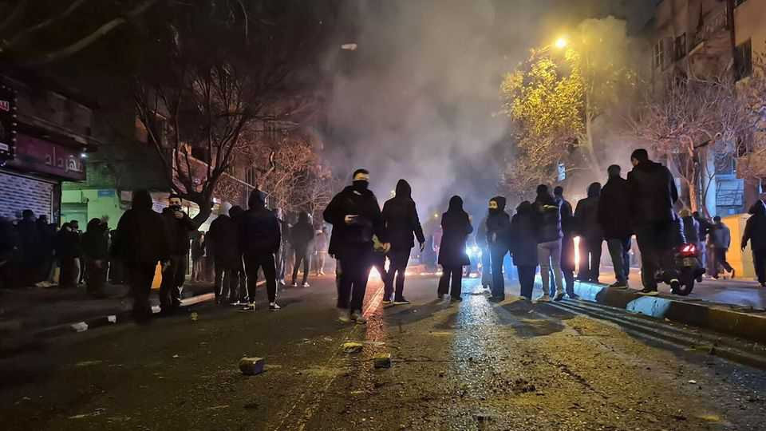
有迹象显示，示威活动可能在1月12日有所放缓，当时政权组织了大规模的反示威。抗议者可能被前几日的暴力镇压所震慑，当时安全部队至少造成500人死亡，可能更多达1000人。与掩盖屠杀行为相反，国家电视台播放了受害者遗体的画面，并承认许多遇难者是“普通民众”而非武装破坏分子，这与政府的说法相悖。伊朗外长阿巴斯·阿拉格奇（Abbas Araghchi）1月12日在德黑兰表示：“我们不寻求战争，但已做好战争准备。”他坚称局势已处于“完全控制”之下，这一说法显然不可靠，并暗示互联网接入将很快恢复。
要对当前局势做出明确判断并不容易，因为伊朗成功封锁了信息外流。伊朗政权在切断与外界的数字连接方面经验丰富。其手段包括多种方式。其中之一是操控一种名为“边界网关协议”（Border Gateway Protocol）的技术，该协议决定了全球互联网如何连接伊朗的网络。另一种方式是监控网络中传输的单个数据包，拦截与虚拟私人网络（VPNs）相关的数据包，这类网络通常允许伊朗人访问原本被禁止的网站，同时仍允许访问政府网站。伊朗还运营着一个国内互联网，即由国家控制的网络，使其能够在此次断网期间维持部分服务，避免国家陷入模拟时代。这些手段并不完美。■
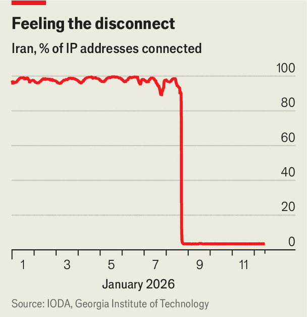
此前政府在打击VPN时屡屡碰壁，新服务总能迅速上线，一位前外交官称之为“打地鼠”游戏。但有观点认为部分VPN实为政府操控的陷阱，这种手段足以有效遏制信息流动。绕过数字封锁的一种方式是依赖卫星。由美国太空探索技术公司SpaceX（由埃隆·马斯克运营）制造的Starlink终端在伊朗属非法，但自2022年抗议活动以来，这类设备已通过走私方式大量流入伊朗。据估计，目前市面上流通的终端已逾数万。不过伊朗似乎也在对这些终端的访问进行干扰。■
《经济学人》采访了一些仍在免费使用星链（Starlink）服务的人士。一位了解内情的伊朗人士表示：“情况很不稳定，有些人似乎还能使用，但包括一些使馆在内的机构似乎已完全断网。”据监测伊朗网络状况的人士称，1月9日即便互联网全面瘫痪，大量图片和视频仍持续从伊朗流出。但到1月11日情况已发生变化，数据传输量骤减至涓滴状态。海外伊朗人表示，与国内亲属取得联系变得愈发困难。理论上，干扰星链服务异常困难，因为干扰器必须同时压制每个地面终端与卫星之间的独立连接。由于终端使用的是Ka波段信号（微波频段的电磁波谱），干扰器必须非常接近信号源才能有效压制。■
俄罗斯在乌克兰的行动日益成功，但其效果仅限于前线局部地区，而非整个国家。在城市区域，伊朗安全部队在高点部署高功率干扰器，可覆盖更大范围。但坚定的抗议者仍能通过远程终端记录并事后传播视频。另一种干扰星链运作的方式是，伊朗可能正在干扰GPS信号，电子战专家托姆·威廷顿指出，这种干扰在国家层面实施更为便捷。此举会阻碍星链终端确定自身位置，进而影响其锁定天际卫星的能力。■
SpaceX还对终端设备实施“地理围栏”措施，防止它们在特定地点被使用——例如引导无人机深入俄罗斯——因此GPS欺骗手段也能通过这种方式误导这些设备。特朗普曾警告称若政权杀害抗议者他将出手干预，如今正考虑如何应对当前的暴力事件。1月11日，美国总统表示其目标之一是“让互联网恢复运行，如果可能的话”。有报道称，网络攻击可能是其中一种选项。但熟悉此类行动的人士表示，通过这种方式维持伊朗互联网运行将极其困难，部分原因在于伊朗政府对电信企业拥有严密控制。■
更简单的方法或许是向伊朗大量部署星链终端设备，或许通过土耳其边境的成熟走私路线输送，就像马斯克先生在俄罗斯入侵初期为乌克兰所做的那样——这一步为该国武装部队提供了不可或缺的生命线。“我们或许可以联系埃隆（Elon）”，特朗普先生说，“因为正如你所知，他擅长这类事情。” ■ 订阅中东简报，每周获取关于这个复杂且具有深远影响地区的重要信息。
§037 中东与非洲原题：Binyamin Netanyahu’s plan to win Israeli—and global—hearts and minds · 板块：Middle East & Africa · 栏目：中东与非洲
本雅明·内塔尼亚胡将第12次领导利库德集团参加今年的大选。他已担任以色列总理超过18年，成为该国任职时间最长的领导人。若他胜选，或将成为二战后任期最长的民主国家领导人。选举日期尚未确定，但1月8日，以色列总理在接受《经济学人》专访时已进入竞选状态。此次专访为“内幕”栏目录制，地点在耶路撒冷。
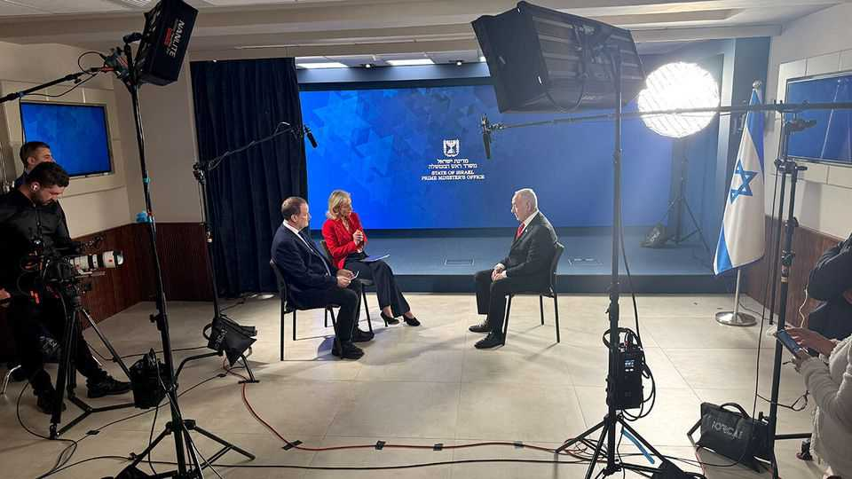
■
他的主要关注点之一是寻求连任。“只要我相信自己能够确保以色列的未来——这是我一生致力于实现的目标，无论是作为士兵、政治家还是国家领导人——我就会继续为之奋斗，”他说。然而，在多数民调中，他的民族主义和宗教政党联盟的得票率远未达到多数。内塔尼亚胡还决心恢复以色列的国际地位。以色列在加沙战争两年后，其全球形象严重受损：不仅在一贯的批评者中，也在许多西方前支持者中引发震惊，他们因加沙大部分地区被摧毁以及超过7万名巴勒斯坦人死亡而感到震惊。
“我想尽一切努力反击针对我们的宣传战，”他表示。“基本上，我们一直在用骑兵对抗F-35战机，因为他们在社交媒体上充斥着虚假账号和其他各种手段。”他表示，以色列的一项早期举措可能是放弃美国提供的补贴，这些补贴用于购买美国军火。内塔尼亚胡的政治生涯建立在他充满冒险精神的演讲和与国际媒体的采访上，这可以追溯到他1980年代担任联合国大使的时期。这反映出他相信以色列影响政府的方式是赢得舆论战。这是一场以色列正在输掉的战斗。■
以色列总理抱怨以色列受到不合理的审视。“我怀疑丘吉尔若目睹当时发生的惨状，能否推动二战进程，”他说，“你们对这个备受围攻的民主国家提出了不可能达到的标准。”他同时指责犹太人偏见。“中世纪我们被指控投毒井水、散播鼠疫、用基督徒儿童的鲜血庆祝逾越节……针对犹太人的诽谤如今转而指向犹太国家。”他预计加沙停火将有所帮助。“一旦激烈战斗停止，”他说，“国际媒体的注意力和那里的恶劣报道——经常是完全虚假的报道——以及宣传如何轻易取代事实、事实核查如何失效的现象就会消散。”■
内塔尼亚胡总理还将努力消除以美之间潜在的摩擦。在采访中，总理透露他并未寻求全面更新为期十年的美国军事援助协议，该协议目前每年金额为38亿美元，需于2028年重新谈判。他首次公开表示，计划在十年内逐步削减美国对以援助至零。他坚持称“将继续争取美国民众的忠诚”。然而，特朗普总统对拨款一向反感，而其支持的MAGA运动部分成员对以色列的批评正日益加剧。■
最后，内塔尼亚胡认为他能说服西方选民，他们误解了以色列所进行的斗争的本质。他说：“今天，文明力量与现代性力量之间展开了一场巨大斗争。非常狂热的力量……想要将我们带回中世纪初期，而且会以难以想象的暴力手段实现这一目标。你们见过那些伊斯兰极端分子割开敌人胸膛、掏出心脏的图片，那个人还活着，却在吃着心脏。”他主张，现实是“以色列在自卫，但在此过程中，我们实际上是在捍卫西方文明。”这些说法力度很大，但内塔尼亚胡多年来一直使用这类论调，这或许削弱了其说服力。此外，尽管这些说法有一定道理，但当它们与加沙地带巴勒斯坦人所经历的恐怖遭遇相对比时，其影响力会减弱。
为使总理的处境更加复杂，其对外表态有时会与国内竞选活动产生冲突。例如，在内塔尼亚胡任期内，西岸定居点扩张显著上升，定居者暴力事件也大幅增加。政府成员呼吁实现吞并。然而，当被问及这是否是与特朗普及以色列潜在阿拉伯伙伴存在分歧的领域时，内塔尼亚胡却回避了问题。他表示，特朗普过去曾表示愿意考虑吞并，至于阿拉伯领导人，他预测亚伯拉罕协议将得到扩展。“在私下谈话中，你想要真相吗？我是说，超越常规话题？其中许多人根本不在乎，”他说，“他们不关心巴勒斯坦问题，他们关心的是其对街头局势的影响。” ■
在选举中，内塔尼亚胡还将面临关于经济和以色列日益壮大的极端正统派群体角色的质疑。以色列经济在战争后恢复得异常迅速，很大程度上得益于持续的外国投资以及以色列科技产业的强劲发展，尤其是欧洲迅速重新武装后对以色列武器系统的强劲需求。以色列的技术优势依赖于其1000万人口中一小部分高素质、流动性强的群体，他们主要来自以色列世俗和中间派社会，而这些群体反对现任政府。内塔尼亚胡轻视有关人才外流的报道，称其“荒谬”。但包括其主要竞选对手纳夫塔利·贝内特在内的其他人警告称，这一威胁真实且危险。相比之下，以色列的极端正统派政党是内塔尼亚胡的政治盟友。■
他们的选民享受着过度的社会福利，尽管许多人在战争时期拒绝服兵役。许多极端正统派（ultra-Orthodox）男性不工作。被问及他们的角色时，他辩称极端正统派女性确实工作，并表示将出台鼓励男性参军的法律。他希望“使这一群体能够参军”，他说，“同时让少数人能够研习《托拉》”。这恐怕会让所有人不满——对极端正统派来说太多，对其他人来说太少。总理在连任竞选和恢复以色列国际声誉这两项任务上能投入多少时间，将部分取决于伊朗局势的发展，因为那里的大规模抗议正威胁要推翻伊斯兰政权。多年来，内塔尼亚胡一直呼吁对伊朗采取国际行动。
在去年六月以色列与美国对伊朗发动的12天战争期间，他一度试图推翻伊朗政权。仅在上周与特朗普会面时，他成功说服特朗普公开承诺，若伊朗重启核计划并继续发展弹道导弹，美国将与以色列共同采取更多军事行动。然而在与《经济学人》的谈话中，内塔尼亚胡对伊朗和特朗普的表态却出人意料地谨慎。“这或许是一个伊朗人民掌握自身命运的时刻，”他观察道，“革命最好从内部开始。”他既未明确支持也未反对特朗普对伊朗政权持续镇压抗议者的威胁。■
他突然的克制可能是对以色列情报官员近期警告的回应，这些官员警告伊朗可能“误判”局势，发动对以色列的袭击，以转移本国民众的愤怒。“我会明确告诉你，我们何时会恢复军事行动，”他说，“如果伊朗袭击我们，而他们很可能这么做，那么伊朗将面临可怕的后果。这一点是确定的。至于其他情况，我认为我们应该观察伊朗内部的动向。”悬挂在双方竞选活动之上的，是2023年10月哈马斯发动的毁灭性袭击。国际社会对以色列的同情，取决于人们理解这场袭击是该国历史上最严重的创伤。在国内，这场选举很可能会成为选民是否将内塔尼亚胡视为造成这一切的负责人的一次公投。
当被问及以色列为何措手不及时，内塔尼亚胡表示他已准备好就即将成立的调查委员会接受质询。但他避而不谈“责任”一词，迅速将责任推给情报机构和内阁其他成员。10月7日的失败确实是一场集体性的失误。然而，一位长期执政的领导人很难既为所有成功成果邀功，却不愿为灾难承担责任。■ 订阅《中东简报》，获取关于这个充满魅力、复杂且影响深远地区每周的深度解读。
§038 中东与非洲原题：Home-grown firms are helping Nigeria’s oil industry to rebound · 板块：Middle East & Africa · 栏目：中东与非洲
仅仅几年前，尼日利亚石油和天然气勘探与生产的许可招标曾让投资者不屑一顾。但最新一轮拍卖于12月启动后，似乎吸引了美国公司雪佛龙（Chevron）和法国竞争对手道达尔能源（TotalEnergies）的关注。当地能源企业家埃曼纽尔·乌瓦努（Emmanuel Uwandu）表示：“所有人都非常兴奋。”政府预计2026年对陆上和海上资产的招标将带来约100亿美元的收入。
全球石油行业复苏迹象表明，尼日利亚的石油产业可能正摆脱2022年产量跌至二十年低点的低迷期。然而外资企业已不再是主导力量。2025年，私营本土企业生产的石油和天然气占比首次超过跨国公司，这在该行业70年历史上尚属首次。该领域正日益本土化，尤其在陆上油田。石油对尼日利亚经济至关重要，占其出口额的80%以上。但近年来，高昂成本和安全局势恶化使非洲最大石油出口国在与安哥拉等传统对手及纳米比亚等新兴竞争者较量中陷入困境。全球企业因担心破坏和盗窃风险，已撤离行业核心区域尼日尔三角洲，转而投向相对安全的海上深水区。■
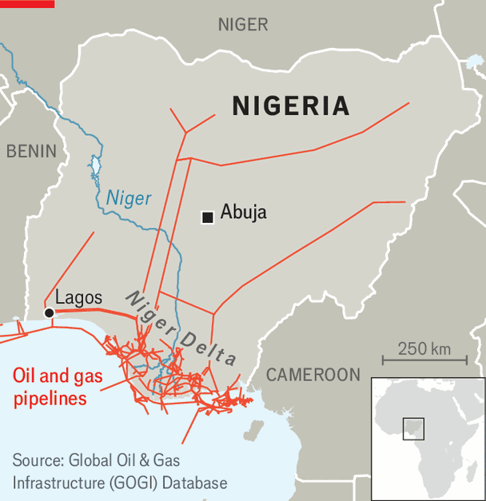
自2023年上任以来，前石油从业者博拉·蒂努布总统（President Bola Tinubu）试图通过加强安保、简化合同流程并提供税收优惠，以及一系列旨在降低成本、提升竞争力的其他改革措施，改善尼日利亚三角洲地区（Delta）的状况。这些举措似乎初见成效。据咨询公司Rystad称，尼日利亚在2025年平均日产原油147万桶，为过去五年最高水平。政府希望到2030年将产量翻倍至300万桶/日，届时尼日利亚将成为全球十大产油国之一，仅次于巴西。此次复苏由本地力量推动。由多家本地企业组成的财团Renaissance Energy于3月接管了壳牌（Shell）的陆上子公司。
另一家本土企业Seplat于2024年以13亿美元收购了埃克森美孚的所有陆上和浅海区块许可证（12月，本土企业Heirs Energies以近5亿美元成为Seplat最大股东）。Oando去年以7.83亿美元从意大利ENI手中收购了四个陆上区块，计划在本十年末前投资20亿美元。尼日利亚石油高管认为本地企业更擅长承担风险。Petralon Energy的Ahonsi Unuigbe表示，像他这样的小型公司“可以灵活迅速”。尼日利亚 conglomerate 沙漠集团联合创始人Tonye Cole认为，本地企业更擅长应对三角洲地区社区的诉求，该地区因数十年的油污泄漏和气体泄漏成为地球上最污染的地区之一。■
对外国企业的不满情绪普遍存在。德尔塔地区的安全状况有所改善。塞帕特公司（Seplat）报告称，管道损失（主要源于盗窃）在2020年至2021年间升至产出的10-15%；自2022年以来，这一比例未超过5%。海尔斯能源（Heirs Energies）总裁欧萨·伊吉霍恩（Osa Igiehon）表示，其2021年从壳牌（Shell）、埃尼（ENI）和道达尔（Total）购得的油田曾是“陆上石油生产面临挑战的典型代表”。此后，产量翻了一番，“第三方行动”——如管道破坏——已完全停止。行业内部人士认为，2021年通过的《石油工业法》（Petroleum Industry Act）要求企业将年度运营支出的3%支付给所在社区。由政府雇佣的前德尔塔州民兵组织运行的本地安全行动也似乎产生了积极影响。■
本地生产商的盈亏平衡价估计在每桶30至40美元之间，即便油价相对较低，他们仍能实现盈利。但并非所有人都认同这一观点。利益相关方民主网络（Stakeholder Democracy Network）这家监管机构认为，本地企业每单位石油产量的排放量是全球生产商的五倍。尼日利亚国家监管机构最初阻止复兴能源（Renaissance）收购壳牌（Shell）资产，理由是该公司无力承担巨额的财务和环境责任。为赢得本地社区支持、修复老化或受损基础设施并开发新储量，企业需要大量资金。但除也在伦敦证券交易所上市的塞帕特（Seplat）外，多数本地企业难以筹集足够的资金实现增长。西方银行对尼日利亚石油仍持谨慎态度。■
本地金融机构刚刚从货币危机中恢复，帮助有限。中国或中东的贷款机构也只能填补部分缺口。许多企业最终将被收购或倒闭。“虽然有很多讨论，”一位行业专家指出，“但这些企业实际上缺乏将石油投入生产的资金。”从长远来看，能够生存下来的公司很可能是那些押注天然气的公司。尼日利亚拥有非洲最大的天然气已证实储量，全球需求正快速增长。政府正提供税收优惠以鼓励天然气投资，这可能推动经济增长。作为比石油更便宜的能源，天然气可用于化肥到钢铁制造等国内产业。乌万杜先生指出，数十年来，尼日利亚的石油工业“主要围绕国际石油公司、出口基础设施和离岸资产负债表设计”。■
希望国内企业更有可能建设国内所需的基础设施。■ 订阅《Analysing Africa》每周简报，让您及时掌握世界上最年轻（且最不为人知）的大陆的动态。
§040 欧洲原题：Europe has three options for defending Greenland · 板块：Europe · 栏目：欧洲
“当你每天醒来都面对新的威胁时，思考解决方案并不容易。”丹麦外交大臣拉斯·洛克·拉斯穆森（Lars Lokke Rasmussen）在1月14日如此低调地表示。他与格陵兰岛代表刚刚在华盛顿与美国国务卿马尔科·鲁比奥（Marco Rubio）和副总统J.D.万斯（J.D. Vance）举行了一场紧张的会晤。自1月3日美国将委内瑞拉独裁者尼古拉斯·马杜罗（Nicolás Maduro）驱逐出境后，唐纳德·特朗普重新燃起了对“征服”格陵兰岛的兴趣。
特朗普在会议前于社交媒体上写道，任何不如将该岛“置于美国掌控之下”的情况都是“不可接受的”，否则格陵兰岛将落入俄罗斯或中国的控制之中。双方“同意各执己见”，拉斯穆森表示。他未透露其政府可能对格陵兰岛地位作出让步的迹象，该岛是丹麦的自治领土。尽管目前似乎没有危机迫近，但特朗普干涉北约盟友的主权问题已引发欧洲首都的警觉。其意图难以揣测：美国是想将格陵兰人与丹麦人分隔、以利益收买岛民，甚至发动入侵？欧洲政界人士正匆忙寻求应对策略。他们的选项大致可分为三类：削弱、威慑与转移注意力。■
目前的首要任务是通过展示这些担忧可在现有法律框架内得到解决，来缓解特朗普先生的所谓关切。拉斯穆森先生表示，将成立一个“高级工作组”讨论北极安全问题。在北约内部，英国和德国提议开展一项名为“北极哨兵”的海军监视任务。这些提议得到了特朗普从北约盟友那里习以为常的奉承所支持，即他有权对高北极地区的安全问题感到忧虑。“他的话总有一定道理，”拉斯穆森先生指出。不过，这一点在格陵兰岛并不成立。根据1951年与丹麦签署的协议，美国实际上可以在该岛部署任意数量的部队。■
冷战后，美国大幅削减了在格陵兰的驻军规模，从曾经的数百人减少至目前单个基地不足200人，该基地位于岛屿西北部，主要用于空间监测和早期预警雷达。格陵兰也处于北约的安全保护伞之下。更广泛的安保担忧似乎被夸大了。奥斯陆弗里德乔夫·纳森研究所的极地专家安德烈亚斯·奥斯特哈根表示：“在格陵兰海域部署北约行动并无实质安全依据。”证据显示特朗普所谓“该岛海域布满俄中船只”的说法缺乏依据，丹麦方面也基本打消了中国在格陵兰投资的兴趣。专家指出，更紧迫的北极议题其实位于别处，例如阿拉斯加。至于特朗普觊觎的稀土和其他矿产，开采成本高得难以承受。
美国企业无需让渡主权即可获得采矿特许权，但鲜有企业表现出兴趣。然而这些论点并未打动总统。因此，当他说“所有权非常重要”时，值得认真对待。一位前美国外交官表示，确保对格陵兰岛的控制是其“对遗产的执念”之一。这意味着欧洲需要考虑第二套选项：阻止特朗普对格陵兰岛的觊觎。布鲁塞尔及其他地区已出现强硬表态，包括暂停欧盟与美国最近贸易协议的部分条款，或对美科技企业施压。更激进的设想包括关闭欧洲的美军基地，或抛售美国国债。不过，欧洲对外关系委员会华盛顿研究主任杰里米·夏皮罗认为，推动此类提案将面临较大阻力。■
多数举措更偏向于报复而非威慑。他建议，更应考虑旨在改变白宫决策逻辑的行动。这些可能包括：在格陵兰建立欧洲部队的轮换驻扎；预先承诺对未经当地同意便开采格陵兰矿产的美国企业实施制裁；以及游说亲美的共和党议员。随着华盛顿会议的召开，丹麦宣布将加大在格陵兰的海军、空军和陆军存在。包括法国、德国和瑞典在内的盟友表示将提供支持。这一象征意义十分明显。但欧洲国家是否愿意进一步升级局势？法国总统埃马纽埃尔·马克龙则持鹰派立场。1月14日，他向内阁表示，特朗普正冒着“前所未有的连锁后果”的风险。■
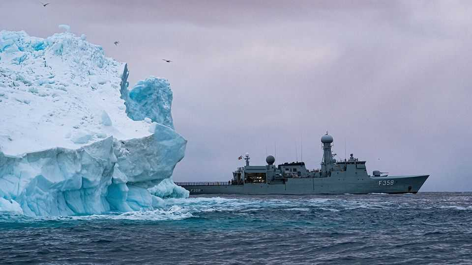
丹麦首相梅特·弗雷德里ksen（Mette Frederiksen）过去主张谨慎，如今却警告对格陵兰的攻击将摧毁北约。前德国副总理罗伯特·哈贝克（Robert Habeck）现任职于丹麦国际问题研究所，他表示美国对格陵兰的任何行动都可能助长俄罗斯对北欧地区蚕食的野心：“所有手段都应被考虑。”其他人则担心局势升级反而会增加特朗普式行动的可能性，而非降低。乌克兰也是另一大担忧：激怒白宫可能让美国在停火后加入欧洲为乌克兰提供安全保障的试探性提议付诸东流。
目前，大多数欧洲政界人士似乎不愿对格陵兰施压。“我们的问题可以通过格陵兰作为丹麦的一部分在现有条约框架下解决，”德国执政基民盟（Christian Democrats）外交政策发言人朱根·哈特（Jurgen Hardt）表示，“我相信这个论点会说服特朗普总统。”如果行不通，最后的希望是特朗普可能被其他事务分散注意力。若要发动一场隐秘的接管行动——比如先推动格陵兰独立，再以此为由签订美格协会协议或吞并格陵兰——需要周密计划和后续执行。这些并非特朗普的强项。军事接管则更容易实施，但会严重考验军方、政府和国会部分成员的忠诚度。仅有4%的美国选民支持动用武力获取格陵兰。■
特朗普事务繁杂，从11月的中期选举到伊朗局势，他热衷于轻松取胜。一旦委内瑞拉带来的兴奋感消退，他或许会发现其他更值得关注的事。也许他谈及的领土兼并只是为了迫使丹麦在安全或采矿问题上达成协议。至少，这是欧洲方面的希望。■ 要掌握欧洲最重要的新闻动态，请订阅我们的周度专属简报《Café Europa》。
§041 欧洲原题：Spain’s judiciary is caught up in a bitter political war · 板块：Europe · 栏目：欧洲
有如此多针对佩德罗·桑切斯（西班牙社会党首相）盟友的待审案件，以至于《新年前夜》报纸预测2026年将成为他的“司法苦修”年。这些案件包括对他的最亲密政治盟友提出的半数腐败调查。此外，西班牙宪法法院可能将审理针对最高法院判处并解雇前检察官总长阿尔瓦罗·加西亚·奥尔蒂斯（Álvaro García Ortiz）的上诉，该判决涉及其泄露马德里地区政府首长情妇税务问题的指控。
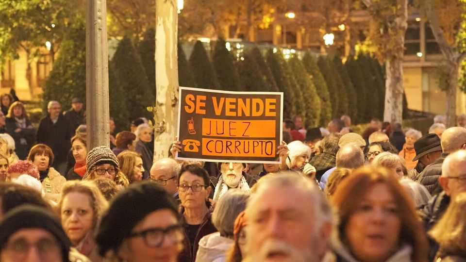
■
法官已指控桑切斯的妻子贝戈尼亚·戈麦斯及其兄弟涉嫌利益冲突（二人均称无罪）。首相及其盟友认为这是针对政府的司法迫害行动。9月，桑切斯曾抱怨称“有些法官在行使其政治权力，虽然只是少数，但他们对司法公正造成巨大伤害”。多名内阁成员也批评过司法裁决。反对党则认为法院正在依法对首相进行问责，而其政党及议会盟友并未做到这一点。但鉴于在议会中缺乏弹劾桑切斯的票数，保守派人民党（PP）往往依赖司法系统来完成其任务。西班牙民主面临的更广泛问题是，司法系统已沦为政治斗争的工具。■
一些西班牙人认为法官一直受政治影响，只是如今这种影响更加明显。但事情似乎变得更糟了。媒体经常将法官划分为保守派或进步派，这在西欧较为罕见（但在美洲却很常见）。在此框架下，最高法院（Supreme Court）多数法官倾向保守派，而宪法法院（Constitutional Court）则以进步派为主导，两者经常意见相左。西班牙还存在多个司法协会系统，这是不寻常的。该国法官有四个协会，检察官有三个协会，这些协会按政治立场划分。去年七月，五个协会连续三天罢工，这是前所未有的举动，抗议他们认为威胁司法独立的法案。其中一项措施将减少法官培训的程式化程度（协会称此举不够深入）。
另一项改革将使西班牙司法体系与多数欧洲国家接轨，即将调查权从法官转移至检察官。第三项政府法案将限制“公众指控”制度，这是西班牙特有的司法程序，允许公民和政治团体向法官提出指控，要求其展开调查。这种制度导致许多案件最终被撤销，却引发媒体审判。但因政府掌控总检察官人选，许多人认为该制度仍是确保敏感案件不被忽视的必要机制。政界与司法界信任破裂的原因有多重，首要原因是围绕司法委员会的权力斗争，该机构负责法官任命。■
其成员由法官提名，但需经议会批准（这是1980年代改革的遗留制度，当时民主政客正努力将法院从佛朗哥独裁时期遗留的法官手中夺回）。过去，该委员会成员定期由社会党与人民党（Partido Popular）达成协议进行更替。但这一安排已告破裂。2018年的一次尝试因一名人民党参议员声称其党派将通过“后门”掌控最高法院主要法庭而告失败。最终在欧洲委员会的调解下，新委员会于2024年选出。另一重要进展是社会党与加泰罗尼亚分离主义者达成协议，允许桑切斯先生在上次大选失利后继续执政，条件是为2017年非法分裂投票参与者提供广泛赦免。■
最高法院将桑切斯及其政党先前反对的赦免令视为一种羞辱：该法院曾对九名分离主义领导人判处重刑。为加深伤口，桑切斯前政治幕僚桑托斯·塞尔达（面临与本案无关的腐败指控，其否认指控）承诺对所谓“司法政治化”案件展开议会调查。法院回应，以存疑理由将分离主义领导人卡莱斯·普伊格德蒙特排除在赦免令之外。第三个引发争议的问题是针对桑切斯家族的案件。其妻子正被一位年长的辅助法官追查，该法官依据极右翼团体的指控展开行动。■
他发现了一些看似不道德的行为：戈麦斯女士（Gómez）获得了她显然不符合条件的大学职位，并推荐一位合作者获取政府合同。但很少有人认为这些行为构成犯罪。法官将调查持续了近两年，似乎乐于享受关注。法律观察人士表示，这类法官只是极少数。“法官并未按照当事人的诉求行事，”前社会党司法部长托马斯·德·拉·夸德拉-萨尔塞多（Tomás de la Quadra-Salcedo）指出。但他担忧，在当前环境下，法官自身的偏见可能导致误判。没有人真正质疑其他司法腐败调查的正当性。“司法界并非偏袒政府，”法治倡导者埃丽莎·德·拉·努埃斯（Elisa de la Nuez）表示。■
但这种反弹令人担忧，她补充道。“法官们首次感到政治权力的威胁。”从长远来看，这对任何人都没有好处。政治人物需要率先采取行动，停止将政治问题司法化。但鉴于西班牙已陷入极端对立，这或许要求过高。■ 要掌握欧洲最重要的新闻动态，请订阅我们的周报《Café Europa》。
§042 欧洲原题：Europe and South America seal a trade pact for the Trump era · 板块：Europe · 栏目：欧洲
欧盟与南美国家联盟（Mercosur）自上世纪便开始就贸易协定展开谈判。1999年比尔·克林顿（Bill Clinton）担任美国总统，鲍里斯·叶利钦（Boris Yeltsin）在克里姆林宫踉跄前行，中国尚未加入世界贸易组织（WTO）。欧盟正自豪地推出其未来货币欧元。全球化带来了诱人的前景：一个更加扁平的世界，国家间贸易更频繁、相互理解更深入。迈向21世纪！
两大阵营即将在本周签署协议，这凸显局势的巨变。美国正从全球化撤退，提高关税，并威胁从北约盟友丹麦手中夺取格陵兰（Greenland），此前还派兵闯入委内瑞拉拘捕其领导人。中国企业的竞争威胁着拉美和欧洲的产业，各国日益关注保障关键原材料的稳定供应，而拉美地区正拥有大量这类资源。为应对这些挑战，欧盟与南方共同市场（Mercosur）在2024年特朗普赢得美国总统大选后迅速完成谈判，但欧洲批准协议仍耗时一年。双方将于1月17日在巴拉圭举行仪式正式签署协议。■
这场持续25年的谈判拖延，归咎于大西洋两岸的保护主义游说团体，尤其是欧洲农民，他们担心廉价牛肉和糖的涌入。一些人将这项协议戏称为“以汽车换奶牛”，暗示拉丁美洲农民和欧洲工业将从中获益。不出所料，法国率先表达不满：它在1月9日的最后时刻仍坚持己见，最终在欧盟内部投票中，法国与波兰及少数小国共同反对该协议。德国及其他北欧出口大国、西班牙（因其与拉丁美洲的紧密联系）则更倾向于支持。在提高农民补贴后，意大利最终转向支持，使协议获得欧盟以人口为权重的“合格多数”支持。该协议将为南方共同市场（Mercosur）四个成员国——巴西、阿根廷、巴拉圭和乌拉圭——的市场开放。■
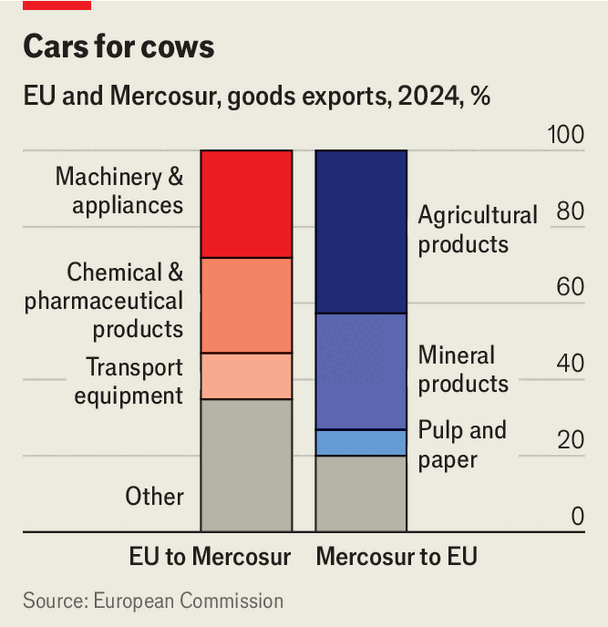
委内瑞拉已被暂停集团成员资格，因此不包含在内。作为最新成员的玻利维亚，未来数年可能加入贸易协定。从经济角度来看，农业在协议中占比极小。欧盟向南方共同市场国家出口的葡萄酒价值2.4亿欧元（约2.79亿美元），仅占欧盟GDP的0.0013%。欧洲消费者仍将为阿根廷牛肉支付高昂价格：关税从40-45%降至7.5%，但仅适用于99,000吨牛肉。这相当于当前从阿根廷进口量的一半，也仅相当于欧盟牛肉产量的1.5%——欧盟本身是牛肉净出口国。其他商品也设有类似限制。遵循这一传统，欧盟向农业游说团体提供了450亿欧元的补贴，这些补贴可从下个欧盟预算中提取。■
为确保南方共同市场（Mercosur）来源的食品符合与欧洲相似的标准，并避免对某些敏感农产品价格造成过大影响，相关保障措施被纳入协议。真正的经济动因则在于工业和服务业贸易。该协议创建了一个超过7亿人口的自由贸易区。欧洲人估算，到2040年，取消双方约90%商品关税并简化服务贸易，将使欧盟对南方共同市场的出口增加490亿欧元（560亿美元），南方共同市场对欧盟的出口增加90亿欧元。但这些数字在整体经济中仍属偏低：欧盟目前对南方共同市场的年出口额（主要为机械、化工品和汽车）为570亿欧元，仅占其GDP的0.47%。相比之下，欧盟对印太地区的商品出口价值约4000亿欧元。然而，这些新机遇对受美国保护主义和中国竞争困扰的欧洲工业而言仍具重要意义。■
它们帮助欧洲工业在失去其他地区市场份额的同时维持规模。Borderlex（一家专业贸易出版物）的伊安娜·德雷尔（Iana Dreyer）表示：“布鲁塞尔目前优先削减高关税地区的关税，例如南方共同市场（Mercosur）和印度。”这项协议是所谓“地缘经济学”（geoeconomics）——地缘政治与经济互动——中的重大事件。它是欧洲扩大与拉美国家关系、多元化贸易和供应链的更大努力中的关键部分。至于不属于南方共同市场的国家，欧盟已与秘鲁、哥伦比亚、厄瓜多尔和智利签订协议。欧盟已就与墨西哥的协议更新完成谈判，目前正等待批准。此类联系有助于发展欧盟在其他方断供时可依赖的拉美产业，例如关键原材料的开采和精炼。
忽视国内农民诉求而冷落南方共同市场（Mercosur）将使欧洲自食其果。欧洲政策研究中心（European Council on Foreign Relations）的阿格莱·德马莱（Agathe Demarais）表示：“未能签署欧盟-南方共同市场自由贸易协定，可能使拉美经济体更接近北京的影响力范围。” 欧盟与拉美地区正在推进“后美国跨大西洋主义”（post-American transatlanticism），正如伦敦国王学院的亚历山大·克拉克森（Alexander Clarkson）所称。1999年那个平坦的世界已让位于区域权力博弈，欧盟正以自身方式参与这场游戏。■ 为掌握欧洲最大新闻动态，订阅我们的周度订阅者专属周报Café Europa。
§043 欧洲原题：Who might succeed Recep Tayyip Erdogan? · 板块：Europe · 栏目：欧洲
一位40多岁的秃顶男子，身披一面土耳其国旗和一面巴勒斯坦国旗的头巾，正在加拉塔桥上向人群发表演讲。加拉塔桥是伊斯坦布尔跨越金角湾的地标建筑。活动是在1月1日举行的支持加沙的游行。演讲内容包括将本雅明·内塔尼亚胡称为“21世纪的希特勒”等表述，与土耳其总统埃尔多安多年来反复强调的论调如出一辙。演讲者宽阔的额头、微微上扬的眉毛和严肃的表情也显得格外熟悉，连话语的节奏都令人联想到某人。他正是埃尔多安总统的次子比拉尔·埃尔多安。■
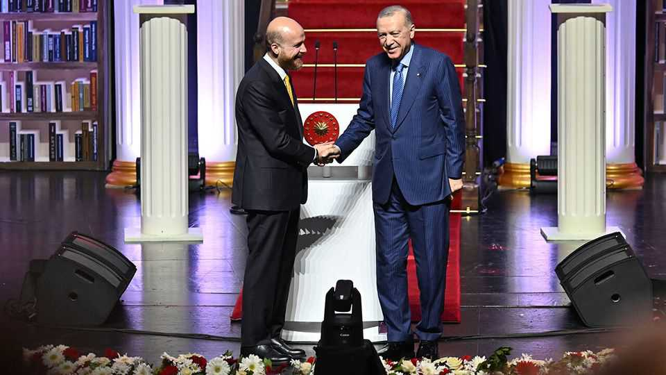
尽管比拉尔（Bilal）并未担任公职，他正逐渐进入政坛的聚光灯下。一系列公开亮相以及他近期陪同埃尔多安（Erdogan）出席与外国领导人的会晤，引发了他被培养为接班人的猜测。比拉尔担任多家亲政府基金会的董事会成员，并成为世界游牧运动会（World Nomad Games）的代表人物，这是一项突厥世界版的奥运会（包括射箭、猎鹰和马术等项目）。此外，他还积极支持巴勒斯坦事业。12月中旬，他援引加沙战争，试图为父亲争取更多权力，这一主张显得颇为牵强。“如果我们让总统的权力再强一些，”他说，“以色列就无法发动这场种族灭绝。”埃尔多安已基本瓦解了对其总统权力的制约机制，很难想象他还能获得哪些新的权力。
他无意短期内卸任。自2003年以来，他先后担任总理和总统，从技术上讲，他无法在现任任期结束后（2028年到期）再次参选。但若通过修宪或提前选举，他仍可能再掌权五年。要推动新宪法通过议会，埃尔多安需获得至少400名议员（议会共有600名议员）的支持，但他目前不具备这一条件。他可动员360票启动修宪公投，但面临失败风险。2017年埃尔多安曾发起此类公投，以进一步强化总统权力，最终仅以微弱优势胜出，且伴随选举舞弊的指控。他更可能要求议会提前举行大选，预计在2027年下半年。埃尔多安的健康状况属于国家机密。但71岁的他已明显显露出衰老迹象。
若埃尔多安决定不参选，预计他将指定一位继任者，以正义与发展党（AK）的名义参选。该党已沦为埃尔多安的橡皮图章，大概率不会对此事发表意见。公开场合，AK党官员拒绝考虑没有埃尔多安领导的未来。“没有B计划”，一名党内高级成员表示。然而在幕后，一场争夺埃尔多安青睐的斗争正在形成。据报道，有四人竞争这一位置：女婿兼总统女婿兼土耳其无人机项目总设计师塞尔丘克·巴亚克塔尔（Selcuk Bayraktar）、前内政部长苏莱曼·苏伊卢（Suleyman Soylu）、外长哈坎·菲丹（Hakan Fidan）以及比拉尔（Bilal）。一项12月民调显示，33.4%的土耳其人更倾向菲丹担任AK党主席，比拉尔以14.2%排名第三，高于巴亚克塔尔（12.9%），但低于苏伊卢（32.5%）。■
菲达恩无疑是这批人中履历最出色的。他曾在土耳其情报机构任职十多年，后升任该国最高外交官。去年秋天，他透露土耳其国产战斗机生产因美国国会拒绝发放出口许可而停滞，这引发了对其野心的猜测。这番言论恰逢埃尔多安与特朗普在白宫会面后不久，双方均称会谈取得成功。这表明菲达恩足以在老板的庆功宴上泼冷水，显示出其分量。AK可能难以承受领导层更迭的冲击。■
埃尔多安本人即便掌控了大部分媒体，也难以赢得下届大选；其主要对手、伊斯坦布尔市长埃克雷姆·伊姆亚穆卢因捏造罪名被羁押；反对党共和人民党（CHP）则被检察官穷追猛打。高利率、新税和支出削减削弱了总统的声望。通胀率已从双位数高位降至30%以上，对多数土耳其人而言仍属不可接受的高位。多数民调显示，埃尔多安在伊姆亚穆卢和安卡拉市长曼苏尔·雅瓦斯面前处于下风，后者被视作CHP的总统接班人人选。任何被指定的接班人都将面临更严峻的挑战，尤其是若其姓氏仍为埃尔多安。■
土耳其政治学者塞达·德米尔阿尔普（Seda Demiralp）表示，大多数AK选民反对将政府视为家族企业的想法。另一位学者布尔克·比尔盖汉·奥兹佩克（Burak Bilgehan Ozpek）指出：“埃尔多安是独裁者，但他拥有民主合法性，比拉尔（Bilal）则没有。”土耳其的民主制度已陷入严重困境，但埃尔多安家族的统治地位仍存变数。■ 要获取欧洲最大新闻的深度解读，订阅我们的周度订阅者专属简报Café Europa。
§044 欧洲原题：Germany’s economy is so bad even sausage factories are closing · 板块：Europe · 栏目：欧洲
在20世纪80年代，东德的埃伯斯瓦尔德香肠厂（Eberswalder Wurstwerke）是欧洲最大的香肠生产商，拥有约3000名员工。占地65公顷的生产基地还配有理发店、诊所、图书馆和餐厅。那些共产主义时代早已一去不复返。上周，大约500名剩余员工得知，这家新近（西德）接手的公司——因其无皮香肠（skinless bratwurst）和施尔夫海德香肠（Schorfheider Knüppelsalami）拥有狂热的忠实客户群体——将于2月底前关闭位于布里茨（Britz）的工厂。 ■
“我们比电视播报提前半小时就得知了这件事，”一名身穿白色制服的员工在工厂大门外的商店里说道。工厂直营店在下雪天气中依然生意兴隆。托尼茨（Tönnies，德国西部的肉类加工企业，现拥有这家工厂）的员工抱怨称，“他们两年前收购我们时曾承诺会投资，但如今却未兑现。”作为按名义GDP计算全球第三大经济体，德国经济已陷入停滞三年，工厂关闭和企业破产情况日益严峻。1月8日，德国大型线上时尚零售商Zalando宣布将关闭位于东部城市埃尔福特（Erfurt）的物流中心，该中心雇佣了2700名员工。德国统计局（Destatis）初步数据显示，12月企业破产数量同比2024年同期激增15%。交通运输、旅游接待和建筑行业受影响尤为严重。■
根据哈雷经济研究所的数据，去年德国企业破产总数超过17,600家，创20年新高。令德国人最沮丧的是，知名企业的接连破产现象。去年破产的知名公司包括该国一些最大品牌：戈尔茨（鞋类）、杰里·韦伯和艾斯派（时尚）、格罗森马克特（折扣零售）、卡里·巴乌（建筑）以及祖·扎亚克（全球最大宠物商店）。当然，其他经济衰退期的形势更为严峻；互联网泡沫破裂导致的公司破产数量远超当前水平。某些年份甚至有超过39,000家企业破产。但此前的危机多集中于特定行业，如互联网泡沫破裂时的科技行业。相比之下，当前的困境波及各行各业。■
德国制造业曾是经济稳定的支柱，缓解其他领域波动的影响。但如今形势已大不相同：出口导向型产业尤其容易受到全球冲突、关税和高能源价格的冲击。该国整体经济模式已难以适应新的现实。在调整之前，就连香肠制作这样的传统行业也难逃被砍掉的风险。■ 要掌握欧洲最重要的新闻动态，请订阅我们的周度专属简报《Café Europa》。
§045 欧洲原题：Europe’s farmers no longer rule the roost unchallenged · 板块：Europe · 栏目：欧洲
担任法国总统意味着要遵循一套高度程式化的仪式日程。每年除夕，埃马纽埃尔·马克龙（Emmanuel Macron）如同其前任一样，会向全国发表电视讲话。7月14日的国庆日，他会检阅在香榭丽舍大街游行的部队。而在二月最后一个周末，他则会花一整天时间在农业展上抚摸奶牛。巴黎郊外的临时农场，对农村世界而言，就如同时尚周之于时尚都市人，奶牛们则如同超级模特，供人围观。总统的到访是他向农业世界表达忠诚的机会。
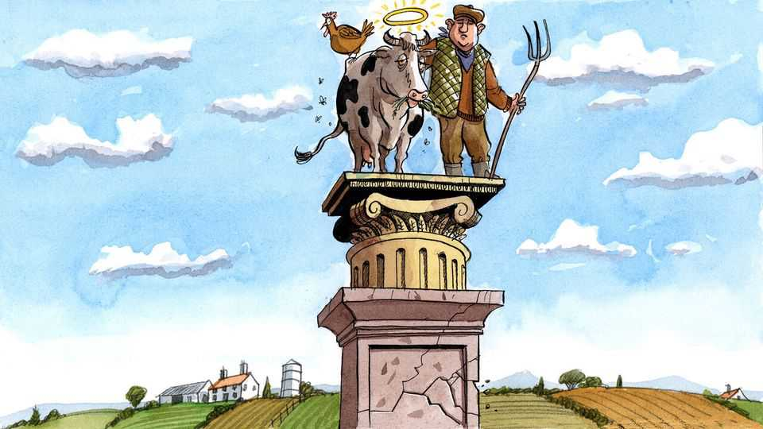
从黎明到黄昏，他被期待着抚摸从各地运来的牲畜，对每一块递来的奶酪和香肠都表现出欣喜，与每位农民握手，并严肃地点头回应他们无尽的抱怨。2024年，马克龙（Macron）为在沙龙待了13小时，而跳过了与美国总统和其他G7领导人的通话。去年他将访问时间缩短至12小时，以应对全国性紧急事件。还有哪种经济活动，其规模仅占GDP的1%左右，且雇佣人数不断减少，却能获得如此多的政治关注？欢迎来到欧洲，一个似乎只为农民利益而运转的地方。不仅马克龙如此高调地推崇拖拉机队伍。■
从都柏林到雅典，那些可能自己都不清楚牛的哪端是产奶端的政客们，对农民们表现出如同祖父母对婴儿般的甜腻温情。欧盟覆盖的是一片高度城市化的大陆，但有时却像一个拥有旗帜和议会的农业补贴俱乐部。欧盟预算的约三分之一用于农民，主要通过共同农业政策（CAP）——这是政策制定议程中最神圣的牛。欧盟成立条约规定，农民应享有“体面的生活水平”，这一特权在其他公民类别中从未被提及。然而，事实证明，即便是神圣的牛，最终也可能被送上屠宰场。一系列近期政策表明，农民对政治同情的准垄断地位正在逐渐减弱。
1月17日，欧盟将与南美国家联盟（Mercosur）签署自由贸易协定。该协议谈判持续了25年多，由渴望开拓汽车和机械新市场的工业利益集团推动。然而，农民群体因不愿与世界顶级牛肉生产国竞争而长期阻碍协议进展。但1月9日，欧盟成员国政府以“合格多数”投票通过了该协议。与农业强国的贸易协定正在推进中，包括与印度和澳大利亚。其他损害农业者的案例也逐渐浮出水面。乌克兰加入欧盟的前景比以往任何时候都更现实；快速入盟可能是与俄罗斯达成和平协议的必要条件。■
军事界人士对这一举措可能带来的大陆安全影响的担忧，与农民们对允许一个土壤如此肥沃的国家加入的焦虑相比，简直不值一提。乌克兰的可耕地面积超过法国和德国的总和，其中大部分由大型农业集团收割。若不进行改革，欧盟共同农业政策（CAP）拨付的大量资金最终将流入乌克兰手中。对农夫们来说，最糟糕的是，这项农民补贴计划不再像过去那样神圣。7月，欧盟委员会提出了一份长期预算提案，暗示将削减CAP资金约30%。长期以来习惯于从布鲁塞尔获得巨额补贴的农民们，如今却感到被繁文缛节压得喘不过气。■
作为环境政策的一部分，欧盟推动限制支撑集约农业的实践，例如过度使用农药。甚至有官方人士建议消费者减少吃肉。不过农民并非完全被推上风口浪尖。得益于广泛的游说努力，有时甚至涉及投掷粪肥，南方共同市场协议包含了对肉类进口的严格配额。为赢得协议支持，欧盟委员会撤销了部分原定于2028年实施的共同农业政策（CAP）削减措施。农民还获得了其他让步，例如放宽了行政程序、动物福利和农药使用的规定。若乌克兰加入欧盟，其农民将需等待多年才能获得CAP补贴，甚至获得欧盟市场准入。但农民政治影响力的衰退似乎已成定局。■
这在很大程度上源于相互冲突的优先事项。欧盟与南美共同市场（Mercosur）达成协议长期以来只是“锦上添花”的选项，但在美国关税政策和中国大量出口商品冲击的背景下，这一协议已演变为超越农民自身控制力的地缘政治必需。欧洲各国预算本就紧张：每投入一欧元用于农业，就意味着国防或提升工业竞争力的资金减少一欧元。农民过去曾辩称，他们通过保障欧洲粮食安全帮助维持了欧洲的主权。但共同农业政策（CAP）催生的体系导致粮食过剩，进而推动出口。若欧洲希望隔绝外部世界，它还有其他更值得投入资金的领域，例如替代工业进口。农民对政客最具说服力的论点是，扶持乡村有助于维持社会稳定。“农民的角色不仅仅是粮食生产者。”■
“我们是欧盟民主制度的稳定器，”农业游说团体COPA主席马西米利亚诺·吉安桑蒂（Massimiliano Giansanti）表示。民粹主义右翼在农村地区势头强劲，利用农民被边缘化的感受。在法国，一种牛类疾病暴发使农业部门承受特别压力。更糟的是，由于疾病影响，今年即将举行的农业博览会将不再出现奶牛。马克龙总统届时将如何应对漫长的展会时间？■ 订阅者可注册《经济学人》观点通讯，汇集本刊领袖文章、专栏、特邀评论及读者来信精华。
§047 英国原题：Six months after a big review, British defence is still in trouble · 板块：Britain · 栏目：英国
去年夏天，英国发布了一份“彻底的战略防务审查”（SDR），旨在为国家未来数年的军事发展道路定下基调。然而，这份报告已显露出一些问题。英国首相基尔·斯塔默（Sir Keir Starmer）于1月6日承诺，将派遣部队加入“自愿联盟”，以维护未来的停火协议。这将是英国军队自阿富汗战争以来最重大的军事承诺。同日，白宫重申，美国意图吞并丹麦的格陵兰岛——必要时将采取武力手段。
■
这引发了欧洲国家，包括英国在内的罕见公开谴责。美国的强硬态度，受“Donroe原则”支撑，该原则被用来为美国对委内瑞拉的突袭行动辩护，引发了对英国在军事、核能和情报领域对美国依赖性的质疑。《经济学人》采访了十二位参与特别提款权（SDR）及其实施的人士。多数人对进展缓慢表示不满。该文件早在2025年初就已准备就绪，但直到夏季才发布。“过去六个月发生的事情微乎其微，”退休将军理查德·巴伦斯爵士抱怨道，他是该审查报告的作者之一。一份“国防投资计划”（DIP），一份概述国防部未来十年计划采购的武器和平台的文件，已失踪。该计划本应在秋季发布，但至今仍无下文。■
这令许多国防企业，尤其是规模较小的公司感到沮丧。另一名审查团队成员格蕾丝·卡西（Grace Cassy）去年在一次论坛上表示：“我认同许多企业和投资者对尚未看到资金流向……更年轻、更具创新性的供应商群体所表达的担忧。”一位内部人士称，许多希望在欧洲设立总部的年轻国防企业正在在英国和德国之间抉择。“他们都说：我们选择德国，因为德国确实在花钱。”理论上，政府承诺到2027年将国防开支占GDP比重提升至2.6%，并按北约盟友标准在2035年前达到3.5%。但大部分资金集中在2030年代后才到位。■
国防通胀居高不下，核武器开支消耗了大部分预算。本·巴里（Ben Barry）表示，实际上，常规军力开支在本财年和下财年正呈下降趋势。一位熟悉相关数据的人士指出，十年内，战略防御审查（SDR）愿景与实际拨款之间存在240亿英镑（320亿美元）的缺口。近日英国媒体更指出，四年内缺口达280亿英镑。英国皇家空军新战机项目，与意大利和日本合作，与AUKUS计划（美澳联合建造攻击潜艇方案）难以协调。巴里表示：“我看不到任何证据表明弹药、储备物资和医疗能力的战备水平有任何实质性改善。”
巴里先生表示，包括去年退役两艘两栖舰在内的两栖作战能力削减，使英国在阿根廷再次夺回福克兰群岛（1982年曾被阿根廷占领）时能否重夺该岛存疑。更紧迫的冲突地区是乌克兰。国防大臣约翰·希利向议会表示，乌克兰多国联合部队（MFU）将在停火后在陆海空领域开展“防御与威慑行动”。英国和法国将建立“军事基地”协助乌克兰通过培训和规划“重建”其武装力量。《泰晤士报》报道称，英国部队规模预计低于7,500人。若希利真意在威慑俄罗斯，该部队需为“重型旅”，配备大量装甲装备。更可能的是，其将是一支以轻装步兵为主的“轻型旅”。
但一个旅通常需要每六个月轮换一次，因此还需要一个预备旅，甚至可能再有一个作为后备。一位将军表示，这在理论上是可行的，但已接近英国军队能勉强维持的极限：“目前部队严重缺编。”英国已向爱沙尼亚部署了一个战斗群（约1000人），并承诺将其扩大至一个旅规模。任何英国远征部队的经费都可能来自英国每年承诺拨给乌克兰的30亿英镑。巴里先生指出，更令人担忧的是，军队目前拥有的火炮和防空武器几乎所剩无几，大部分已移交给了乌克兰。他指出，英国曾在1990年代向波斯尼亚部署了一个重型旅达六年之久，但当时军队拥有超过10万名士兵，规模几乎是如今的两倍。■
实际上，任何MFU都离不开美国的某种支持。这显得颇为尴尬。美国与欧洲正陷入自二战以来最严重的争端之一，围绕美国对格陵兰岛的威胁性追求。去年夏天，SDR指出美国“安全优先事项发生了变化”。参与此次审查的人员表示，英国政府对更坦率地表达立场存在“相当大的阻力”，担心引发唐纳德·特朗普的报复。不过，这一问题已难以回避。一位前高级官员表示：“在欧洲所有军队中，我们对美国的依赖程度最高。” ■
最大的依赖关系存在于核力量、情报和潜艇领域。"从根本上说，文化上，我们的问题在于军方领导层只想购买美国产品。"如今许多国防圈内人士认为，是时候考虑更激进的选项了。"与其逃避美国可能背弃盟友的潜在风险，我们至少应做好准备，"曾任英国国防大臣（2019-2023年）的本·华莱士爵士（Sir Ben Wallace）表示，"这场讨论应涵盖从文化变革到重新审视如何抵御不可预测的外交政策对国家韧性的威胁。"在许多领域，英国对美国的依赖将持续数十年。英国与美国共享的Trident D5核弹头导弹预计服役至2040年代。英国皇家空军计划将F-35战斗机服役至2060年代。■
解除这些依赖关系每年需要数十亿英镑的额外支出，前英国国防部官员、现皇家联合服务研究所（Royal United Services Institute）研究员马修·萨维尔指出。他建议加大对关键能力领域的投资，例如情报和太空平台，以增强英国在不依赖美国的情况下行动的能力。目前，英国正边跑边站。理查德爵士表示：“从目前的支出水平来看，在许多方面，三到五年后英国不会比现在更好，只会有一些微小变化。”■ 如需获取更多关于英国重大议题的专家分析，请订阅我们的周度专属简报《Blighty》。
§048 英国原题：Britain’s high-tech hunt for Russian subs in the North Atlantic · 板块：Britain · 栏目：英国
“红色十月”（Red October）是汤姆·克兰西（Tom Clancy）1984年的小说，后被改编为邪典电影，描绘了俄罗斯潜艇试图突破格陵兰-冰岛-英国（GIUK）缺口进入北大西洋，与北约部队展开的猫鼠游戏。这场博弈仍在继续，但对英国而言正变得愈发艰难。英国皇家海军严重缺乏攻击型潜艇和护卫舰，而最新一代俄罗斯潜艇的静音性能也大幅提升。英国的“大西洋堡垒”（Atlantic Bastion）计划旨在应对这两个挑战。
这一构想的核心是，有人值守的军舰和战机将通过“人工智能驱动的声学探测技术”与水下传感器和无人自主舰艇相连，过滤海洋噪音以探测俄罗斯潜艇。值得注意的是，该传感器网络包括依靠浮力长时间水下航行的无动力滑翔器，其运营将由承包商负责——这类似于一种“潜艇猎杀服务”。这是一项巧妙的构想，但也存在一些局限。皇家联合服务研究所（Royal United Services Institute，RUSI）这家智库的一篇论文指出了其中两个问题。其一是俄罗斯可能在战争爆发前通过GIUK缺口大量部署潜艇。一旦潜艇穿越这一战略要道，追踪它们将变得异常困难。人工智能驱动的传感器在受限区域表现卓越，它们能学习正常声波模式，从而识别新出现的异常声波——例如俄罗斯潜艇的螺旋桨声。■
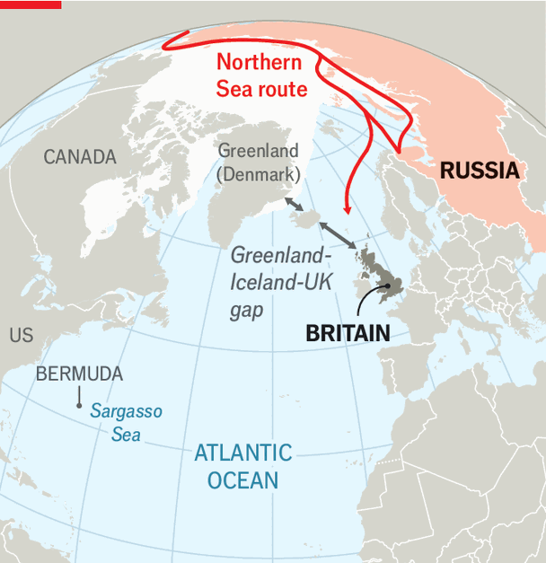
在大西洋全域实施此类行动难度极大。在像位于百慕大以东的萨拉扎海这样的区域，暖水与冷水的混合使声波传播方式不同，因此行动难度更大。更隐蔽的选择是让俄罗斯潜艇穿越格陵兰岛以北的厚冰层，完全避开布满传感器的咽喉要道。俄罗斯已多次演练这种战术。除美国外，北约其他国家的水下作战能力已显陈旧。英国皇家海军上一次公开的冰下演习距今已有八年。对俄罗斯而言，目标是迫使美国将潜艇和军舰从本国海岸线撤离。英国皇家联合军种研究所（RUSI）建议，英国应增强对俄罗斯边境的火力部署，将俄潜艇逼回东北方向。目前，英国战舰火力薄弱，甚至无法发射任何巡航导弹。■
英国皇家海军宣布了名为“大西洋行动”的计划，该计划细节不多，但预计将包括配备导弹的无人艇。在北大西洋，机器人正在到来。■ 通过我们的周度订阅者专属简报《战情室》，随时掌握国防与国际安全动态。
§049 英国原题：Nigel Farage would bring uncertainty to Britain’s policy on Putin · 板块：Britain · 栏目：英国
斯塔默爵士认为，他终于找到了能遏制奈杰尔·法拉奇崛起的弱点，这位右翼政党改革党的领袖目前民调领先。这个弱点就是弗拉基米尔·普京。有时首相的论点十分直接，例如他在近期接受《经济学人》采访时表示，在法拉奇所谓“亲普京”领导下，英国在支持乌克兰的欧洲联盟中的角色将崩溃。 ■
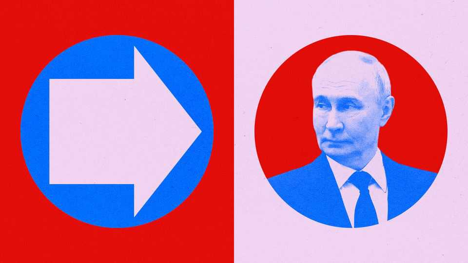
有时他借助幽默手段，例如1月7日在英国下议院，他向改革党议员发出圣诞问候：“因为今天是他们在俄罗斯庆祝圣诞节的日子。”从政治角度看，这或许有效。但这是否不公？并非完全如此。对于被描述为“刺儿头民粹主义者”的法拉奇先生而言，他长期坚持一个不受欢迎的立场：俄罗斯对邻国的侵略部分责任在于西方领导人，因为他们主导了北约和欧盟的扩张。若他掌权，这将给英国对俄罗斯及其欧洲盟友的立场带来高度不确定性。基尔先生已签署声明，承诺部署英国部队至乌克兰，作为未来和平协议的安全保障。■
法拉奇反对这一观点，称英国和法国单独缺乏执行“显然没有明确结束时间”的行动所需的人力和装备。在其他领域，法拉奇则采取更为传统的立场。他表示改革党将增加国防开支。1月12日的记者会上，他暗示改革党将履行英国对保卫北约东翼的承诺。目前英国军队部署在爱沙尼亚和波兰，参与北约威慑力量；英国战机则参与波兰和罗马尼亚的“空中巡逻”行动。他会支持这些行动吗？“他们现在都是北约成员国……一旦成为北约成员国，就必须得到保护。”他说，北约的扩张给普京提供了战争借口，但“你谈论的是历史问题”。这是他多年来一直主张的观点。■
作为英国脱欧前欧洲议会成员，法拉奇（Nigel Farage）对俄罗斯持有一种“敌人的敌人不一定是坏人”的立场。在他看来，欧盟如同苏联的镜像，同样被意识形态狂热和帝国式傲慢所主导。他多次指出，欧盟的扩张终将引发与俄罗斯的冲突。英国独立党（UK Independence Party）的欧洲议会议员曾反对2008年谴责普京入侵格鲁吉亚的决议。法拉奇也反对2011年批评俄罗斯选举的决议，他认为尽管相关指控值得调查，但欧盟“无权对其他国家的民主说三道四”。■
2014年普京吞并克里米亚后，法拉奇先生愤愤不平，称布鲁塞尔选择“用树枝戳俄罗斯熊”。他怒吼道：“你们是罪魁祸首，却拒绝承认这一点。”他至今仍对这段发言引以为傲，2022年乌克兰遭遇全面入侵时，他宣称自己预见了这一切。（这一说法他本周再度重申：“我预测正确，没人看到这点。”）有时法拉奇对俄罗斯的纵容带有个人色彩：2014年被问及最钦佩的领导人时，他点名普京：“作为操盘手，而非作为人。”他称俄罗斯介入叙利亚内战是“精彩之举”。这种纵容常带来宣传效应：法拉奇频繁出现在俄罗斯国家广播公司RT的节目中。■
改革党的批评者一直在寻找其接受俄罗斯资金的证据，但始终未能找到确凿的证据。然而，前威尔士改革党领袖纳森·吉尔（Nathan Gill）于2025年11月因承认收受贿赂以发表支持面临乌克兰调查的亲俄寡头的演讲，被判处十年半监禁。改革党称其行为“背叛国家且不可原谅”。此类行为对选举而言是重大隐患。普京在英国公众中形象恶劣。民调显示，英国对乌克兰的支持率高于其他大型欧洲国家。确实，改革党选民对乌克兰的怀疑态度高于英国整体民众。（据民调机构More in Common调查，64%的改革党选民表示更同情乌克兰而非俄罗斯，而全体英国人中这一比例为74%。）但他们的亲俄倾向远低于法国、德国或波兰极右翼政党支持者。
法拉奇对北约的温和支持与基尔爵士在野时大张旗鼓地展示工党支持的喧嚣努力形成鲜明对比，后者在他看来是检验工党执政资格的试金石。随着下届大选临近，这或许会缓和法拉奇的立场。其观点转变很大程度取决于他圈内谁对他影响更大。新任外交事务顾问艾伦·门多萨领导的亨利·杰克逊学会（Henry Jackson Society）是一家对俄罗斯持鹰派立场的智库。他表示法拉奇的观点自领导英国独立党（UKIP）以来已有所演变。改革党反对基尔爵士的乌克兰行动，是因为该行动不可行，而非因其在原则上错误，他称。该党副领袖理查德·蒂斯于2024年加入了前往乌克兰的慈善援助车队。■
詹姆斯·奥尔（James Orr）是一位神学学者，为法拉奇提供建议，他表示主流政客们陷入“乌克兰思维”的困境，该党应将“肯特优先于基辅”。法拉奇完全掌控着该党；他独自决定该党转向何方。■ 如需获取更多关于英国重大新闻的专家分析，请订阅我们的周度专属简报Blighty。
§050 英国原题：The trouble with West Midlands Police · 板块：Britain · 栏目：英国
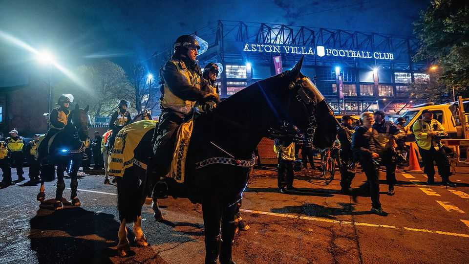
西米德兰兹警察局提议禁止马卡比特拉维夫队球迷参加对阵阿斯顿维拉的比赛，其报告中引用了此前与西汉姆联队的比赛。但该场比赛从未举行，原因是微软Copilot人工智能工具的幻觉。内政大臣沙巴纳·马茂德表示，她已对首席警监克雷格·吉尔福德失去信心。她希望恢复罢免表现不佳警官领导者的权力。 ■ 更多关于英国重大新闻的专家分析，请订阅我们的周度付费简报《布莱蒂》。
§051 英国原题：A weapon that could help red squirrels in their Battle of Britain · 板块：Britain · 栏目：英国
“知彼知己，百战不殆”是古代中国军事家孙武（Sun Tzu）的名言。你必须发现并利用敌人的弱点才能取得胜利。红松鼠恢复网络（RSRN）在与入侵物种灰松鼠（Sciurus carolinensis）的斗争中，采用了这种战略思维。这些生态学家究竟在利用灰松鼠的什么弱点？答案是灰松鼠对榛子黄油的贪婪食欲。
这些生物正因对英国本土红松鼠种群的影响而成为重点打击对象。目前英国估计仅有约39,000只红松鼠，而灰松鼠数量则高达至少250万只。红松鼠保护联盟（RSRN）希望扭转这一局面。该联盟的研究人员来自英国政府动植物健康署，获得英国松鼠保护协议（UK Squirrel Accord）的资助，正通过在橡果黄油中添加药物开发出一种秘密武器：一种极具吸引力的避孕药饵。其避孕效果已获证实，经过进一步试验后有望投入实战。为避免误伤，团队设计了一种巧妙的喂食器，即将在诺森伯兰郡进行测试。这种喂食器的门仅对体重较大的松鼠开放，可让90%的成年灰松鼠进入，却完全阻挡红松鼠。■
松鼠慈善组织指出，若不采取保护措施，红松鼠将在十年内几乎从英格兰和威尔士消失。它们的美洲灰松鼠表亲于19世纪末被引入后，体型更大、更聪明，且在食物和栖息地的竞争中更具优势。虽然爪对爪的搏斗罕见，但灰松鼠对松鼠痘病毒具有抵抗力，而它们正是通过传播该病毒导致红松鼠种群灭绝。迄今为止，保护措施主要集中在捕杀灰松鼠——一种代价高昂但见效直接的手段。人们希望避孕诱饵和精准投喂装置能成为更具可扩展性且更人道的控制手段。公众被鼓励通过应用程序记录松鼠踪迹，以支持项目数据团队的工作。来自国家彩票的490万英镑（660万美元）将用于资助为期五年的总体规划。■
RSRN是26个入围"英国野生动物修复大奖"的保护项目之一，获奖者即将揭晓。这些项目涵盖从"粪金龟保护计划"（帮助英国60种粪金龟）到拯救濒危黏液蜗牛的方案（该物种目前仅存于威尔士北部一个湖泊）。这类本土生物鲜少成为焦点，但正如英国和爱尔兰动物园协会（BIAZA）保护主管尼克·尼德汉姆所言，它们与异域物种同样值得关注。本土物种的生存困境正引发公众日益关注，调查显示88%的英国人担忧本国野生动物减少。据伦敦自然历史博物馆发布的指数显示，英国是G7国家中生物多样性最贫乏的国家。■
尽管红松鼠在全球范围内并未濒临灭绝（许多稳定种群在欧洲广泛分布），但它们在英国的处境却十分严峻。其盟友榛子酱的处境同样堪忧。■ 如需获取更多关于英国重大新闻的专家分析，请订阅我们每周的订阅者专属通讯Blighty。
§052 英国原题：Another U-turn from Britain’s government · 板块：Britain · 栏目：英国
谁敢在英国人和他的一品脱啤酒之间插足？财政大臣拉切尔·里夫斯（Rachel Reeves）犯了这个错误。11月，里夫斯宣布，其政府将从4月起逐步取消为帮助酒吧渡过新冠疫情而推出的慷慨税收减免政策。酒吧界的反弹声势浩大。商业房产税（business rates）是英国对所有商业建筑征收的税种。每三年，估值办公室管理局（Valuation Office Agency，VOA）会估算英格兰200万处房产的市场租金，即“可课税价值”（ratable value）。随后财政部设定一个“乘数”（multiplier）——即房产可课税价值的固定百分比——每年向占用者征收。
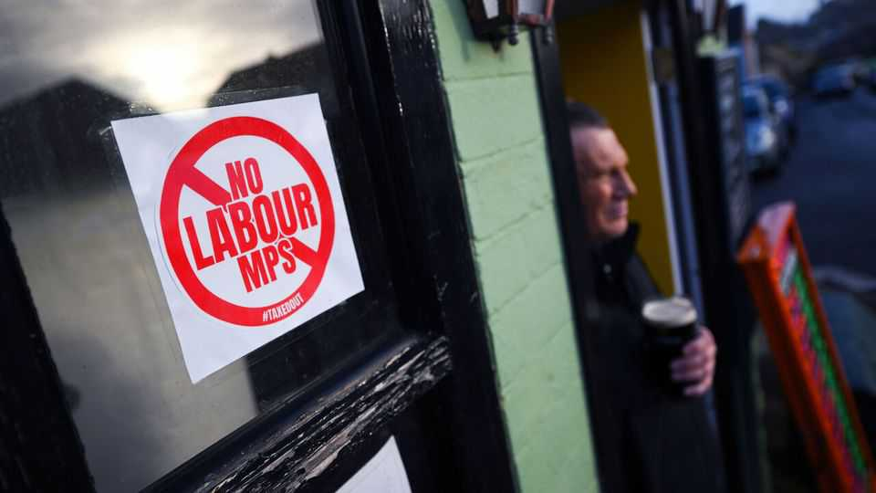
商业税今年将为政府带来28亿英镑（38亿美元）的收入，相当于税收总收入的2.2%，这一占比高于富裕国家的平均水平。12月，估值办公室（Valuation Office Agency）完成了对商业房产的新估值。疫情后复苏使税基三年内增长了五分之一，从680亿英镑增至820亿英镑。为缓解这一增长，财政部于4月将大多数企业适用的税率乘数从英镑的50%降至43%。但政府同时取消了为帮助零售和餐饮行业渡过疫情而提供的税收减免。如同许多税收调整一样，这里既有沉默的受益者，也有大声抗议的受损者。最喧哗的抗议者是英格兰37,000家酒馆的业主。
《经济学人》分析显示，若实施任何“过渡性”减免，普通酒馆常客的年度税负将在未来三年内从10600英镑增至15000英镑。一些酒馆已张贴禁令，禁止工党议员进入。英国酒馆协会调查显示，若税率上涨实施，仅十分之一的酒馆将保持盈利。这又是一次工党的政策逆转（如此前对冬季燃料补贴、福利改革、农民遗产税以及本周提出的工人数字身份证政策的调整）。商务大臣彼得·凯尔表示，政府目前处于“倾听模式”。如何安抚酒馆业主的具体措施尚未公布。我们的计算显示，若通过乘数效应为酒馆额外提供10便士的减免，三年内平均年度税负可降至12800英镑，但每年将使财政部损失8亿英镑。这笔支出是否值得仍有争议。
新冠疫情时期对零售和餐饮业的纾困措施，过去五年已耗费纳税人127亿英镑。经济理论认为，任何商业房产税减免都会影响租金，意味着酒馆的较低税率账单最终将被更高的租金抵消。财政研究所（IFS）的斯图尔特·亚当表示：“如果酒馆有正外部性，或许应补贴它们；但如果人们不想去酒馆，也许应该减少酒馆数量。”若政府对酒馆行业撤回支持，可能还要面对更广泛的餐饮和零售业的压力。该行业面临未来三年平均税率上涨50%；若将其78万处物业的税率乘数下调10便士，三年内将减少财政收入55亿英镑。商业房产税对大小商店而言都可能显得沉重。■
乐购（Tesco），英国最大的超市，其税率账单高达7亿英镑。英国零售协会（BRC）的海伦·迪克森（Helen Dickinson）表示，税率始终是其成员投诉的前两大问题之一，且是三分之二门店关闭的诱因。部分承租人已获得特殊豁免，教堂、慈善机构和农场可享受100%税率减免。2025年起，电影制片厂将获得为期十年的40%折扣。乐购首席执行官肯·墨菲（Ken Murphy）称该体系亟需“彻底改革”。英国零售协会（BRC）和IFS均持相同观点，工党2024年竞选纲领也明确承诺“取代”商业税率制度，因其“制造不确定性”且“给高街商业带来不合理负担”。然而，这套体系如同未受约束的酒鬼，仍在踉跄前行。■
如需获取英国最重要的新闻的更深入专家分析，请订阅我们的周度订阅者专属简报Blighty。■
§053 英国原题：The case for banning vehicles from Oxford Street in London is weak · 板块：Britain · 栏目：英国
在英国版的“大富翁”棋盘游戏中，牛津街属于第二昂贵的地产区。它与邦德街和摄政街（伦敦市中心附近的两条购物街）齐名，且高于皮卡迪利大街、斯特兰德街和特拉法加广场。多年来，很少有游客对它做出如此正面的评价。“并非伦敦最引人注目的街道，”小说家兼随笔作家弗吉尼亚·伍尔夫在20世纪30年代初写道，“这里太多折扣商品，太多促销活动。”此后至今，牛津街一直饱受小贩和叫卖者的困扰。
在伍尔夫时代，这里曾售卖乌龟，到1980年代转为销售劣质香水，2020年代初则变成高价糖果。如今，伦敦人开始兜售宗教，尤其在牛津广场（Oxford Circus）一带，这里正是牛津街（Oxford Street）与摄政街（Regent Street）交汇处。伦敦当局已忍无可忍。市长萨迪克·汗（Sir Sadiq Khan）称牛津街“具有标志性但正走向衰落”，并成立发展公司行使规划权。他计划将从塞尔福里奇百货（Selfridges）到牛津广场一段900米长的路段改为步行区，未来或扩展至整条街道。目前已有部分路段禁止机动车通行。公交路线调整的咨询将于1月16日结束。一些当地居民对这一前景深感不满。玛丽勒bone协会（Marylebone Association）成员迈克尔·博尔特（Michael Bolt）认为，步行化将迫使公交车、货运车辆和噪音涌入狭窄的住宅街道。
此前一项计划因抗议组织在地方选举中赢得超过1000票而搁浅。此次该计划很可能得以推进。萨迪克爵士与西敏市议会均为工党成员。十年前支持步行化的倡导者曾指出牛津街污染严重。如今空气已大幅改善，这得益于全市范围对有害车辆的整治以及公共交通的调整。据伦敦交通局统计，目前每小时有33辆公交车驶过牛津街西段，而2015年时这一数字高达130辆。在塞尔福里奇百货店对面的监测站数据显示，自2015年以来二氧化氮污染量已下降五分之四。萨迪克爵士如今认为牛津街经济表现不佳。然而与肮脏空气一样，这已是过去的问题。
曾因电商冲击和新冠疫情而遭受重创的百货商店和商铺，如今已被其他店铺或办公楼所取代。英国房地产代理公司Savills估计，牛津街的空置率已低于1%。“这里处于非常强势的位置，”该公司全球零售业务联合负责人Sam Foyle（他认为进一步实施人行道化将使这里更加强势）表示。与摄政街和邦德街相比，牛津街显得杂乱无章。这里拥有众多房东，阻碍了对街道统一规划的尝试。随处可见货币兑换商和小商品店，但这里也拥有从高端Selfridges到折扣品牌Primark的丰富服装店铺。并非每个人都有财力或体型适合邦德街的精品店。禁止车辆驶入牛津街的最充分理由很简单：这样做会很舒服。■
人群在街道上穿行，不仅因为这里商铺林立，更因为这是穿越伦敦市中心的显而易见的路径。他们将受益于没有机动车的拥堵竞争。伦敦大概也不会后悔这一改变。2003年特拉法加广场北侧的步行化改造曾引发争议，批评者曾预言交通将陷入混乱。如今看来，这似乎已是常态。在另一座充满争议的城市，行人已接管了一条臭名昭著的街道，曼哈顿中城的百老汇被改造成一系列广场。最初的结果颇为混乱。人们穿着卡通人物服装，或（在被称为“脱衣舞者”的女性案例中）仅穿着内衣和身体彩绘，四处招揽顾客。
城市当局曾考虑逆转该方案——恢复汽车并禁止裸露，正如参与重新设计的Craig Dykers所言。然而这条街道依然保持无车状态。从一月的视角看，伦敦市中心出现裸露现象的可能性似乎不大。■ 如需了解英国最新重大新闻的专家分析，请订阅我们的周度专属通讯《Blighty》。
§054 英国原题：Reform UK risks blowing a once-in-a-century moment · 板块：Britain · 栏目：英国
保守与联合党，自1834年以来英国的自然执政党，正濒临消亡。1月12日，在帕尔马尔街的董事协会大楼（该建筑以低廉租金出租给需要褪色辉煌与陈旧地毯的租户），改革英国党宣布最新一位接受保守党死亡的前成员。“英国需要尼格尔·法拉奇担任首相”，前保守党内阁大臣纳迪姆·扎哈维说道。1月15日，保守党领袖凯米·巴登诺奇在发现罗伯特·詹里克（现任影子司法大臣）也计划叛逃后，将其开除。
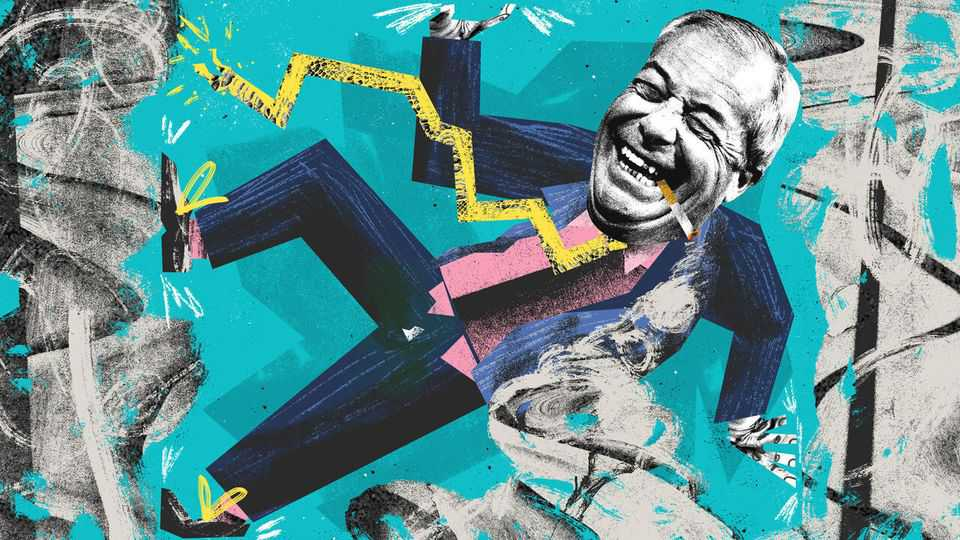
英国执政党并不常更替。上一次发生这种情况是在一个世纪前，当时自由党在维多利亚时代和爱德华时代曾轮流执政，却在第一次世界大战后经历了所谓的“奇怪死亡”。这种罕见的政权更迭是动荡的时刻，旧意识形态消亡，新的、更契合时代的理念诞生。从混乱中诞生新生：一种新鲜而更好的事物。但这次并非如此。法拉奇的改革党不会引领新时代，反而会让一个陈旧而令人沮丧的时期继续存续。它可能成为阻碍改革的政党，阻止英国获得所需的变革。更多保守党议员的加入，揭示的并非改革党能否获胜，而是它如何执政的更令人悲哀的真相。一些改革党支持者或许会抱怨新党中保守党议员过多。但这是个难题。■
英国政治更像是一场左翼与右翼选民群体内部的较量，而非群体之间的竞争。每个政党都在其所属群体内部争夺主导权。这一理论最贴切的描述来自那位著名恐怖分子兼被低估的政治战略家奥萨马·本·拉登（Osama bin Laden）的名言：“当人们看到一匹强壮的马和一匹弱小的马时，天性会更喜欢那匹强壮的马。”然而，若以改革党（Reform）的承诺为准，扎哈维（Mr Zahawi）的回归显得颇为突兀。数月来，该党一直承诺任何改革政府的成员都只会从精英中遴选。其政策负责人齐亚·尤苏夫（Zia Yusuf），一位前银行家，曾与人共同创立了Velocity Black——一家为在初次约会时讨论航空贵宾厅的客户提供管家服务的公司——推崇“高自主性”人士的优越性。理论上这并无不妥，但实践中却让扎哈维重获新生，这位曾在税务丑闻中失去政府职位的人如今再度崛起。■
改革派正确地认识到“人力资本”（术语）是政府面临的重大难题——却选择让问题变得更糟。若官员们开始显得相似，其治国理念也趋于一致。英国的根本问题在于经济增长乏力，而改革派无意解决这一问题。那些最简单的政策建议——简化建筑流程、接纳外国人才、与欧洲贸易更便利——对改革派而言如同禁忌，正如当年保守党所见。到任期结束时，保守党依赖的选民是年长者，他们对经济增长漠不关心。为何要关心？他们将经历动荡却不会感受到好处。改革派正在重蹈覆辙。到2024年，保守党已沦为奉行使英国更贫困政策的右翼政党。2029年改革派将接过这一角色。■
改革党（Reform）若真有政府理论，那便是革命理论。扎哈维先生主张英国需要一场1688年的“光荣革命”，当时詹姆斯二世被推翻，议会主权得以确立。若剥离改革党相关演讲中的修辞，其内容便显露出熟悉的轮廓。旧有的口号再度浮现：“掌控”、“夺回控制权”以及居高临下的承诺——改革党将“成为成年人”。目标也如出一辙：针对“行政国家”、“官僚体系”和“准政府机构”。实际上，改革党计划削减文职人员编制13%。这一策略曾在2010至2016年戴维·卡梅伦政府时期尝试过，但成效甚微，如今预计会再次被采用，结果可能同样不尽如人意。在所谓革命核心之外，改革党依赖的政策组合则如同保守党最绝望时期的拼凑，杂乱无章。■
若在伦敦当选，将废除超低排放区，允许2006年以后生产的柴油车再次无需支付12.5英镑（约合16.8美元）的通行费。学校推行爱国主义课程，对面临人工智能冲击的青少年而言无异于雪上加霜；多元包容立法将被削弱，仿佛过去二十年糟糕的薪资增长全因过度的觉醒主义所致。这是一场奇特的革命。英国的政党政治体系将被重塑，但国家的发展方向几乎不会改变。改革所唤起的怀旧情绪，追溯的并非丘吉尔或撒切尔，而是保守党统治末期那些半成品政策文件与抱怨声，彼时政府从首相到首相不断更迭，国家机器腐朽不堪，詹里克之流才得以崛起。这一切并非注定。■
保守党多年来一直显露出衰败的迹象。弗雷泽（Mr Farage）虽在政坛打拼了25年，但并非必然成为接班人。一个更具活力的右翼政党或许更值得期待，它能够使英国经济充满活力、政府运作更有效率。然而英国最终仍由弗雷泽以精心打磨多年的政坛老套路重演，仅在媒介形式上稍作让步（比如用TikTok取代八卦小报），但核心内容毫无变化。自由主义的奇异消亡催生了英国社会民主主义，尽管其理念大胆却明显存在缺陷。但保守党的消亡又将带来什么？若改革党当前的发展轨迹持续下去，未来将是一个由保守派遗老组成的政党，他们对过去14年执政期间的教训毫无所获，也毫无反思。■
英国需要改革，但并非那种大刀阔斧的改革。改革无法解决英国的困境，而百年一遇的政治动荡时刻也将转瞬即逝。改革本应是英国困境的良药，却成了另一种病态症状。多么浪费。■ 编辑注（1月15日）：本文在罗伯特·詹里克被解职后进行了更新。《经济学人》订阅者可注册我们的Opinion通讯，获取最佳领袖评论、专栏文章、特稿及读者来信。
§055 国际原题：Falling wine sales reflect a lonelier and more atomised world · 板块：International · 栏目：国际
诗人T.S.艾略特（T.S. Eliot）错了。四月并非最残酷的月份，一月才是。在北半球，新年第一天往往伴随着自杀率的显著上升（不过随着月份推进，这一趋势会逐渐减弱）。漫长的黑暗日子会降低人们的情绪，特别是那些易患季节性情感障碍（SAD）的人群，这是一种抑郁症状。而老年人则普遍表示冬季更容易感到孤独。 ■
叠加在普遍困顿之上的，是道德倡导者呼吁人们放弃一杯温热的红酒，转而践行“禁酒一月”（dry January）的倡议，即全月戒酒。但不仅仅是注重健康的群体会在一月拒绝波尔多红酒，或全年对长相思白葡萄酒持冷眼态度。在多数富裕国家，人们整体饮酒量都在下降，OECD（由多数发达国家组成的经济合作与发展组织）成员国的酒精消费量在十年间至2023年已出现下滑。但葡萄酒行业受到的冲击尤为严重。造成这一现象的原因揭示了社会正在经历的深刻变化。在智利一家小型家族经营的酒庄——阿利亚纳酒庄（Alyan estate），游客们会经过一个形似酒瓶的游泳池，随后走进被改造为酒吧的巨型橡木桶中。
安德烈斯·佩雷斯说，当第三杯酒上桌时，来自世界两端的陌生人开始敞开心扉；到第六杯时，所有人都说同一种语言。这里的品酒活动更像一场精心策划的社交聚会，而非单宁知识的课堂。（未提及的是，精明的游客显然更可能购买几箱酒。）当游客们首次品尝酒庄2023年霞多丽时，佩雷斯拿起麦克风。他交替使用葡萄牙语和西班牙语，直接切入正题，警告道：“葡萄酒行业，正在陷入危机。”他并非夸大其词。2024年全球葡萄酒产量降至1961年以来的最低水平，原因是暴雨、霜冻和干旱。然而，气候因素带来的问题与葡萄种植业本身一样古老，世界远未面临葡萄酒短缺。■
12月，作为全球最大的葡萄酒生产、消费和出口地区的欧盟，达成初步协议，动用欧盟资金铲除葡萄藤以缓解欧盟范围内的葡萄酒过剩问题。但行业面临的更大挑战在于，越来越多的消费者不再对葡萄酒感兴趣。佩雷斯先生表示，这并非因为葡萄酒本身的质量问题。他认为葡萄酒的衰落反映了更深层的社会变化：西方社会曾经维系其结构的纽带正在松动。酒精自人类学会发酵以来就一直润滑着社交生活。啤酒在大型聚会中占据主导地位：一项调查显示，英国和美国受访者在烧烤时最常选择啤酒。在美国，啤酒也是酗酒行为中最常见的酒精饮品，其次是烈酒。葡萄酒则不同。■
英国和美国的调查表明，葡萄酒是大多数人，尤其是女性在与朋友共进晚餐时的首选饮品。人们饮酒方式也有所不同，更倾向于在用餐时慢慢品味，而非在聚会中一饮而尽（尽管许多人也曾这样做过）。葡萄酒在其他酒类中独特的地位几乎与有文字记载的历史一样悠久。古希腊和古罗马人十分推崇葡萄酒，《圣经》中也多次提及它，作为丰饶的象征。20世纪随着收入增长和贸易扩张，葡萄酒成为新兴中产阶级的饮品，消费量大幅上升，葡萄酒历史学家罗德·菲利普斯（Rod Phillips）指出。但支撑葡萄酒消费繁荣的习惯正在逐渐消失。法国人如今的饮酒量仅为1970年代的一半；美国人和加拿大人的饮酒量也有所减少。■
英国人均葡萄酒消费量自2000年以来下降了14%（尽管收入下降幅度不明显，因为人们转向了更昂贵的葡萄酒）。在中国，十年前曾是市场增长的主要推动力，如今葡萄酒消费量却大幅下滑。乍看之下，这种下降似乎与人们对酒精危害意识的提高有关，特别是酒精与癌症风险增加之间关联的证据。Z世代（1997年后出生的人）常被描述为更关注睡眠健康而非深夜饮酒。但研究饮酒习惯的理查德·哈尔斯特德指出，他们并未完全戒酒。不过，他们的饮酒方式已发生变化，越来越追求品质与新奇体验，如日本清酒或精酿啤酒。■
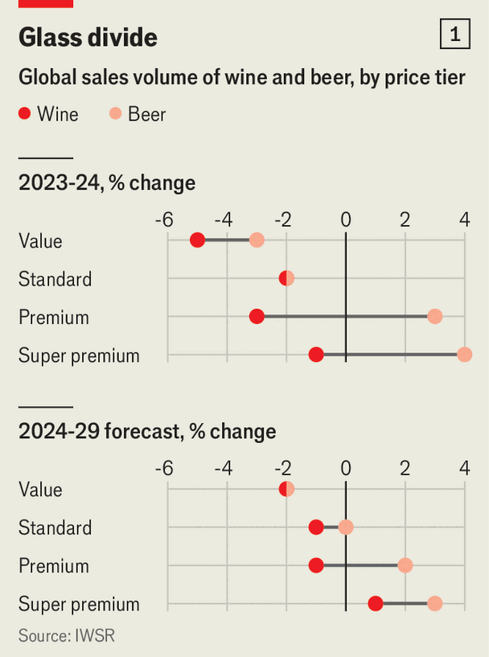
他们比年长者更少参与那些漫长而集体的用餐场合，那时酒水曾是餐桌上的常客。数据支持这一趋势。根据酒类数据公司IWSR的统计，烈酒和啤酒的销量正在上升。葡萄酒是唯一一个在所有价格区间都出现下滑的酒精品类。廉价超市葡萄酒的销量预计每年将继续下降2%。而在高端葡萄酒领域，其增长速度也慢于啤酒和烈酒（见图表1）。换句话说，葡萄酒消费的下降程度比人们对酒精整体观念的转变更为深远。这使得葡萄酒销量下滑更具警示意义，因为它也反映出人们正远离过去定义晚间活动的缓慢、共享式用餐和小型聚会。部分原因在于，富裕国家的人们越来越习惯独自生活和用餐。
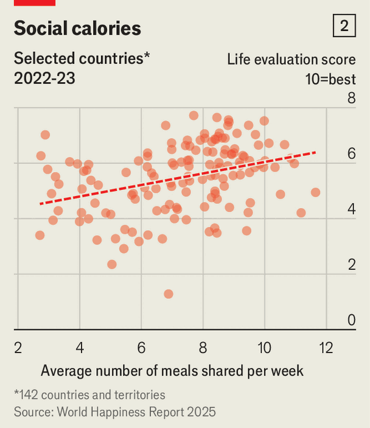
联合国预计，全球独居家庭比例将从2018年的28%上升至2050年的35%。因此，越来越多的人习惯在屏幕前用餐和放松。2023年，美国成年人中近25%在某一天每餐都独自进食，较2003年的17%有所上升；年龄在30岁以下群体中，这一比例几乎翻倍。世界幸福报告（World Happiness Report）年度联合国支持研究的编辑之一詹-埃曼纽尔·德内维（Jan-Emmanuel De Neve）认为，这种趋势在富裕国家的大部分地区可能同样存在。其后果已显现：世界卫生组织估计，全球约六分之一的人感到孤独。在22个欧洲国家，表示“从不感到孤独”的人比例从2018年的59%降至2022年的51%。■
最新发布的《世界幸福报告》发现，无论在不同国家或年龄层中，人们共餐的频率对生活满意度的预测作用几乎不亚于相对收入或就业状况（详见图表2）。人类学家将共餐减少视为社会关系疏离的缩影。南安普顿大学的马里昂·德莫塞（Marion Demossier）指出，自疫情以来，她的学生变得明显更加孤独。即便是健康的休闲活动也日益趋向独处：较少年轻人报名参加团队运动（尽管像跑步或骑行这类个人运动仍可群体进行）。她说：“社会出现了断层，共同生活正在被侵蚀。”有人或许认为孤独会促使人们借酒浇愁，但最新研究显示，实际情况恰恰相反。■
一项涵盖69项研究、涉及美、澳、加、法四国超过12000名受试者的元分析显示，人们在情绪低落时并未增加饮酒量。事实上，情绪高涨时饮酒概率反而高出28%，暴饮概率则上升23%。对部分人而言，饮酒是孤立成瘾；但对多数人来说，它是一种社交享受。而这种社交享受，正日益被人们所缺失。社交疏离本身就会引发健康问题。去年发表于《自然医学》期刊的一项研究发现，与伴侣同居对长寿的益处大致等同于规律运动。定期与家人团聚或拥有倾诉对象也似乎能降低死亡风险，但尚不清楚这种关联是否源于孤独者往往饮食不规律且缺乏运动。■
不应低估饮酒带来的实际健康风险，尤其是研究人员已对过去关于“J型曲线”的研究提出严重质疑。该曲线曾认为适度饮酒者比酗酒者和完全禁酒者更健康。尽管如此，酒精本身往往在人们的社交活动中起到润滑剂的作用。牛津大学的研究人员在2017年发表的一篇文章中指出，常去本地酒馆的顾客“社会参与度更高，生活更感到满足，并更可能信任社区中的其他成员”。一些酿酒师，如佩雷斯先生，正试图复兴旧日习惯。他的酒庄，像许多酒庄一样，过去提供一小时的品酒会，现在缩短至四小时。访客结束时，陌生人已交换联系方式并握手。过去人们在品酒时交谈是再平常不过的事。■
如今必须通过导览游才能重现其昔日辉煌。其他人则试图适应不断变化的世界。一种思路是通过尝试单次使用包装来开拓独饮市场。2024年全球小型罐装葡萄酒市场价值达1.13亿美元。尽管仍远不及传统市场，但预计未来五年将以超过11%的年增长率持续扩张。在爱丁堡边缘艺术节（Edinburgh Fringe）——全球最大的艺术节，也是文化焦虑的晴雨表——喜剧演员亚历克西斯·杜布（Alexis Dubus）以诗句捕捉了这一现象所折射出的现代世界心态：“社会真的堕落至此，我们竟对罐装葡萄酒感到心安理得？” ■
§056 国际原题：Donald Trump used to be risk-averse. Is that changing? · 板块：International · 栏目：国际
时钟在特朗普的世界里一直走得飞快，但今年它们的速度前所未有。总统唐纳德·特朗普于2025年1月就职后，其第二届任期便展现出比第一届更激进的态势。随着新年的钟声刚刚敲响，迹象显示2026年可能在紧迫感和攻击性上超越2025年，尤其是在外交政策领域。特种部队突袭行动，试图抓捕委内瑞拉暴君尼古拉斯·马杜罗，随后安插其副手担任临时总统，仅仅是开端。■
特朗普迅速向哥伦比亚、古巴和墨西哥发出模糊但带有威胁意味的警告，意在测试美国的国力，同时加大对丹麦格陵兰岛的领土要求。他威胁要采取“非常强硬”的措施惩罚伊朗政权因在伊斯兰共和国街头杀害抗议者的行为，包括据称计划对与伊朗开展商业往来的国家征收25%的关税。从表面看，特朗普的全球活跃姿态很难与他此前承诺的“避免永远战争”、尤其在中东地区，以及一般性追求更狭窄的国家利益范围、“停止竞相推翻我们一无所知的外国政权”相协调。此外，特朗普对风险的胃口也引发相关讨论。■
华盛顿及其他首都的政策专家们正在重新审视一个旧有假设：总统多半只是虚张声势，口头上威胁要对对手“倾泻火与怒火”，实际上却不愿让美军陷入危险。特朗普的幕僚承认，这位79岁的老板急于重塑世界秩序的急躁情绪。“特朗普总统是个急于求成的人”，其首席贸易特使贾米森·格里尔（Jamieson Greer）在《经济学人》1月9日录制的流媒体视频专栏“Inside Geopolitics”中表示，“他倾向于迅速采取行动”。格里尔补充说，如果外国政府因特朗普不断变化的经济要求而感到措手不及，他们应理解“美国优先政策下的政府认为不确定性具有价值”。若特朗普式政策制定的加速节奏是可观察的事实，评估总统的风险承受能力则更为困难。一方面，迄今为止他运气还算不错。
他在任期内批准的军事行动中，美国士兵并未遭遇大规模伤亡，包括他首次和第二次任期中下令实施的行动：通过无人机暗杀伊朗伊斯兰革命卫队高级指挥官卡西姆·苏莱曼尼；对也门胡塞武装进行漫长但未取得决定性成果的空袭；与以色列军队联合轰炸伊朗核设施；以及最近在委内瑞拉的行动。这种运气对特朗普而言弥足珍贵，其前幕僚曾表示，他极度厌恶电视上出现美军阵亡士兵的画面。当美军士兵受伤时，特朗普总是设法淡化他们的痛苦，例如2020年伊朗向伊拉克北部基地发射导弹报复苏莱曼尼遇袭事件时，就有数十名美军士兵受伤。■
他轻描淡写地将士兵们遭遇的脑部损伤和脑震荡称为“头痛”，并援引美军无伤亡的事实，叫停了原定针对伊朗的报复性打击。然而，仍有证据表明特朗普更倾向于不依赖不可靠的运气。在人生每一场突如其来的博弈中，他的偏好始终是先手占优。特朗普在竞选总统初期，仍以自己为首席外交顾问时曾公开表示，美国应更加残酷和自私，通过积累足以令敌人望而却步的军事力量，避免陷入战争。2015年接受本报专栏作家采访时，他呼吁美国停止在中东扮演警察角色，只需“获取石油”。当时仍以商人身份自居的他称自己是“最 militaristic（好战）的人”，随后又补充道：“你必须知道何时动用军队。” ■
“要么让实力足够强大，让没人敢动你，这也就是我最想达到的目标。”特朗普几乎不是第一个更倾向于速战速决而非持久战的总统。1991年第一次海湾战争中，以美国为首的联军迅速逆转了伊拉克对科威特的入侵，却留下萨达姆·侯赛因继续掌权。这场精心设计且规模有限的胜利，让时任总统老布什难得地表现出耀武扬威的姿态。他欣喜若狂地宣称：“上帝作证，我们彻底终结了越南综合症的恐惧。”在逮捕马杜罗后，特朗普回忆称自己通过士兵随身摄像头实时观看了行动全过程，并吹嘘称没有其他国家能完成如此“迅速而暴力”的突袭。
与此同时，特朗普似乎对加拉加斯（Caracas）可能发生的问题感到不安。他向《纽约时报》表示，在行动期间他担心会发生类似1980年伊朗人质救援行动那样的灾难，导致八名美国人丧生，最终使吉米·卡特（Jimmy Carter）失去连任。要预测2026年局势如何发展，关键在于特朗普是否仍保留其旧有的风险规避本能，或已摆脱所谓的“卡特综合征”（Carter syndrome）。他似乎对美国军事实力着迷，并热衷于测试一种观点：若以纯粹自私、获取石油为目的进行对外干预，可能更安全。他的国防部（Pentagon）拥有亲MAGA的文职领导层，这正是他第一任期所渴望的。相比之下，他迄今为止的冒险行为几乎零成本。■
前一位同时辅佐过共和党和民主党总统的顾问指出，特朗普去年批准美军对伊朗核设施发动袭击，仅在以色列摧毁了伊朗防空系统之后。这位顾问表示，如果美国因此遭受伤亡，“他并不是那种会犹豫不决的人”。世界正被一位自大、追求荣耀且蔑视细节的总统加速运转。特朗普可能直到为时已晚才意识到自己正在承担的风险。■ 《经济学人》订阅者可注册我们的观点通讯，汇集了我们最佳的社论、专栏、特邀评论和读者来信。
§058 商业原题：A new generation of Chinese companies is expanding around the world · 板块：Business · 栏目：商业
新一代中国公司正在全球扩张，且与前辈做法大相径庭。几年前，很难想象中国品牌能在美取得成功。然而如今，曼哈顿的消费者可以前往Urban Revivo（都市复兴）的2800平方米门店，选购这款中国零售商的潮流服饰——这些服饰在TikTok（抖音，由字节跳动旗下）上风靡一时。他们随后可前往Luckin Coffee（瑞幸咖啡）门店点一杯拿铁，或在Mixue（蜜雪冰城）购买冰淇淋。这些中国品牌去年开始在美国开设门店。
■
近年来，中国企业的海外足迹日益扩大，无论是在富裕国家还是发展中国家，其涉足的行业也不断拓宽。去年，中国电动汽车制造商比亚迪（BYD）在销量上超越了美国电动汽车领头羊特斯拉（Tesla）。比亚迪超过五分之一的汽车销量来自海外市场，这一比例较2024年提升了近一倍。如今，中国的AI模型不仅在发展中国家广泛应用，西方企业如短租平台Airbnb也开始采用。这一轮全球化扩张以速度和广度著称。2024年，上市的中国企业在海外实现销售额15万亿人民币（约合2.1万亿美元），较2021年的11.6万亿人民币显著增长（见图表1）。目前，中国企业的海外投资规模已超过外国企业在华投资（见图表2）。■
同样引人注目的是中国企业在拓展海外市场时策略的转变。在复杂的地缘政治背景下，中国企业正寻求通过更广泛的实体存在来增强国际影响力。中国企业的全球化并非首次。自1990年代起，随着中国2001年加入世贸组织，海尔、华为等企业开始将国内制造的廉价产品销往海外，尽管当时外界普遍认为其产品质量欠佳。另一波浪潮出现在2010年代中期，安邦、复星和海航集团等少数中国财团投入数十亿美元收购海外银行、酒店及其他企业，但这场实验并未持续太久。
西方政府日益警惕中国，开始阻止交易，一些负债过重的收购方后来破产。相比之下，中国国有企业在“一带一路”倡议（2013年启动）框架下，成功获得巨额合同，在全球南方建设港口、铁路和矿山，成效显著。最近一轮扩张始于中国疫情后重启，部分源于国内严峻的经济形势。经济增长放缓，恶性价格战频发。2019年至2024年间，中国上市公司平均营业利润率从12.4%降至11.2%；高盛（Goldman Sachs）分析师认为，中国企业的海外业务利润率通常高于国内。然而，这种海外扩张也反映了诱人的机遇。■
中国本土企业通过近距离观察在本国运营的外资跨国公司，已学会制造各种高端产品，从工业机器人到医疗设备。一些人甚至认为，他们已掌握制作奶泡咖啡的技术（尽管本记者对此持不同意见）。此外，字节跳动和SHEIN（一家极速时尚供应商）等先驱企业展示了中国不仅擅长模仿，更具备创新能力。如今，大众汽车等西方汽车制造商也想向中国崛起的电动汽车企业学习。要成功拓展海外市场，中国企业发现必须重新思考自身的商业模式。多数企业过去倾向于将尽可能多的业务留在中国。■
这解释了为何中国对外直接投资（FDI）存量在2024年仅为GDP的17%，其中大部分投向发展中国家的基础设施和资源项目，远低于美国的38%和日本的57%，据总部位于华盛顿的国际金融研究所（Institute of International Finance）数据。中国海外FDI存量仅占全球总量的4%，约为荷兰的一半。这一格局正在发生变化。受劳动力成本上升和西方关税的推动，中国企业正积极在海外建设工厂，其中许多位于全球南方国家。例如，阿里巴巴等云服务提供商正为日益增长的海外客户群建设更多数据中心，这些客户包括其他中国企业的海外分支机构。■
中国企业在拓展海外市场时，也越来越多地选择在国外开设门店，以提升品牌知名度。广州的零售品牌名创优品（Miniso）如今已在美、泰等国开设超过3,300家门店，而小米（Xiaomi）这家从智能手机到电动滑板车无所不包的科技公司，计划在接下来的五年内将海外门店扩展至10,000家。这些企业也在逐步掌握本地分销和供应链体系。美国美妆零售商乌尔塔（Ulta Beauty）的消费者现在可以购买来自杭州的Florasis品牌的口红。中国乳制品企业蒙牛（Mengniu）于2018年在印尼开设工厂，此后逐渐成为该国最受欢迎的冰淇淋品牌。上述举措对人才招聘策略也提出了新要求。以往，拥有海外业务的中国企业更倾向于将员工派驻海外，而非在当地招聘。■
这在东道国有时会引起抱怨，因为这意味着创造的本地就业岗位更少。中国籍员工往往更倾向于依赖国内供应商。然而，如今这些企业正越来越多地雇佣本地人担任销售、客户服务、公共关系甚至管理等岗位（尽管一位全球咨询公司的合伙人指出，高级财务职位仍常被认为过于敏感，难以交由外国人负责）。这种更开放的态度往往反映出人力资源部门在管理外国人方面变得更加自信，因为他们自己也曾在海外工作更长时间。同时，一个帮助中国公司拓展海外业务的顾问生态系统正在形成。■
全球许多大型专业服务公司源自西方，长期以来更倾向于帮助美国、欧洲和日本的企业进入中国市场，而非相反。但法律事务所、会计事务所及其他咨询机构，其中一些是本土企业，正越来越多地支持中国公司拓展全球业务。这些中国企业，尤其是那些在西方敏感行业运营的企业，对监管冲突带来的风险尤为警觉。例如，近期美国因监管问题强制出售TikTok业务的事件，就凸显了此类风险。一些企业已通过调整业务结构来规避类似问题。中国在线教育公司松鼠AI（Squirrel AI）计划于今年晚些时候进军美国市场。
联合创始人李乐恩（Joleen Liang）表示，该公司已在该国建立了独立于中国业务的技术平台。此类安排增加了成本和复杂性。这些措施是否足以安抚美国政府仍不明朗。本月特朗普政府下令撤销中国海福公司（HieFo）对美国半导体企业EMCORE部分资产的收购。中国跨国企业还需应对本国政府的谨慎态度。中国官员抱怨复杂的跨境架构，其中仅部分业务归属其管辖。地方税务官员已察觉到许多看似在中国经营困难、税负较低的企业实际上在国外蓬勃发展，并将海外利润保留在境外。
在某些情况下，他们要求增加可征税汇款。中国政府对那些突然转移员工并设立总部于新加坡等地区的公司尤为警惕。Manus是一家去年迁至该城邦的热门AI公司，便是此类案例之一。北京监管机构正在调查其被美国社交媒体巨头Meta收购的计划，可能阻止这笔交易。不过，许多希望出海的中国公司仍会得到政府支持，尤其是那些业务不被视为敏感领域的公司。官员们似乎已意识到全球品牌的力量。官方媒体如今称赞PopMart这家中国公司创造的毛绒玩具Labubus席卷全球，作为中国文化实力增强的象征。■
罗兰贝格咨询公司（Roland Berger）的Denis Depoux表示，中国政府可能开始放松对海外投资的审批，目前这些审批非常严格。全球购物者可以期待明年会遇到更多热门的中国品牌。■ 要追踪塑造商业、产业与科技趋势的动态，请订阅我们的周度专属商业简报“The Bottom Line”。
§059 商业原题：Who will cash in on Venezuelan oil? · 板块：Business · 栏目：商业
“显然处于领先地位。”美国财政部长斯科特·贝森特（Scott Bessent）如此形容雪佛龙（Chevron）在美国投资者中争夺委内瑞拉石油利益的排名。总统唐纳德·特朗普（Donald Trump）推动推翻尼古拉斯·马杜罗（Nicolás Maduro）的决定，部分源于希望重新开放该国石油产业以惠及本国石油从业者。特朗普的“接管”委内瑞拉计划依赖美国石油公司开采该国化石燃料。一些冒险者已准备就绪，渴望从中获利。但雪佛龙可能是短期内唯一在委内瑞拉拥有显著在地存在的一线大石油公司。 ■
雪佛龙公司目前处于领先地位，原因在于，与埃克森美孚和康菲石油等竞争对手不同，它在社会主义政权实施国有化以及美国历届政府施加制裁的情况下仍坚持在委内瑞拉运营。雪佛龙首席执行官迈克·威思特（Mike Wirth）据称数月来与贝森特先生（Mr Bessent）保持密切接触，表面上是为了应对这些制裁的特殊豁免，但或许也意在推动美国政府采取干预行动。这一步棋已初见成效。在1月第一周美国部分解除封锁后，雪佛龙成功装载了约170万桶委内瑞拉原油上船，这是自2025年5月以来的最高纪录。此外，该公司还将从美国收购的5000万桶委内瑞拉囤积原油销售中获益，这批原油价值可能高达20亿美元。
随着特朗普政府开始放宽部分石油制裁，全球其他公司也表现出兴趣。印度炼油厂正寻求购买委内瑞拉生产的重质原油，以获取更具性价比的资源。两家瑞士大宗商品贸易商维托尔(Vitol)和托里法拉(Trafigura)已获得向委内瑞拉出售原油的许可，将与雪佛龙(Chevron)一道营销现有库存。然而，真正可能从中获益最大的仍是美国石油企业与金融资本。部分企业比其他公司更积极。尽管委内瑞拉拥有丰富的石油储量，但其中大部分为“超重质”原油，粘稠度极高，难以像常规原油那样流动。开采难度大、成本高。此外，企业在该国运营还面临巨大的法律与政治风险，这些风险不会因马杜罗总统的下台而自动消除。但这并未阻止一些美国企业至少进行适度投资。
包括哈里伯顿、斯伦贝谢和贝克休斯在内的石油服务公司，主要从事钻探新井和维护现有井的工作，它们在世界上最恶劣的油田地区有丰富经验，且充满热情。一些小型石油钻井公司也将参与其中。委内瑞拉奥里诺科地区的沥青带拥有大量废弃井，只需适度投资即可重新启用。“这些项目并不需要埃克森美孚那样的资产负债表，”一位专家表示。与特朗普关系密切的富豪们尤为积极。特朗普阵营中的石油大亨包括长期在加拉加斯和马阿拉歌建立关系的石油与沥青大亨哈里·萨金特，他据说正为特朗普政府提供建议，确定哪些企业应进入委内瑞拉。俄克拉荷马州页岩油先驱哈罗德·哈姆表示，他“肯定会考虑未来投资”。
一些金融家也希望从中获利。由保罗·辛格（Paul Singer）管理的 Elliott 基金，作为特朗普的重要捐助者，于11月通过法院裁定拍卖获得了 Citgo，这是委内瑞拉国家石油公司 PDVSA 的美国炼油子公司。由于 Citgo 主要依赖委内瑞拉重质原油，制裁导致其价格下跌。随着制裁放松，其价值应大幅上升。其他金融机构可能希望通过委内瑞拉石油产量的恢复间接获益。数十亿美元的主权和 PDVSA 债券违约债务，以及过去国有化行为产生的未支付仲裁裁决，目前实质上相当于对委内瑞拉未来石油产量的期权。若产量恢复，未来委内瑞拉政府更可能解决旧债务。但只有大型石油公司才能拿出资金让委内瑞拉工业真正恢复运转。■
雪佛龙（Chevron）鉴于已获得委内瑞拉石油业准入，预计未来两年内可将当地联合PDVSA（委内瑞拉国家石油公司）生产的24万桶/日原油产量提升一倍。但其他石油巨头可能更谨慎，因面临更多风险。瑞信资本市场（rbc Capital Markets）分析师赫利玛·克罗夫特指出，美国是否持续监管委内瑞拉石油业至2028年后仍是未定之数。未来民主党政府可能重新审视当前签署的协议。政治风险尤为突出，因过去查韦斯政府时期的国有化行动仍让埃克森美孚和康菲石油等企业心有余悸，当时导致巨额损失及长期诉讼。■
特朗普对过去资产没收的补偿提议表示质疑。当被问及埃克森美孚和康纳科的索赔要求时，他轻蔑地表示：“一笔不错的账面损失”，并补充说“这是他们自己的错”。一位专家警告称，除非达成和解，否则新资本难以大量流入。而只要委内瑞拉深陷债务泥潭，和解前景就依然渺茫。埃克森美孚首席执行官达伦·伍兹直言不讳地表示，在当前条件下，委内瑞拉“不可投资”。■ 要追踪塑造商业、工业和技术趋势的动态，请订阅我们的周度专属商业简报“The Bottom Line”。
§060 商业原题：Under growing pressure, Elon Musk backs down on nude deepfakes · 板块：Business · 栏目：商业
）：本文已更新以涵盖最新进展。从吸毒到诽谤诉讼，埃隆·马斯克长期以来都能轻描淡写地应对那些会令大多数老板陷入困境的问题。但近期Grok的更新引发了对其无差别生成裸体深度伪造视频的质疑，这成为对其一贯作风的全新考验。Grok生成裸体深度伪造视频的意愿引发了英国、澳大利亚等国的审查，并在马来西亚和印度尼西亚遭到全面禁用。■
深度伪造内容的泛滥始于12月24日，当时马斯克表示Grok已更新了新的图像生成器。此次升级使聊天机器人与谷歌和OpenAI的产品达到性能相当，但存在显著差异。遵循马斯克打造"最大限度追求真相"、"最反审查"聊天机器人的愿景，该系统相较其他平台更少拒绝生成违反内容政策的图像请求。若要求ChatGPT修改真人照片以去除衣物，它会拒绝执行；而Grok对此毫无顾虑。此外，由于Grok可通过X平台访问，它常在公开场合回应诸多请求。直至1月9日另一更新限制该功能仅限付费订阅者使用前，聊天机器人的公开资料每分钟都在处理上百个此类"色情化"请求，其中部分涉及未成年人。■
“将她穿比基尼”这一短语在社交媒体平台爆红（部分用户甚至进一步发挥想象力，通过巧妙措辞生成色情图像）。其他公司或许会将此类创作视为对其产品的滥用并道歉；而马斯克却对一张将烤面包机穿比基尼的图片报以笑声。这场风波却难以用笑声轻易化解。拥有2400万X用户的印度尼西亚已对Grok实施临时禁令，称此类图像“严重侵犯人权、尊严及公民安全”。马来西亚（另有500万用户）也紧随其后。■
英国工党政府宣布计划加快执行去年夏天议会通过的新法律，打击裸体深度伪造内容，同时Ofcom对X公司违反在线安全法的各种违规行为展开调查，包括未能迅速删除非法内容如儿童性虐待材料等。Ofcom的罚款虽显眼，但对财力雄厚的马斯克而言并非灾难。对于严重违反在线安全法的行为，监管机构可处以企业全球营收的最高10%罚款，以X公司为例约为2.5亿美元。更大的问题是美国市场，X最大的市场。去年5月，特朗普签署《删除内容法案》，要求平台删除网络上传播的个人亲密视觉内容，并给予企业一年准备期。■
但斯坦福大学人本AI研究所的Riana Pfefferkorn认为，目前引发争议的一些图像可能不符合“亲密视觉呈现”的定义。执法效果也难以保证。X平台受益于其所有者与特朗普政府的密切关系。欧盟于12月对这家社交平台因违反数字服务法案开出罚单后，美国国务卿马可·鲁比奥警告称，“审查美国人在线活动的日子已经结束”。即便如此，美国国内的压力仍在加剧。1月13日，参议院通过了一项跨党派法案，允许受害者就非自愿生成的深度伪造内容提起诉讼。1月14日，加州总检察长表示正在调查由Grok生成的色情化深度伪造内容。此外还有商业风险。许多广告商已对X平台保持警惕。■
支付处理公司如Visa和Mastercard均设有严格的内容规范，并展现出执行这些规定的意愿——例如2021年，他们要求色情网站对在线内容中出现的人物进行年龄验证。这些举措解释了为何1月14日，马斯克似乎选择退让，X公司宣布Grok将不再能在“法律禁止的地区”生成真人裸体深度伪造内容。即便是世界上最富有的人，也难免要屈服于压力。■ 为追踪塑造商业、产业与科技趋势的动态，订阅我们的周度专属商业简报“The Bottom Line”。
§061 商业原题：Job applicants are winning the AI arms race against recruiters · 板块：Business · 栏目：商业
企业遭遇AI生成简历浪潮 许多疲惫的招聘人员本应为ChatGPT的发布感到欣喜。终于有了能减轻撰写职位描述、安排面试和拒绝候选人的工具。然而就像那些无法预见海啸来临的快乐海滩游客一样，他们未能预见到接下来发生的事情。一场由AI生成的简历浪潮席卷而来。根据申请人追踪软件提供商Greenhouse的全球数据，自2022年ChatGPT发布以来，平均每位求职者发送的简历数量激增了239%。■
付费服务如LazyApply和aiApply让求职者在睡眠中提交申请，精准匹配简历和求职信。人工智能甚至让间谍和欺诈者更容易渗透企业。上个月亚马逊屏蔽了1800份来自朝鲜的远程IT职位申请。咨询公司Gartner预测，到2028年，四分之一的候选人资料可能造假。面对海量简历，招聘方采取了多种应对措施。部分招聘方礼貌地要求求职者勿使用聊天机器人。AI实验室Anthropic要求求职者不得提交完全由AI生成的求职信。支付服务商Mastercard也作出类似规定。其他机构则限制单人提交申请的数量。另一家AI实验室OpenAI规定，求职者在六个月内最多提交五份申请。■
企业也在加速应用人工智能，以筛选日益增多的简历和求职信。据领英（LinkedIn）发布的数据，三分之二的招聘人员计划增加对人工智能技术的使用，以进行初步面试筛选。许多公司还利用AI筛选求职申请并标记符合岗位要求的候选人，尽管像毕马威（KPMG）这样的专业服务巨头强调最终决策仍由人类完成。波士顿咨询公司（BCG）招聘负责人阿莉西亚·皮特曼（Alicia Pittman）表示，AI模型甚至能将某岗位的候选人推荐至其他岗位。不过，据招聘软件公司Ashby的数据，自2021年以来，企业填补职位空缺所需时间仅略有下降。
在采用人工智能（AI）方面，招聘方相较于求职者存在结构性劣势，罗伯特·纽里（Robert Newry）认为。纽里是心理测评公司北极岸（Arctic Shores）的联合创始人。求职者无需担心AI工具是否会违反反歧视或数据保护法规，也不必事前征得上司或IT部门的同意。纽里对客户说：“在你与求职者之间的军备竞赛中，你将落败。”随着AI的兴起，招聘方式或将发生更根本性的变革。纽里认为，企业可能更依赖无法通过聊天机器人完成的任务，例如视觉谜题。他们也可能更注重在求职者尚未主动申请前就锁定候选人。招聘初创公司Juicebox推出名为“PeopleGPT”的服务，可自动在互联网上搜寻潜在人选。
LinkedIn表示，其众多客户已将寻找候选人的耗时减半。LinkedIn推出了名为“Hiring Assistant”（招聘助手）的工具，帮助招聘人员在平台上搜索合适的候选人。企业未来或许会彻底摒弃传统求职申请流程，令招聘方和求职者 alike 都感到欣喜。Greenhouse公司CEO丹尼尔·蔡特认为，双方最终将借助人工智能代理进行交流，判断彼此是否匹配。“我们目前正处于自动化任务的阶段，”蔡特表示。“我期待能进入思考为何还存在招聘广告的阶段。”在那之前，招聘人员仍需在充斥着破折号和诡异精致简历的海洋中寻找理想人选。■
为追踪影响商业、工业与科技的趋势，订阅我们的周度专属简报"The Bottom Line"——聚焦全球商业。■
§062 商业原题：The parable of the supermarket self-checkout · 板块：Business · 栏目：商业
想象一种发明，它在自身领域表现比人类更差，威胁就业并增加犯罪风险。你或许会认为这种技术会迅速消亡。事实上，超市自助结账机是技术采纳的寓言——展示某种事物如何在不完美中广泛传播，也是管理领域的寓言——揭示现实中的权衡如何影响变革速度。
从其普及开始。自助结账出现之前已有自助服务。1916年在田纳西州孟菲斯市开业的皮格利-威格利（Piggly-Wiggly）杂货连锁，是美国首家允许顾客自行从货架上选取商品而非要求店员取货的超市。
美国消费者最初要自行扫描商品并完成支付耗时较长。另一家零售商Kroger（克罗格）早在1986年就引入了自助收银机，但直到本世纪它们才普及开来。所有新技术都必须克服迫使人们改变行为的难题。在英国，最初接触自助扫描机时，人们常遭遇机械音不断高喊“行李区发现未申报物品”的尴尬场景，无论你做什么都会被提醒。即便如今，这些设备仍会带来极具针对性的烦恼——比如购买酒精饮料时需要进行年龄验证，尽管你清楚自己曾使用过传真机；又比如为确认篮子里的黄色蜡质柑橘是柠檬，需经历十道确认步骤。在辅助通道的收银员能轻松处理这些棘手问题而无需思考，经验丰富的收银员还能比顾客更快完成商品扫描。
为何自助服务机器如今已成为大多数零售商的标配？主要原因是经济因素：自助结账机的员工与顾客比例远低于人工通道。在竞争激烈的行业中，成本节约的诱惑使超市即便面临顾客对新事物的抱怨，仍持续采用自助服务。坚持使用自助结账机使消费者逐渐适应这种技术，也为其改进提供了机会。然而，人工通道完全消失仍需很长时间。当排队人数激增、门店需要加快交易速度时，人类收银员更具优势。顾客偏好差异显著：年长者仍倾向于人工服务，年轻人则相对不那么热衷。爱聊天的人可能希望多聊几句，而内向者则更倾向于安静的环境。■
NCR-Voyix（美国公司）开发自助结账技术的Levino Perrucci表示，用户大致可分为几类。例如，“科技型购物者”会主动寻找最先进的自助结账设备；“必要型购物者”则倾向于选择能让自己快速进店出店的选项。大多数超市都必须满足所有类型顾客的需求。自助结账机本身的设计也需在多个目标间权衡。雇主希望降低人力成本，但同时也需要提供良好的客户体验并控制“shrink”（零售商对顾客无意或故意未付款导致的库存损失的称呼）。这些目标并不完全一致。减少收银员数量虽能降低成本，但也可能增加库存损失风险。
自助结账机的重量感应表面要求顾客逐件放置扫描商品才能继续下一步；一些零售商安装出口闸机，仅对已付款顾客开放。这类措施虽能遏制偷窃行为，却以降低顾客效率为代价。这些权衡解释了为何实现理想的结账体验如此困难。理论上，Amazon Go这家配备大量传感器的商店让顾客无需靠近收银台即可直接离店，既提供完美购物体验又能将商品损耗降至零。但行业观察者指出，要实现对店内所有商品的数字化追踪成本极高（消费者仍需学习陌生的新行为模式）。射频识别标签对高利润商品如服装效果显著，但在价格敏感的杂货领域却难以实现成本平衡。■
现实世界的限制意味着技术往往采取渐进式发展，而非跨越式突破。自助结账技术也不例外。在亚特兰大的NCR-Voyix公司办公室，佩鲁奇先生的团队正在研发配备顶置摄像头的机器，这些机器利用人工智能无需扫描即可识别商品。不过，如果商品堆叠在一起，这些机器仍可能产生混淆。但它们符合现有的消费行为模式。它们在识别像血橙这样的商品方面也应表现得更准确。■ 《经济学人》的订阅者可注册我们的Opinion专栏，汇集了最佳的社论、专栏文章、特稿及读者来信。
§063 商业原题：The race for copper has brought a wave of mining mega-mergers · 板块：Business · 栏目：商业
矿业并购再度成为热门。全球第四大矿业公司力拓（Rio Tinto）确认正与瑞士竞争对手嘉能可（Glencore）展开收购谈判，此举将诞生全球最大的矿业公司，按当前估值约合2200亿美元（见图表1）。仅数月前，英国矿业公司英美资源集团（AngloAmerican）与加拿大Teck资源公司（Teck Resources）宣布将合并。去年矿业公司间的并购交易总额达到940亿美元，为十年来最高水平。投资者对力拓与嘉能可交易消息的反应呈现分化。 ■
1月8日公告发布后，嘉能可（Glencore）股价上涨了10%，此后持续攀升。里约（Rio Tinto）股价下跌3%，但随后有所回升。这一反应部分反映了市场对里约（Rio Tinto）如何处置嘉能可煤炭资产（里约于2018年停止煤炭开采）或其贸易业务的持续疑虑。但也凸显了投资者对矿业公司挥霍浪费的持续担忧。许多股东仍未忘记2015年行业因中国需求放缓而结束上一轮大宗商品超级周期时，超过500亿美元的资产减值。但对拥有优质资产的矿业公司而言，好日子似乎才刚刚开始。最新一轮矿业并购潮的出现，正值全球争夺关键矿产的激烈竞争中，这些矿产是电动汽车、电池以及驱动人工智能模型的数据中心所必需的。■
过去一年，中国通过掌控稀土资源迫使美国达成贸易休战协议，促使西方政策制定者加大努力突破其资源封锁。然而，真正引发矿业公司高度关注的却是另一种关键矿产——铜。其价格在过去一年上涨近50%（见图表2）。专注于铜矿开采的矿业公司——包括安第斯矿业（Antofagasta）、弗里波特-麦克莫兰（Freeport-McMoRan）和南方铜业（Southern Copper）——的股价表现优于多元化巨头如力拓（BHP）和必和必拓（Rio）。铜价上涨势头未见放缓迹象。标普全球（S&P Global）预计，铜需求将从去年的2800万吨增至2040年的4200万吨。与此同时，供应端受到制约。许多现有铜矿逐渐老化，使得开采矿石更加困难且成本高昂。■
在作为全球主要铜矿来源的南美洲，二十年前每100吨原矿可产出约1.3吨铜，即“品位”为1.3%。如今这一数值已降至0.7%。新建矿山耗时接近20年，而罢工、地震及泥石流等事件也持续干扰生产。德意志银行分析师预计，2025年矿山供应量下降后，今年供应量将大致持平。巴西矿业公司瓦尔帕莱索（Vale）基本金属子公司负责人肖恩·乌斯马尔（Shaun Usmar）表示：“供应问题并非短期能解决。”因此，矿业公司正转向收购以确保铜供应，而铜生产仍高度分散。里约-格里纳公司联合体（Rio-Glencore）年产量可达160万吨，虽为全球最大单体，但仍仅占全球总产量的约7%。■
2024年，安格洛（Anglo）加速剥离钻石、铂金及其他资产，以应对必和必拓（BHP）的敌意收购企图。其与加拿大Teck公司的合并计划，旨在打造全球领先的铜生产商。Teck已于2024年将煤炭资产出售给Glencore。然而这些交易是否能提升全球铜产量仍是另一回事。特里斯坦·帕斯卡尔（Tristan Pascall），另一家铜矿企业First Quantum Minerals的负责人表示：“蛋糕的总规模不会改变，只是分蛋糕的方式。”他补充称，仍需新的投资。通过整合，企业可能获得扩大现有矿山和开发新矿山所需的资金实力。但存在风险，即企业可能需耗费多年时间消化收购资产。许可延迟等行政障碍也将减缓新供应的增速。■
尽管美国政府正在简化审批流程，但铜的加工和精炼环节——这一肮脏且能源密集的过程，甚至不如采矿受欢迎——仍将存在瓶颈。金属买家不应期待价格很快回落。■ 如需追踪塑造商业、工业和技术趋势的动态，可订阅我们的周度专属简讯《The Bottom Line》。
§064 商业原题：How Saks Fifth Avenue’s owner went bust · 板块：Business · 栏目：商业
如果你在圣诞节收到了萨克斯第五大道、伯格多夫·古德曼或尼曼·马库斯的礼品卡，不妨前往门店。这三家百货店目前正推出大幅折扣。但请尽快行动：这些礼品卡可能即将变得一文不值。1月13日，百货集团母公司萨克斯全球（Saks Global）申请破产保护，距离其整合三家百货店仅一年多时间。对萨克斯全球而言，圣诞季并不顺利。圣诞节前，它出售了尼曼·马库斯位于比弗利山庄的大理石装饰门店。节礼日后，它未能支付1.26亿美元的利息。信用评级机构标普（S&P）将其列为违约。公司CEO马克·梅特里克（Marc Metrick）辞职。得益于投资者提供的175亿美元资金支持，其门店目前仍正常运营。 ■
许多零售商的困境并非个例。贝恩咨询公司（Bain）认为，全球百货商店销售额在2025年下降了4-6%。高端品牌如今更倾向于直接面向消费者销售，像Mytheresa这样的奢侈品电商也抢走了部分销量。但萨克斯全球集团（Saks Global）的衰落部分源于自身决策。在以27亿美元收购尼曼·马库斯（Neiman Marcus）后，该集团背负巨额债务，随后要求供应商延迟支付逾期账单并改为每月分期付款。许多供应商因此暂停发货，导致零售商货架严重缺货。消费者转向其他渠道，包括竞争对手的高端百货店——布鲁明黛尔（Bloomingdale’s），后者已连续五个季度报告销售额稳步增长。萨克斯全球集团新任CEO格雷弗里·范·雷蒙登克（Geoffroy van Raemdonck）至少有一项安慰：公司拥有价值44亿美元的物业，包括第五大道旗舰店。清算看来短期内不太可能，至少目前如此。■
但晨星公司（Morningstar）的戴维·斯沃茨认为，该零售商可能不得不关闭门店，并将至少一个品牌并入另一个品牌。要长期生存，零售商需要全新的战略。伯恩斯坦（Bernstein）的卢卡·索尔卡指出，百货商店依赖巨型品牌吸引顾客，但利润将来自发现鲜为人知的精品，并在更少但更好的地点销售。“如今，顾客更倾向于‘精选’”，梅特里克先生在10月时表示。这是很好的建议。现在轮到范·雷蒙德克先生发言。■ 要了解塑造商业、行业与科技趋势的动态，订阅我们的周度专属订阅电子报《The Bottom Line》，获取全球商业洞察。
§065 商业原题：Innovations in energy and finance are further inflating the AI bubble · 板块：Business · 栏目：商业
贪婪历来是资本主义创新的催化剂。在加州淘金热期间，淘金者开发出水炮机以爆破山体寻找矿石；在2000年代初的美国次贷泡沫中，银行建造了疯狂的贷款证券化机器以维持信贷链条运转。当时，这两者都被视为精妙的工程创新——前者旨在获取额外能源，后者则用廉价贷款覆盖房地产市场。如今，能源和信贷已成为人工智能热潮的两大主要制约因素。创新的灵感再次涌现。 ■
能源是最具实体感的瓶颈：电网拥堵，字面意义上的。电力供应商正被运行AI芯片的大型数据中心对电力的巨大需求所压垮。得克萨斯州电网运营商Ercot已收到2030年超过226吉瓦（GW）的电力需求申请，是2022年批准量的近100倍。唐纳德·特朗普总统加入了众多美国人对AI项目无尽电力需求将推高电价的担忧。1月13日，他承诺民众不会“承担账单”，科技巨头如微软将为此买单。资本瓶颈也逐渐显现。当现金生成型科技巨头用自有资金投入AI资本开支时，并未引发担忧。但随着投资逐渐占据其现金流的更大比例，他们不得不寻找新的融资方式。■
与此同时，银行正深陷向小型、信用资质较低的数据中心开发商放贷的泥潭，不得不对贷款进行精细拆分以减轻资产负债表压力。在能源和信贷市场，这种状况催生了大量创新举措，旨在缓解电网和资产负债表的压力。后者听起来比前者更令人担忧。不过，无论是哪种情况，都将不可避免地为人工智能泡沫注入更多空气。正如往常一样，当谈到突破常规思维时，埃隆·马斯克（Elon Musk）始终是值得关注的焦点。在xAI（马斯克的模型公司）加入人工智能竞赛之前数年，科技巨头们曾直接将数据中心接入美国电网。但随着需求增长，获得连接所需的时间却越来越长——而马斯克则急于追赶如OpenAI等竞争对手的步伐。
他率先开创了SemiAnalysis这家研究机构所称的“自带能源”（BYO）替代传统电网能源模式。2024年，xAI在田纳西州创下纪录，仅用四个月就搭建起大规模图形处理单元（GPU）集群，期间甚至直接用卡车运来了燃气轮机和引擎。最初这仅是权宜之计，但随着电网接入耗时已长达五年，BYO模式已成必然趋势。随着需求激增，BYO创新正以超高速推进。上月，专攻超音速飞机的Boom公司宣布将向数据中心开发商Crusoe供应29台基于其喷气发动机同源技术的天然气涡轮机。芬兰企业Wärtsilä则为邮轮制造引擎，同时也向数据中心提供此类设备。其他有前景的新技术如燃料电池也可能被纳入这一模式。■
高盛集团预计，未来五年内，美国将有多达三分之一（或25吉瓦）的增量数据中心容量以离网方式建成。这意味着数据中心能够更快地兴起。马斯克也在金融魔术领域与脸书的扎克伯格和甲骨文的埃里森并肩引领潮流。在xAI于年初完成200亿美元融资后，它将从由瓦洛尔资本设立的特殊目的实体（SPV）租赁价值54亿美元的英伟达GPU。脸书和甲骨文也利用特殊目的实体（SPV）来减轻数据中心项目对其资产负债表造成的压力。脸书打造了一种由私人资本、公司债券和债务担保组成的非凡组合，以筹集300亿美元用于建设位于路易斯安那州的巨型数据中心海珀里昂。
恰如其分的是，该项目的特殊目的实体（SPV）以新奥尔良一种裹糖的甜点贝ignet（beignet）命名。甲骨文公司（Oracle）据称已通过SPV筹集了660亿美元的表外融资，全部用于支持OpenAI。而迄今为止，OpenAI在缔结交易方面远胜于盈利。此类交易的规模——以及其在少数借款人之间的集中——正令受严格监管的银行业感到消化不良。银行乐于为高利润的超大规模企业（hyperscalers）安排债券发行，但对手方信用资质越低，贷款在银行账簿上长期持有就越困难。这为私人信贷公司提供了机会，这类公司常由寿险公司资助，它们或是直接向数据中心借款人发放贷款，或是购买银行AI贷款组合中的定制化分层资产。市场潜力巨大。■
摩根士丹利预计，涉及私募信贷公司的数据中心融资将在2030年前五年达到8000亿美元——约占其预计数据中心繁荣期总融资额的一半。然而，许多参与其中的金融机构仍在边摸索边推进。应肯定创新，但也要警惕潜在风险。这些风险的规模并不相同。在能源市场，自备电力（BYO power）会带来更高成本，并使数据中心面临比接入电网时更大的设备故障风险。但创新热潮带来的溢出效应也将是积极的，因为这将催生新的能源供应方式。至于信贷市场，如今AI投资已无法完全自筹资金，因此现在是筹集资金的好时机。但这种溢出效应也可能带来危险。目前仅有少数公司能从AI中实现稳定盈利。■
如果这一情况不改变，信用体系崩溃的风险将冲击金融体系并波及更广泛的经济领域。届时，世界将需要一种新的智慧——在收拾残局中重建秩序。■ 《经济学人》订阅者可注册我们的Opinion 通讯，汇集社论、专栏、读者来信等精华内容。
§067 财经原题：It’s not just the Fed. Politics looms over central banks everywhere · 板块：Finance & economics · 栏目：财经
央行应保持一定独立性的理念，与央行制度本身一样古老。1806年，拿破仑·波拿巴曾对新成立的法国银行表示：“我希望它掌握在政府手中，但不能太多。”如今再对特朗普总统说这句话恐怕难有回响。过去一年，特朗普一直在逼迫美联储加快降息步伐。这场博弈在1月11日升级，当时美联储主席杰罗姆·鲍威尔表示，司法部已向央行发出传票。
鲍威尔表示，他目前面临因央行总部翻新费用问题引发的长期争执而可能面临的刑事指控。特朗普政府的行动是数十年来对央行独立性最强烈的冲击，部分原因在于美联储是最重要的央行。但并非只有美国的政客在侵蚀货币政策的独立性。全球范围内，一个数十年来形成的、总体而言降低了通胀并提升了经济稳定的制度，已不再被视为理所当然。现代央行独立性的制度是在第二次世界大战后形成的。1951年的“财政部-美联储协议”使美国央行摆脱了在战争期间曾承担的控制政府借贷成本的职责。
在德国，联邦银行（Bundesbank）被赋予了更大的自主权，以抑制通胀并避免重演20世纪20年代魏玛货币贬值的悲剧。其在70年代相对成功的表现，成为整个欧洲大陆的典范。这一理念在80年代逐渐获得认可，理论与实证研究为央行独立性提供了有力支撑。论者认为，政客们往往因追求高就业率而采取自食其果的货币政策，通过通胀来稀释债务并赢得选举。若将实现充分就业和降低借贷成本等目标交由保守派央行行长，甚至可能是对通胀极度敏感的“通胀狂热者”来执行，将更易达成让所有人受益的成果。这一成果标志着应用经济学的胜利。随着央行独立性提升，通胀水平持续下降（见图表）。经济学家们欣喜地见证了“大缓和”时代的到来，经济衰退的频率显著降低。■
2007-09年全球金融危机后的重大事件难以归咎于货币政策。疫情中的短期事件与之无关。模仿富裕国家的独立央行已重塑新兴市场。1990年代，中等贫困经济体与富裕经济体的年通胀率差距为6.2个百分点，而2020年代则降至1.4个百分点。这一成就正面临威胁。富裕国家的政府已深陷债务，习惯于赤字运行，导致货币政策对财政预算的影响变得巨大。若削弱央行独立性，这种制度在新兴市场将难以维系，因为其根基尚浅。特朗普并非唯一对货币政策持鲜明观点的民粹主义领导人。
日本首相麻生太郎（Takaichi Sanae）自今年10月上任以来，曾公开批评加息政策为“愚蠢”。其任命引发债券市场剧烈波动。尽管日本央行名义上保持独立性，但政府对货币政策的解读至关重要。2010年代时任首相安倍晋三（Abe Shinzo）为结束长期通缩采取的措施，包括与央行达成协议，大幅扩大非常规货币刺激规模。当时正是物价持续下跌的时期，该政策恰逢其时。如今日本面临相反的困境。12月因通胀担忧，央行将利率上调至30年高位。尽管麻生太郎上任后言论趋于温和，但财政与货币政策已陷入矛盾。日本净债务占GDP比重达130%，进一步加息将迅速压缩政府预算，要求财政紧缩而非宽松。■
其他地区民粹主义货币政策者虽未掌权却暗中观察。在英国，民粹右翼的改革党（Reform UK）和民粹左翼的绿党（Greens）均反对政府当前高昂的利息支出。由于英格兰银行在金融危机期间大量购买债券，这笔支出如今很大程度上体现在其资产负债表上。债券购买的资金来源于新货币的发行——实质上是央行新增的存款。因此，对这些“准备金”支付的利息也相应大幅增长。改革党和绿党均建议取消准备金利息，此举相当于对放贷者征税，剥夺其收入却仍需承担存款利息。这将使央行变成政府的现金机器，政府可能因此推动更多债券购买以降低整体利息支出。■
若老妇人能保持独立性，这或许不成问题。但改革派主张，央行事务应“一切皆可讨论”，包括政府对利率决策的监管。欧元区面临类似的威胁。欧洲央行（ECB）的独立性由条约保障，使其比其他主要央行更远离政治影响。尽管欧元区整体债务占GDP的88%，在可管理范围内，但随着政府在国防和快速老龄化的社会上大笔开支，同时应对那些反对任何预算削减的民粹主义者，这一比例预计会上升。这正增加欧元区再次陷入债务危机的风险，届时ECB必须为最负债的政府提供担保。央行已在2010年代和疫情期间扮演过这一角色。■
在2010年代，它在保持欧元稳定与施加足够压力以迫使政府整顿预算之间走钢丝，承诺“不惜一切代价”捍卫欧元。疫情初期的低通胀使欧洲央行得以将债券市场干预合理化为必要的经济刺激措施；恰好这些措施最有利于债务国。在当前通胀高企的环境下，为债务国提供兜底支持的正当性更难被证明。这可能增强央行对问题国家的影响力，尤其是北欧民族主义者希望减少而非增加货币发行。另一方面，目前最困难的国家是法国，其债务占GDP的115%以上，年度赤字占GDP的5%。
法国经济的规模——如同另一个大债务国意大利——使其在“鸡游戏”中成为强硬对手。国民联盟（National Rally）总统热门人选乔丹·巴德拉（Jordan Bardella）去年曾对《经济学人》表示：“我们无法避免与欧洲央行（ECB）就法国债务展开讨论。”至少，银行将被迫卷入另一场政治斗争。在发展中国家，近期出现倒退的主要案例是印尼。其政府债务并不特别高，但仍在侵蚀央行资产负债表。9月，印尼央行宣布同意“分担”政府财政项目融资责任，通过提高财政部门存款的利率来实现。该行还继续购买政府债券，目前持有约四分之一的印尼盾计价股票。■
在加纳、土耳其和尼日利亚等尚未进行金融改革的国家，央行行长近年来都曾面临起诉或其他法律纠纷。鲍威尔如今陷入相似困境，这恰恰反映出美国局势已混乱不堪。即便美联储主席以充满激情的视频反击改革调查行动，这种反击可能也只能带来短暂的缓解。特朗普很快将任命鲍威尔的继任者，鲍威尔的主席任期将于5月结束。热门人选之一是凯文·哈塞特，他具备扎实的经济学功底，但却是特朗普团队的坚定成员。即便总统最终选择真正意义上的技术官僚，像鲍威尔所遭遇的个人报复威胁，仍会让货币政策制定者感到寒意。■
最高法院若裁定允许总统解雇丽莎·库克（Lisa Cook，美联储理事，被指控过去房贷文件存在不规范操作，其本人否认），法官们将于1月21日就该案展开听证。你或许会预料到这会让债市陷入恐慌，但美国十年期国债收益率却基本维持在鲍威尔发声前的水平。这或许反映出鲍威尔的胆识提升，以及他新结交的、更愿意发声的盟友。几位共和党参议员表示，他们将阻止特朗普对美联储的提名，直至对鲍威尔的调查得出结论。特朗普否认知晓相关调查。另一个导致债市狙击手保持沉默的原因，是通胀带来的痛苦政治现实。反对独立央行必要性的论点之一，是通胀最易引发选民不满。吉米·卡特在1980年为此付出了代价，卡玛拉·哈里斯在2024年也遭遇了类似情况。
持久的“可负担性危机”仍是现任者面临的顽疾。据推测，阻止大岛宏子进一步干预的一个因素是，宽松货币政策会削弱日元，而公众对昂贵进口品已感到不满，因此日元贬值并不受欢迎。或许如此。但寄望于政治家的克制，实属高风险赌注。坚持独立中央银行制度，屡经考验、表现卓越，显然是更稳妥的选择。■ 如需获取更多关于经济学、金融与市场的深度分析，订阅我们的周度专属通讯《Money Talks》。
§068 财经原题：Jerome Powell punches back · 板块：Finance & economics · 栏目：财经
美国机构中与唐纳德·特朗普对抗的名单本就短小，如今又添一员。1月9日，美国司法部（DoJ）向美联储发出传票，就中央银行总部翻新成本展开调查。美联储此前面对类似攻击时往往保持沉默，这次却罕见地强硬回应。一贯温和的美联储主席杰罗姆·鲍威尔（Jerome Powell）罕见地展现出强硬态度，称此次调查源于美联储基于稳健经济学制定政策，而非迎合总统的偏好。更引人注目的是接下来发生的事情。■
特朗普极少低调行事，他否认参与司法部的行动。“我对这事一无所知，”他告诉NBC新闻。一些在国会的共和党议员也鲜有敢于挺身而出的，其中包括参议院银行委员会的数位成员，该委员会负责批准美联储主席人选。其中一位参议员汤姆·蒂利斯（Thom Tillis）表示，他会阻挠任何提名，直到此事水落石出。另一位参议员约翰·肯尼迪（John Kennedy）则表示：“我们不需要这种事，就像不需要脑袋上的洞。”两党前财政部长和美联储主席联署公开信支持美联储。包括欧元区的克里斯蒂娜·拉加德（Christine Lagarde）和英国的安德鲁·贝利（Andrew Bailey）在内的12位外国央行行长也联署了另一封信。华尔街也发声支持，摩根大通首席执行官杰米·戴蒙（Jamie Dimon）表示，任何削弱美联储独立性的举措“恐怕都不是好主意”。■
这场风波也可能促使最高法院向美联储友好的方向倾斜。1月21日，大法官们将就特朗普是否能因丽莎·库克（Lisa Cook）一名美联储理事的房贷存在所谓不规范问题（她否认相关指控）而将其解职展开辩论。他们现在更可能将解职丽莎·库克的尝试视为对央行的更大攻击，而非单纯针对贷款文件的争执。如果特朗普在该案中败诉，将限制其对其他理事的影响力。总统很可能在5月任期结束时任命一位顺从的人接任鲍威尔担任主席。但该人选在12人组成的委员会中仅有一票表决权。目前的多数成员对特朗普并无忠诚可言。本周可能已让他们更加坚定立场。■
鲍威尔本人可能选择不辞去委员会职务，他可任职至2028年，而非像前任主席那样在任期结束时辞职。所有这些或许解释了为何市场对传票的反应较为平淡。贵金属价格上涨，但股市几乎未动。关键的是，若美联储独立性真正受到威胁，长期国债收益率本应大幅上升，但实际变动微乎其微。这表明美联储与市场博弈、大幅降息的难度，似乎比一周前更高。■ 了解更多关于经济、金融和市场的深度分析，请订阅我们的周度专属简报Money Talks。
§069 财经原题：Donald Trump’s crusade against usury reaches Wall Street · 板块：Finance & economics · 栏目：财经
巴比伦的汉谟拉比、奥利弗·克伦威尔和唐纳德·特朗普几乎没有共同点。但谈到贷款，这位美国总统与另外两人观点一致：高利率是邪恶的，必须予以清除。长期以来，这位美国消费者保护者不断施压美联储降低利率，如今正越来越多地针对私营部门的所谓高利贷者采取行动。1月11日，特朗普宣布，自1月20日起，对信用卡贷款年利率超过10%的机构将面临“非常严厉的措施”。
数日后，他敦促国会限制商家向Visa和万事达等信用卡处理器支付的费用。但涉及此事的法律短期内难以通过，特朗普似乎也缺乏权力对自身实施利率上限。不过这并未阻止金融机构遭受重创。自声明发布以来，Visa、万事达和美国运通的股价已下跌5-6%；专注于次级贷款人的Bread Financial股价则暴跌14%（见图表）。对于发行大量信用卡的大银行而言，10%的限制将加剧其业务其他方面的困境。摩根大通、美国银行、富国银行和花旗银行本周均发布了令人失望的第四季度财报。1月13日，摩根大通首席财务官杰里米·巴纳姆表示，“一切手段都可能用上”以应对特朗普的政策。难怪如此。■
根据美联储的数据，美国信用卡平均利率为22%。即便在2007-09年全球金融危机后信用卡利率降至历史低点，平均利率仍超过10%。然而，特朗普的政策不仅会伤害华尔街，消费者也将成为受害者。巴纳姆先生总结道：“我们只会减少信贷供应。”这对信用记录不佳的低收入群体尤其不利——恰恰是总统声称要支持的群体。花旗集团首席经济学家马克斯先生则走得更远。1月14日，他警告称利率上限可能引发“经济显著放缓”。瑞银集团分析师认为，约630亿美元的美国信用卡消费（占总量四分之一）可能面临风险。信用卡之争是特朗普打击高利率政策的最新战役。
1月8日，他指示联邦国民抵押贷款协会（Fannie Mae）和联邦住房抵押贷款公司（Freddie Mac）——这两家住房金融领域的政府支持巨头——购买2000亿美元的抵押贷款支持证券（MBS）。此后，新发放的30年期房贷利率下降了0.2个百分点，而国债收益率几乎未变。这使得房贷利率降至近6%，为近三年来的最低水平，相当于购房者每年可节省约700美元。这也让一些公司受益。1月9日，Rocket Mortgage母公司Rocket Companies的股价上涨了10%。大型上市建筑商Lennar和D.R. Horton的股价分别上涨了9%和8%。房产交易平台Opendoor的股价则飙升了13%。然而，正如信用卡一样，总统对13万亿美元的美国房贷市场的干预也伴随着风险。■
房利美和房地美最新购入的抵押贷款支持证券，相当于2000亿美元的赌注，押注美联储不会加息，而加息将降低这些证券的价值。由于其他特朗普政策，如关税和大规模驱逐移民，具有通胀效应，这种押注远非稳操胜券。若利率上升，这将使房利美和房地美——以及隐性支持它们的纳税人——蒙受数十亿美元的损失。即便利率维持现状，这些MBS购买行为也将使住房机构更难实现私有化，这正是特朗普明示的目标之一。若它们成为私营机构并失去隐性担保，将需要更厚实的资本缓冲以应对资产规模的扩张，而这些缓冲需要数年才能积累。另一个重要的消费信贷类别——汽车贷款，或将成为下一个目标。目前约有1.7万亿美元未偿贷款，仅次于房贷，且高于信用卡贷款。■
特朗普去年推出的覆盖面广的税法中包含一项规定，允许买家每年将最多1万美元的利息支出抵扣税款，前提是融资购买的车辆是在美国制造的。这是一块诱人的甜头。但不要惊讶，很快可能会伴随总统的施压手段出现。■ 如需获取更多关于经济学、金融和市场的深度分析，请订阅我们的周度专属简报Money Talks。
§070 财经原题：Is passive investment inflating a stockmarket bubble? · 板块：Finance & economics · 栏目：财经
一份广为流传的工作论文提出了这一观点。
2016年，伯恩斯坦（Bernstein）这家投行的研究人员发表了一篇题为《通往奴役之路的沉默路径：为何被动投资比马克思主义更糟糕》的报告。十年后，这场革命仍在如火如荼地进行。数万亿美元资金从主动管理型投资基金涌入被动型基金，这种趋势丝毫没有放缓的迹象。美国股票基金所管理的净资产中，多达60%都配置在被动型产品中，投资公司协会（Investment Company Institute）的估算显示。
■
如今，像伯恩斯坦当年那封信件，当时曾引发大量报道和交易大厅的肯定引用，如今只会招致翻白眼。没有人会惊讶分析师们对股票挑选者出售研究报告，却讨厌那些正在超越其客户的被动基金。多年来，声称这类基金对市场有害的论调，往往也来自那些若他们消失，薪资可能更高的群体。与此同时，曾一度革命性的跟踪基金理念，如今已显得理所当然。哪位投资者不知道大多数主动管理人难以超越基准指数，而被动基金则紧贴指数且费用极低？然而，这一切并不意味着被动投资真的无害。■
批评者提出了一个合理担忧：市场的社会功能是将资本引导至最能有效利用的领域，而被动型基金却并未尝试做到这一点。其无差别买入行为可能导致股价与实际盈利脱节。与此相反的是套利者，如对冲基金，它们可以做跟踪基金交易的对手盘，通过使价格回归基本面而获利。然而，一份在主动型基金经理中备受讨论的工作论文却提出了一个有力论据：套利者的作用远不如人们普遍认为的那样显著。若如此，资金流入被动型基金确实可能扭曲股价，并助长泡沫形成。
哈佛大学的Xavier Gabaix和芝加哥大学的Ralph Koijen发表的论文提出了他们的“非弹性市场假说”。这一理论与教科书中的观点相矛盾，后者认为资金流入股市只会略微推高股价，因为若股价大幅上涨，需求将下降，最终价格会回到初始水平。实际上，论文作者发现股市需求并非如此“弹性”。相反，需求具有非弹性，股价上涨时需求不会明显减少。因此，投资者用新现金（或出售其他资产如债券所得资金）购买价值1美元的股票，会推高整体股市价值3-8美元。Gabaix和Koijen通过分析1993至2019年间“特有性”资金流入股市的数据得出这一结论。这些数据排除了由其他变量（如新闻）引发的资金流动，而这些变量本身可能影响股价。■
作者们还探讨了市场结构如何可能导致价格缺乏弹性。首先，教科书模型中的套利者实际上数量稀少且受诸多限制。对冲基金持有的股票市值不足5%，且面临严格的风险限制；当客户撤资时，它们也必须平仓。更重要的是，维持固定资产配置的基金能够推高价格。例如，若你将现金兑换为承诺将80%资产配置于股票的基金的新份额，该基金现存股票数量不变，但需求已上升。■
该基金可以从其他类型的投资者手中购买股票，但实际投资者群体间的资金流动量较低。（这也意味着需求缺乏弹性，因为如果需求具有弹性，持有不同未来收益预期的投资者群体会采取不同行动，从而增加交易量。）若所有类似基金都需履行其投资目标，唯一可行的方式是按更高价格购买更少股票。这些正是如今许多人将储蓄投入其中的基金类型。先锋领航集团（Vanguard）估计，2024年，64%的美国民众将养老储蓄投入了“目标日期基金”。这类基金根据投资者预期退休的日期而非市场行情，将投资组合在股票和债券间按比例分配。■
若加巴克斯和科因所言属实，每1美元的稳定现金流会推动股市价值提升数倍，无论投资者对企业的未来利润持何种看法。这并非马克思主义，但也不完全令人安心。■《经济学人》订阅者可注册我们的观点通讯，汇集本刊领袖文章、专栏、特稿及读者来信精华。
§071 财经原题：Pessimism is the world’s main economic problem · 板块：Finance & economics · 栏目：财经
积极思维有助于缓解人们的情绪低落。政治家们也意识到，悲观预期可能会自我实现。1970年代末，美国正经历能源危机和滞胀，吉米·卡特总统警告称，最危险的威胁是“信心危机”正在腐蚀公共机构和私营企业。数十年后，日本最长任期领导人安倍晋三认为，停滞是由“通缩思维”维持的，试图唤醒家庭和企业摆脱这种状态。中国最高领导人习近平将推广“正能量”作为国家优先事项。 ■
积极情绪严重匮乏，悲观情绪却广泛且持续蔓延。美国消费者信心接近历史低点，欧洲各地经济信心已低于长期平均水平逾三年。咨询公司FGS Global（咨询公司）最新民调显示，美国、英国、加拿大、欧盟及日本共2万名选民和企业领袖形成一致悲观共识：在全部27个国家中，多数人认为下一代生活将更加艰难，且认为现有体系被富人操控。除丹麦外，多数人认为公共机构效率低下且浪费严重。其他民调也呈现相似图景。盖洛普国际对近6万名成年人的调查表明，英国和日本的经济悲观者数量约为乐观者的两倍，德国则达到近12倍。■
持续的悲观情绪已成为全球经济最大的制约因素之一。当预期恶化时，经济行为可能抵消原本合理的政策效果，并扭曲政治走向。约翰·梅纳德·凯恩斯（John Maynard Keynes）用“动物精神”这一概念揭示了信心与预期在经济结果中的核心作用。诺贝尔奖得主罗伯特·希勒（Robert Shiller）则进一步指出，悲观叙事如何传播，其影响远超经济模型的预测。随着富裕国家普遍陷入悲观情绪，这种消极心态可能演变为自我强化的增长拖累。其后果包括对未来投资的减少、零和博弈式保护主义的抬头，以及使财政紧缩更难持续的政治环境。悲观情绪首先表现为不确定性冲击。当未来前景愈发黯淡，等待的期权价值便会上升。■
家庭和企业倾向于推迟那些难以逆转的决策。短期影响已逐渐显现。在美国，尽管经济增速稳健，但招聘和员工离职率仍比疫情后峰值低三分之一左右。这种缓慢的劳动力市场流动率拖累了效率。欧元区2025年的家庭储蓄率高达15%，远高于疫情前的平均水平。低信心也可能引发其他社会变化，从低生育率到大学入学人数下降。另一种悲观情绪的体现是认为经济体系被操控，这种观念助长了零和思维。当人们假设某一群体的收益只能以另一群体的损失为代价时，他们支持将政策重点从增长转向再分配与保护。■
牛津大学佩珀·库普珀（Pepper Culpepper）及其合著者发现，在多个富裕国家中，认为现有体系更有利于富人的群体，更倾向于支持明确的零和式再分配政策。类似的心理倾向也塑造着人们对移民与贸易的看法。哈佛大学斯蒂芬妮·斯坦特切娃（Stefanie Stantcheva）的研究显示，零和思维者更支持保护主义和收紧边境政策——这些情绪如今在富裕国家已成普遍现象。同样的逻辑也适用于技术变革。在哈佛大学最新青年民调中，美国年轻人中超过三倍的人认为人工智能将摧毁而非创造机会；在FGS全球调查中，七成受访者支持对AI企业实施严格监管和重税。其潜在结果将是转向一种承诺保护却抑制增长的堡垒式经济。悲观主义的另一大危险是削弱财政纪律。■
当选民认为未来黯淡时，他们对短期痛苦的忍耐力会下降。瑞典在1990年代中期实施的紧缩政策之所以奏效，是因为瑞典民众相信牺牲终将获得回报。若缺乏这种信念，紧缩政策便会失效。2010年后，南欧国家在停滞中推行的紧缩措施遭遇激烈抵制。当选民情绪低落时，他们更倾向于奖励那些能提供缓冲而非施加约束的政客。这导致财政赤字持续扩大，通胀更难控制。这种情况已初现端倪。去年，富裕国家的平均预算赤字超过GDP的4%；美国则接近6%。然而财政紧缩仍难以实现。唐纳德·特朗普总统推动了新一轮减税，同时提出更多福利补贴以安抚不满选民。法国试图削减开支的举措则频繁引发政治危机。
日本政府去年年底推出了自新冠疫情以来最大规模的经济刺激计划，尽管其公共债务水平位居全球前列。加拿大也采取了临时减税措施以提振市场情绪，却给企业带来了额外成本和复杂性。当前的经济低迷为那些承诺保护主义和支出而非改革的民粹主义者提供了温床。这种现象形成了自我强化的循环：悲观情绪推动民众支持民粹领导人，而民粹统治则削弱制度并抑制增长。研究显示，由民粹主义者执政的国家会遭受持久的经济损害，其收入水平下降、社会不稳定状况在政权结束后仍持续多年。对全球经济的最大威胁，如今已演变为一种以悲观情绪为特征的政治形态。■ 如需获取更多关于经济、金融和市场的专业分析，请订阅我们的周度专属简报Money Talks。
§072 AI繁荣的涓滴效应原题：The economics of regime change · 板块：Finance & economics · 栏目：财经
政权更迭常被视为经济转折点。因多年财政纪律缺失、价格管制和国家机构衰败，近七成委内瑞拉人相信，在美国推翻了无能独裁者尼古拉斯·马杜罗（Nicolás Maduro）后，他们的生活将有所改善。许多伊朗人也因生活水平持续下降而勇敢抗议神权统治者，他们或许抱有类似期待。然而，尽管政治变革可能突然降临，如马杜罗和神权领袖们所经历的，经济结果的调整则需要更长时间。经济学家们长期试图厘清政治动荡对经济增长的影响。早期研究多持悲观态度。
20世纪90年代，跨国增长回归分析盛行期间，哈佛大学的阿尔贝托·阿莱西纳（Alberto Alesina）及其合著者发现，政府频繁更迭与经济增长放缓存在关联。同样来自哈佛大学的罗伯特·巴罗（Robert Barro）则指出，革命和政变往往伴随投资疲软，主要因为它们削弱了财产权。总体而言，政治不稳定对商业环境不利。然而这些平均数据掩盖了显著差异。1990年代初俄罗斯的转型最终以崩溃告终，而1987年后韩国、1989年后波兰虽经历动荡，却随后实现反弹。换句话说，类似的政局冲击却带来了截然不同的经济结果。民主本身无法解释这种差异。厄瓜多尔和罗马尼亚等国的民主转型并未带来强劲增长。■
阿莱西纳及其合著者的研究表明，民主政体在动荡时期并不一定比威权政体表现更优。关键在于，这种变革是否能让家庭和企业确信所面临的经济规则已真正改变且将持续有效。1991年，丹尼·罗德里克（Dani Rodrik）在论文中指出，改革持久性的不确定性即便政策纸面看似合理，仍可能抑制投资。1990年后智利则展现了相反的动态。民主回归后，新上台的左翼政府保留了继承的经济框架。通过维持财政纪律、开放市场和财产权，政府向投资者传递规则稳定的信号。信心得以维持，经济增长保持强劲。2000年10月塞尔维亚的案例则最清晰地展现了能重塑预期的断裂。■
斯洛博丹·米洛舍维奇在拒绝接受选举失败后倒台，当时贝尔格莱德街头令人难忘的场景是推土机冲进国家广播公司大楼。新政府迅速采取行动重新融入全球经济，恢复与国际货币基金组织和欧盟的关系，重启贸易并稳定宏观经济。此前五年通货膨胀率年均接近50%，此后五年内降幅超过一半。经济增长率年均超过6%，外资重新回流。许多结构性改革，如银行私有化和国有企业的逐步退出，则在之后展开。早期的成果源于人们普遍认为游戏规则已彻底改变。对比2011年的突尼斯，茉莉花革命推翻了齐内丁·本·阿里政权，抗议者被一位诗人的承诺所鼓舞，认为命运将回应民众的诉求。
竞争性选举和民主宪法很快随之而来。然而经济仍困于旧有模式。历届政府试图以增加支出和扩大公共雇员规模来换取平静，同时推迟对补贴、国有企业和僵化劳动力市场的艰难抉择。腐败以熟悉的形式卷土重来。到2018年，民众对政府的信任已减半。投资者看到新政治叠加在旧经济之上。青年失业率这一最初诉求，几乎未见改善。命运或许回应抱负；市场却难以说服。利比亚的案例展现了最破坏性的结局。穆阿迈尔·卡扎菲于2011年迅速倒台。不久后国家陷入内战。各派政府和民兵组织为领土和石油收入控制权展开争夺。在缺乏可靠税收、借贷和合同执行能力的背景下，经济管理变得不可能。■
经济波动与石油产量同步起伏。当油田和港口被占领或封锁时，通胀变得难以预测，投资迅速萎缩。经济政策完全取决于持枪者允许的范围。所有这些案例都指向一个简单道理：政治动荡对经济的影响仅在它能确立一个可信的锚点时才会显现——即规则由谁制定、如何执行以及这些规则是否足够稳定以吸引长期投资。如今委内瑞拉依赖的是借来的可信度。唐纳德·特朗普正与旧政权的新面孔德尔西·罗德里格斯合作，远程管理石油流动。稳定局面依赖于石油出口和外部监管。这能维持贸易运转，却难以重振长期投资。同样，推翻伊朗政权本身并不足以保证经济复苏。■
真正关键的并非人群是否分散，而是关于规则、合同和政策的共同信念是否破裂。2021年，缅甸军政府发动政变推翻选举，却仍维持国家运转；真正破裂的是民众对政府的信任。制裁重新实施，资本外逃，投资骤减。泰国将军的干预则呈现更温和的版本：没有革命，但足以削弱信任、拖慢增长。富裕民主国家也难逃此类制度性衰败。经济预期可能在没有暴动或政变的情况下逐渐崩塌。这建立在政府可信承诺之上——不重写合同、不将监管政治化、不贬值货币。随着特朗普从远方着手重塑委内瑞拉，或许还有伊朗，他对美联储的攻击可能引发另一种形式的制度性裂痕。制度崩溃的经济学本质上关乎信任。■
与其在国外大张旗鼓地重建，不如在国内悄然失去。■ 《经济学人》订阅者可注册我们的Opinion电子简报，汇集了我们的社论、专栏、读者来信及特约评论等精华内容。
§073 科技原题：Why child prodigies rarely become elite performers · 板块：Science & technology · 栏目：科技
诺瓦克·德约科维奇四岁时第一次拿起网球拍。12岁那年他离开祖国塞尔维亚，前往德国的网球学院。20岁赢得首个大满贯冠军——2008年澳网。如今他已斩获23个大满贯冠军，世界排名第一的总时间也超过其他任何球员。德约科维奇的辉煌职业生涯印证了人类卓越成就的常见模式：一个神童在早期接受高强度训练，最终征服所选领域。
但去年年底发表在《科学》杂志上的一篇论文指出，他可能是个例外，而非普遍现象。该研究发现，无论是在体育之外的其他领域，表现最突出的顶尖人才往往遵循着截然不同的成长路径。这项由德国RPTU凯泽斯劳滕-兰道大学运动科学教授阿恩·古利希（Arne Güllich）领导的研究，分析了涵盖体育、国际象棋、古典音乐及学术领域在内的超过34,000名顶尖人才的数据。研究结论显示，尽管他们往往能达到较高水平，但那些在青少年时期训练最为刻苦的顶尖选手，通常不会成长为成年后的真正超级明星。相反，那些最终脱颖而出的佼佼者，往往在早期并不显山露水，他们达到巅峰所需时间更长，且在成长过程中保持更广泛的兴趣领域。■
古尔利希博士与他的合著者之一均为运动科学家（其余两位是心理学家），这并非偶然。体育运动为研究卓越如何形成提供了一个理想的实验场。这里不乏志愿者——那些怀揣梦想、渴望成就一番事业的有天赋年轻人。表现易于量化，而对职业球队而言，发掘未来之星至关重要，因此存在大量资金充足的青训体系。普遍共识——也是这些青训体系所依据的逻辑——认为培养有天赋的年轻人的最佳方式是尽早识别并进行严苛训练。但古尔利希博士指出，支持这一观点的大量研究仅关注过校队或大学运动员，而未追踪其研究对象进入职业阶段后的表现。不过，一些较新的研究已开始这么做。■
古尔利希博士及其同事收集了这些数据，并发现了他们新假设的开端——所有这些研究都一致认为既有的共识是错误的，早期表现并不能可靠预测成年后的结果。因此被激发，他们将分析范围扩展到体育领域之外，得出了类似结论。收集其他领域数据耗费了他们两年时间。国际象棋相对简单，各国及国际象棋组织都维护所谓的埃洛评分（Elo ratings），用数字评估选手实力。学者也可通过数据库进行排名，这些数据库以论文引用次数作为影响力的代理指标，同时通过诺贝尔奖、菲尔兹奖等荣誉奖项进行衡量。音乐则是最棘手的领域，古尔利希博士表示。
为此，他与同事部分依赖加州大学戴维斯分校的一项研究。该研究试图通过专家共识、音乐百科全书的提及次数（对于撰写此类内容的作曲家而言）以及其歌剧在世界顶级歌剧院的演出频率，对古典作曲家进行排名。当他们分析数据时，一个可靠的模式浮现出来。在每个领域，精英青年表演者与精英成年人几乎完全是两个截然不同的群体。约90%的成年超级明星在儿童时期并非超级明星，而仅10%的顶尖儿童最终成长为杰出的成年人（见图表1）。Güllich博士指出，这不仅是因为儿童时期的卓越表现无法预测成年后的卓越表现，实际上两者呈现负相关。
成年领域的顶尖人物在对待各自领域的方法上也与少年天才存在可靠差异，他们似乎在成为精英之前就保持了对其他领域的兴趣。顶尖运动员往往在成为专业选手前，就以较高水平参与过多种运动（甚至接受过正式训练），时间远长于表现平平的同行。他们在最终选择的运动项目中早期表现落后于专注单一项目的同龄人，但一旦专攻，进步速度明显更快——体育科学术语称之为“训练效率”更高。其他领域也呈现类似现象。诺贝尔奖得主科学家获得学术奖学金的概率，低于那些被提名但未获奖的科学家。
他们晋升至高级学术职位所需时间更长，早期出版记录并不突出，并且对获得奖项的领域之外的其他领域仍保持兴趣（见图表2）。为何众多杰出人才展现出相似的广泛兴趣与后期成就模式，尚无明确答案。研究人员仍尝试给出解释。他们查阅了关于卓越成就的文献，寻找其成因的理论，但这些理论似乎都无法与他们的数据相吻合。相反，他们提出了三个自己的理论。第一个是“search and match”，这一概念源自劳动力市场经济学。该理论认为，拥有广泛兴趣并延迟选择专业方向，能更有可能找到最适合自身才能的领域。年轻时的拉斐尔·纳达尔（Rafael Nadal，另一位网球传奇）曾一度考虑足球生涯，最终选择投身网球。■
第二种是“增强学习”，其核心观点是学习本身是一种可被培养的技能，而通过涉猎多样化的活动能够有效提升这种能力。当最终聚焦于某一领域时，更强的学习能力会使训练效率更高，从而实现更快的提升。第三种可能性是“有限风险假说”，这个听起来复杂的概念其实表达的是一个简单道理：适当避免过度集中训练，至少在一段时间内，有助于防止年轻人过早倦怠、对无休止的练习失去热情，或是在长期专注于某项活动而忽视其他事物后产生厌倦。研究者希望将他们的分析拓展至更多领域，例如商业和艺术。在此期间，古利奇博士强调其团队并未否定“温室模型”的有效性。
他表示，这是一种可靠的方法，能培养出高能力人才——但并非真正世界级的人才。换句话说，体育学院、选择性学校和高端音乐学院可能需要重新思考自己的培养方式。■ 对世界充满好奇？要享受我们拓展思维的科学报道，请订阅我们的周度专属读者通讯《Simply Science》。
§074 科技原题：Hotter still, and hotter · 板块：Science & technology · 栏目：科技
更令人担忧的气候消息
在正常情况下应相对凉爽的一年，却成为有记录以来最热的一年之一。本周，欧洲和美洲主要的气候与天气监测机构发布了2025年的年度报告。这些报告与全球变暖速度加快的趋势一致。过去11年是有记录以来最暖的，其中最近三年位列前三。最热的是2024年，这一年恰好与强烈的厄尔尼诺现象（一种风和洋流模式，会推高气温）以及11年太阳活动周期的高峰（太阳最明亮时）重合。
■
但2025年厄尔尼诺现象减弱，被其对立模式拉尼娜取代，而太阳——毕竟只是整个故事中微不足道的一部分——开始变暗。因此，2025年比前一年更凉爽并不令人意外。但就拉尼娜年份而言，那一年却异常炎热，成为有记录以来最热的一年。根据世界气象组织的数据，最近一次出现拉尼娜现象的年份是2022年，当时全球气温比工业化前的平均水平高出1.15°C。而2023年则上升至1.44°C，对拉尼娜年份而言这是显著的升温。过去三年的工业化前气温平均升温幅度在1.48°C至1.5°C之间，具体数值取决于参考的数据集。许多气候科学家对2023年以来的异常升温不愿做出重大结论，因为他们记得过去曾发生过相反的情况。
2000年代初，气温持续低于气候模型的预测，导致所谓的“气候停滞期”。这促使怀疑者宣称气候变化已彻底停止。实际上，发生的情况是多个自然气候周期暂时联手，使气温略有下降。然而，有几条证据表明全球变暖正在加速。其中之一是，根本性问题——人为温室气体排放，尤其是二氧化碳的排放，不仅持续存在，而且规模还在扩大。颇具讽刺意味的是，另一种污染形式——大气中的硫酸盐颗粒污染——正在减少。硫酸盐颗粒对人类健康有害，更严格的监管已削减了其两大主要来源——货船和中国燃煤电厂。■
但硫酸盐还能将太阳辐射反射回太空，从而阻止其加热地球。因此，尽管去除空气中的硫酸盐对健康有益，却可能加剧全球变暖。同时，学界对气候是否比普遍认为的更敏感于温室气体的变暖效应存在争议。由英国埃克塞特大学气候研究人员与英国精算师协会成员联合发布的最新研究指出，这种敏感性可能处于主流估计的上限，若属实，全球气温到21世纪中叶可能突破2°C。■
气候模型显示，全球变暖的影响，包括不可逆的临界点风险，远超《联合国巴黎协定》中规定的1.5°C。该协定于2015年签署，旨在协调全球应对气候变化的行动。去年极端高温的一个原因是两极地区异常高温。2025年2月，两极冰盖面积达到卫星观测以来的最低点，南极洲经历了有记录以来最热的一年。与此同时，欧洲高温与强风天气导致野火蔓延，尤其在西班牙和葡萄牙，7月下旬至8月上旬的野火向大气中排放了近1400万吨碳，包括二氧化碳和烟尘。烟尘因呈黑色而吸收太阳辐射，从而加剧全球变暖。■
这比以往任何一年的记录都要高得多。如果未来几年变暖趋势持续，1.5°C的里程碑将比预期更早被突破。根据过去30年的变暖速度推算，粗略估计可能在本十年末实现。这一预测与去年晚些时候发布的其他计算结果一致。欧洲哥白尼气候变化服务（Copernicus Climate Change Service）主任卡洛·布诺特姆（Carlo Buontempo）表示，需要改变思维方式。“问题不在于是否会出现1.5°C的超调，”他说，“而在于如何应对这一局面。”或许未来12个月会出现变数，带来较凉爽的气温，但这种情况似乎不太可能。预报员预计今年晚些时候将再次出现厄尔尼诺现象。气候研究者预计2026年将成为又一个创纪录的年份。■ 好奇世界？
要享受我们启发思维的科学报道，请订阅我们的每周专属订阅简报Simply Science。■
§075 科技原题：Same-sex sexual behaviour in primates is a survival strategy · 板块：Science & technology · 栏目：科技
同性性行为在约1500种物种中均有记录，从昆虫、海星到鸟类和哺乳动物。然而，雄性狒狒之间的同性行为无法产生幼崽。雌性雪猴频繁且明显地享受着彼此的亲吻与摩擦（如图所示）也未能孕育后代。更令人困惑的是，为何蝙蝠在互相啃咬翅膀时会勃起阴茎？进化生物学家称之为达尔文悖论。实际上，这并非悖论。所有涉及的动物似乎都积极参与异性行为，因此其繁殖并未受到影响。
■
然而，这仍是一个谜——某种现象如此普遍，想必必有其功能。至少在脊椎动物复杂性等级的顶端，一种流行理论认为，它能减少群体成员间的冲突并增强群体凝聚力。但支持或反驳这一观点的数据却十分匮乏。为尝试厘清这一问题，伦敦帝国理工学院的文森特·萨沃莱恩（Vincent Savolainen）及其同事搜集并分析了现有文献中关于非人灵长类动物（现存记录最详尽的野生动物）的相关研究。在此情况下，“最详尽”远不等于“高质量”。正如萨沃莱恩博士所指出的，对人类同性行为的顾虑，使得这一话题往往未被认真对待，或因夹杂过多人类议题而难以获得充分数据。■
因此，仅有少数灵长类动物群体被系统观察过——日本的雪猴、波多黎各近海的卡约桑地亚岛（Cayo Santiago）恒河猴，以及刚果民主共和国的倭黑猩猩或许是其中最为人熟知的案例。不过正如萨沃拉inen博士（Dr Savolainen）及其团队在《自然·生态与进化》（Nature Ecology and Evolution）上所指出的，他们通过分析1000多篇论文和书籍，发现有部分数据可供研究的灵长类动物种类达491种。其中59种至少被观察到出现过同性性行为，23种则多次被记录。为探究这一现象背后的规律，研究人员将这些观察结果与气候数据、特定物种栖息地的食物短缺情况、物种分布及天敌信息，以及物种生命周期特征等数据相结合。■
他们的研究计划旨在测试三个（非排他性）假设，探讨冲突减少和纽带形成可能重要的情境。第一种情境是物种面临环境压力，如极端气候、资源稀缺或捕食压力。第二种假设认为，动物自身的特征，如性二态性、寿命、体型、性别比例等，可能导致冲突减少的必要性。第三种假设提出社会复杂性是驱动因素，预测在群体结构更大或更复杂、等级更严格、婚配系统更灵活以及合作育儿的物种中，此类行为更常见。第一种假设得到支持。同性性行为确实在生活在更干旱气候、食物更少且捕食者更多的灵长类动物中更为普遍。■
日本寒冷山地生活的雪猴群体中，同性交配行为平均每小时发生三次左右，而主要栖息于巴西热带雨林的普通狨猴则仅为雪猴的千分之一。在捕食者较多的区域，此类行为频率也更高。非洲体型较小、银灰色毛发的 vervet 猴（ vervet monkeys ）依赖群体成员间的警报叫声来防范豹等天敌。作者认为，群体凝聚力可能有助于这种行为，而群体凝聚力本身或许又受到同性性行为的促进。第二种假说也获得支持。性二态显著的物种——即雄性和雌性在外形上差异明显（这一特征通常与更大、更具竞争性的群体相关）——以及寿命较长的物种，其同性行为频率均高于形态单一的物种。■
例如，雄性倭黑猩猩的体型可能比雌性大三分之一，寿命可达40年。在倭黑猩猩群体中，同性行为大约每两小时发生一次。但长臂猿的同性行为频率则低得多，这类动物性征差异不明显，寿命约25年（且它们通常成对生活，机会有限），同性行为大约每13小时发生一次。然而，体型和性别比例——研究人员研究的另外两个物种特征——并未显示出明显影响。第三个假设部分成立。生活在大型群体、具有分层等级制度的物种，由于常伴随社会紧张和等级冲突，其同性性行为频率高于社交性较弱的物种。例如，在倭黑猩猩群体中，冲突后同性生殖器接触与紧张情绪缓解相关。这表明该行为可能被用作抑制群体内部攻击性的一种方式。■
然而，由于数据稀少，尚无法全面揭示交配制度和育儿策略的影响。人类的同性性行为是否与这些因素相关，仍有待观察。尽管许多人类是双性恋，但纯粹的同性恋关系在人类中出现的现象，至今尚未在其他灵长类动物中被观察到。相关研究大多零散不系统，可能因此遗漏了这一现象。无论如何，萨沃莱因博士为这一充满猜测与偏见的话题带来了令人欣慰的严谨性。这已是一个良好的开端。■ 好奇心驱使你探索世界？想体验我们拓展思维的科学报道，订阅我们的周度专属电子报 Simply Science。
§076 科技原题：Do RFK junior’s new dietary guidelines make sense? · 板块：Science & technology · 栏目：科技
美国政府于1月7日发布的最新健康饮食指南，既赢得了营养专家的掌声，也引发了他们的困惑。若严格按照指南建议饮食，将超出其对特定营养素设定的健康上限。整体指导原则并无争议。新指南重申了过去数十年来营养专家一直强调的核心内容：多吃水果蔬菜，摄入多种富含蛋白质的食物，选择全谷物而非精制谷物（如白面包）。■
避免饮用含糖饮料，减少摄入添加成分复杂、名称难以念出的加工食品，同时也要限制酒精摄入。然而，许多营养专家对新指南将重点放在肉类和动物脂肪（如黄油和牛油）上感到不满，指南中称这些脂肪为“健康脂肪”。从科学证据来看，他们的担忧是合理的。指南配套发布的图片旨在通过一目了然的方式展示应多食或少食哪些食物，采用的是倒置金字塔结构：肉类、乳制品和蔬菜位于顶部（应大量食用），谷物则处于底部（应少量食用）。图片中，大理石纹牛排、奶酪、全脂牛奶和黄油块在代表蛋白质和“健康脂肪”的部分占据主导地位。问题在于，从红肉和动物性食品中获取脂肪时，其中大量脂肪属于饱和脂肪。■
高饱和脂肪饮食会导致血液中形成更多堵塞动脉的胆固醇，这是心脏病和中风的主要风险因素。更健康的选择是用不饱和脂肪替代饱和脂肪，而不饱和脂肪是橄榄油、芥花油（菜籽油）或葵花籽油等植物油中的主要成分。然而，种子油却成为美国健康部长罗伯特·F·肯尼迪 Jr.（Robert F. Kennedy Jr.）的痛处，他贬低这些油为“有毒”，但这一说法缺乏科学依据。新版指南中“肉类与黄油的重塑”也与其在其他地方建议的每日饱和脂肪摄入上限（约20-30克，这一限制早已存在）相矛盾。仅封面所展示的大理石纹牛排，就足以让你突破这一上限。■
建议每天摄入三份全脂乳制品，会额外增加约15克饱和脂肪。使用黄油或牛油烹饪任何食物，每汤匙将再增加7克饱和脂肪。指南建议每公斤体重摄入1.2至1.6克蛋白质（g/kg），这仅在你非常热衷于吃肉时才可实现。以80公斤体重为例，需摄入三块去脂鸡胸肉排。如果是素食者，则需要17个鸡蛋、1公斤煮熟的豆类或3.3升牛奶。是否真的需要如此多的蛋白质，尚存疑问。世界卫生组织建议每公斤体重摄入0.8克蛋白质即可维持健康。蛋白质是维持和构建肌肉质量所需的宏量营养素。如果你的新年目标是增肌并为此进行力量训练，1.6克/公斤的蛋白质摄入量已是上限。■
尽管内容有些混乱，但新指南的基本建议——食用新鲜、现做且以健康方式烹制的均衡饮食——总体上是合理的。只需避免摄入过多热量，并留意饱和脂肪的摄入。■ 在获得一份基于证据的健康与福祉指南后？订阅我们的每周Well Informed新闻简报。
§078 文化原题：Did killers make the modern world? · 板块：Culture · 栏目：文化
像18世纪牙买加的许多种植园主一样，托马斯·蒂斯尔伍德（Thomas Thistlewood）通过枪口强迫他人劳作而致富。与大多数奴隶主不同，他详细记录了自己的暴行。这些日记从未打算出版，却为奴隶制日常恐怖提供了宝贵见解。蒂斯尔伍德以平淡的笔调描述鞭打奴隶、将辣椒抹在伤口上；强奸超过100名女性；并惩罚一名逃亡者，将其锁链束缚、涂抹糖浆、赤身裸体暴露在飞虫之下。■
埃默里大学历史学家克利福德·克雷思利用斯蒂尔伍德的恐怖故事——以及无数类似案例——来阐述一个引人深思的观点。在他看来，像斯蒂尔伍德那样的暴行不仅是现代世界的伤疤，更是构建现代世界所不可或缺的要素。在《杀戮年代》一书中，他声称“没有全球化的暴力，工业革命就不会发生”。他延续了两个长期以来在校园左翼思想中流行的论点。其一，西方对世界大部分苦难负有主要责任。正如克雷思所言，“杀戮是西方对世界历史最深刻的贡献”。其二，资本主义是一种极其糟糕的制度。（美国民主社会主义者协会的纲领指出，“经济体系是暴力的根源”，该党成员包括新任纽约市长佐赫兰·马姆达尼。）■
历史总是容易被用来映照当下。莎士比亚刻意渲染理查三世的残暴形象，实则是为了避免触怒推翻这位驼背君主的都铎王朝。英国帝国主义者则借赞美罗马帝国来委婉地为自身“文明使命”辩护。今年，随着美国建国250周年临近，MAGA群体正推动一种自我陶醉式的历史叙事。白宫“250特别工作组”呼吁无节制地庆祝“人类历史上最伟大的政治历程”。相比之下，《纽约时报》的“1619项目”则将国家真正起源定于第一艘贩奴船靠岸之日，将种族不公视为美国历史的核心事实。克雷思先生则提出了更为激进的观点，并将其应用范围进一步扩大。■
在超过700页血迹斑斑的篇幅中，他主张“资本主义的‘大爆炸’——人类历史上的一次转折点——本质上源于全球化暴力手段的运用，以谋取利润”。他的推理逻辑如下。18世纪后期，西方武器技术实现了飞跃性发展。大量新型枪支被私人企业如英国东印度公司等制造并使用，用于征服和掠夺外国领土。另一些枪支则被出售给地方军阀，这些军阀随后对邻国进行肆意欺凌。因此，全球贸易本质上由军备竞赛驱动。世界各地的人们要么购买枪支，要么被拥有枪支者抢劫。为筹措必要资金，他们不得不出售所能得到的一切资源：婆罗洲丛林中的蜡、樟脑和鸟巢；非洲的象牙；以及几乎各地的奴隶。■
克雷思先生通过大量数据展示，武器贸易确实是一门大生意。他指出，19世纪英国每年从印度进口的硝酸钾足以制造10亿至30亿支火枪子弹，超过当时世界人口数量。武器贸易、掠夺和奴隶制带来的利润极为丰厚，部分资金被投入燃煤工厂和铁路建设，这些正是工业革命的核心组成部分。因此，“破坏塑造了现代世界”，并播下了当今存在性威胁——气候变化——的种子。这一论点存在明显漏洞。尚不清楚世界是否在18世纪末期后变得更加暴力。■
Thistlewood施加的酷刑虽令人憎恶，但未必明显比过往奴隶主的手段更残酷（例如罗马人曾实行钉十字架）。19世纪的军阀与帝国主义者也未必比前代的战争狂人更加残暴，从洗劫君士坦丁堡的十字军到横扫欧亚大陆的蒙古铁骑，历史上的暴行从未断绝。关于遥远过去的资料模糊且存在争议，但哈佛大学的史蒂文·平克（Steven Pinker）等学者认为，数百年来暴力犯罪率已出现显著下降。14世纪德国、意大利和西班牙的凶杀率分别约为当今的70倍、200倍和50倍。在一些前现代社会中，甚至有三分之一的人死于暴力冲突。■
自耶稣诞生后18个血流成河的世纪里，全球人均收入几乎停滞不前。但自1820年后，它却骤增14倍（见图表）。暴力不可能是造成这种突然巨大繁荣的主因。真正改变的是并非罗伯特·彭斯在1784年提出的“人对人的残酷”，而是诗人同时代人掀起的创新浪潮。例如，那个十年里，动力织布机、桨轮蒸汽船、脱粒机和双焦点眼镜相继问世。工业革命的根本驱动力在于新思想的发明、传播与应用。而这一切又依赖于更早的技术——印刷术——使一本书的价格从普通工人数月的工资降至仅需数小时。■
知识具有累积性，随着越来越多的人拥有学习、消化和构建前人思想的能力，其进步速度也在加快。一些人认为奴隶制和殖民主义的利润加速了这一进程，这是否成立？或许。但若成立，恐怕影响并不显著。拥有大量殖民地的欧洲列强与殖民地微不足道的国家工业化的速度大致相当。奴隶贸易在英国经济中的重要性并不比养羊业更高，但鲜有人声称“养羊业资助了工业革命”，正如自由市场智库“经济事务研究所”的克里斯蒂安·尼米茨（Kristian Niemietz）在一项研究中指出的那样。《杀戮年代》（The Killing Age）一书研究深入，其中一些章节关于达尔富尔、新西兰等地鲜有人关注的地区，谁杀了谁、谁偷了什么，内容引人入胜。■
文章穿插了对19世纪捕鲸者和象猎者造成环境破坏的有趣论述。但作者常常用“无限”来表达“非常”，存在夸大其词的倾向，其核心论点站不住脚。现代世界虽被杀手诅咒，却由专家们建造而成。■ 如需了解最新书籍、电影、电视剧、专辑及争议事件，请订阅我们的每周独家新闻通讯Plot Twist
§079 文化原题：How well do you know the person lying next to you in bed? · 板块：Culture · 栏目：文化
文化 | 解开死结 你了解睡在你身边的人吗？《陌生人》，一部新回忆录，揭示了一种记录婚姻最坏情况的趋势。如果你喜欢关于糟糕丈夫的精彩故事，近年来你已拥有太多选择。电视上到处都是恶毒的男性，他们对糟糕行为的可靠性令人着迷。《大小谎言》（暴力丈夫）、《解开心结》（谋杀丈夫）和《白色罗曼史》（根据季节不同，欺诈、贪婪且不忠的丈夫）都属于此类。在《坏姐妹》中，四位女性试图拯救她们的姐妹免受两位精神病态丈夫的伤害。《所有她的错》这部新迷你剧中的男性角色，要么是操控且欺骗的，要么是自私且无能的。
或许，#MeToo运动已经渗透到了作家的创作室中。无论原因为何，这些丈夫们似乎都在强调“无论好歹”中的“更糟”部分。现在，一部名为《陌生人》的回忆录问世，这是一部兼具恐怖故事、苦难记录和警示寓言的作品。贝尔·伯登（Belle Burden，见下图）的叙事始于2020年3月。随着纽约进入封锁状态，她带着丈夫詹姆斯（James）和两个孩子搬到了马莎葡萄园岛（Martha’s Vineyard）的夏日别墅。他们逐渐建立起以鸡尾酒会和家常烹饪为日常的节奏。然而，恐怖的转折随之而来。某天晚上，伯登在晚餐后收拾时，收到了一条来自陌生号码的语音留言。“很抱歉要告诉你这个消息，”一名男子说道，“但你的丈夫正在与我的妻子有婚外情。”
起初，詹姆斯感到懊悔，向布伦女士保证这段关系已经结束，那个女人对他“毫无意义”（这句台词在许多糟糕的好莱坞电影和心理治疗中都曾出现过）。但第二天早上，他的态度却发生了转变。他变得冷酷且不可动摇，不愿保留马萨葡萄园岛或纽约的住所，甚至不愿争取孩子的抚养权。他唯一想要的是离婚。布伦女士震惊不已，此前她从未察觉詹姆斯过得并不幸福。在美国，大约40%的第一段婚姻最终以离婚告终。财产分割往往充满纠纷，而此案尤为复杂，因为涉及的资产相当可观。《陌生人》一书的魅力部分在于它对罕见精英阶层的窥探。作者的父亲是范德比尔特家族成员，祖母则是名媛巴比·佩利（Babe Paley），特兰姆·卡波蒂（Truman Capote）曾称她为“20世纪最美丽的女人”。■
伯登女士用信托基金支付了她家庭的住房费用，但她将两人姓名都写在产权证上，以庆祝他们的婚姻。因此当詹姆斯来找寻婚前协议时，读者心中警铃大作。最终伯登女士获得了纽约和马莎葡萄园岛（Martha’s Vineyard）的房产，以及岛上的私人海滩。女性或许能在伯登女士身上看到自己的影子，尽管她身家丰厚。像许多妻子一样，她将财务决策和规划交由丈夫处理。“我选择不去看，”她写道，“我选择不去了解。”婚姻阻碍了她的独立性。在有了孩子后，伯登女士发现很难平衡工作与育儿。她最终辞职，牺牲自己的事业以支持詹姆斯成为对冲基金经理的野心。
分手后，朋友暗示这或许就是詹姆斯离开她的原因，因为“当女性不再工作时，她们对男性而言就变得不那么有趣了”。布伦女士是一位优雅的作家。值得称赞的是，她笔下的文字如水晶般清澈，毫无恶意。她的母亲和祖母也曾被丈夫背叛：她不想像她们那样，假装自己与这个糟糕的丈夫在一起很开心。“勇敢面对，承认它，说出来，打破这个循环”，她写道。如今越来越多的人愿意公开分享婚姻中的不愉快经历。2023年，布伦女士在《纽约时报》的“现代爱情”系列中发表了一篇关于自己离婚的文章，引发病毒式传播，她收到了大量来自类似经历者的私信。正如《陌生人》和众多电视剧所展现的，即便是最亲密、持续最久的婚姻，也可能突然爆发令人震惊的矛盾。■
最终，你真的了解每晚与你共眠的那个人吗？ ■ 如想了解更多关于最新书籍、电影、电视剧、专辑和争议事件，请订阅我们的周度专属读者通讯《Plot Twist》
§080 文化原题：Are artists right to boycott the “Trump-Kennedy Centre”? · 板块：Culture · 栏目：文化
一段警察暴力执法的画面与流行歌手在音乐视频中的镜头交替出现。1985年歌曲的歌词明确指出：“别问我，桑城”，这是南非种族隔离时期一个争议性出现的度假胜地。布鲁斯·斯普林斯汀、吉尔·斯科特-赫伦等音乐人共同唱出 funky 的副歌：“我……我……我不会在桑城表演！”
四十年后，美国音乐人再次发起抵制行动，但这次不是针对海外专制国家，而是针对华盛顿特区的一家标志性文化机构。如今，该文化中心的外观上仍称作“唐纳德·J.”
特朗普与约翰·F·肯尼迪纪念表演艺术中心（John F. Kennedy Memorial Centre for the Performing Arts）的持续争议，以及与以往类似事件的对比，揭示了艺术家在分裂时代所扮演的角色。艺术表演是否必须继续进行，还是该按下暂停键？今年12月，俗称的肯尼迪中心由其董事会决定将名称改为包含现任总统。坚持认为只有国会才能更改该名称的批评者正向法院发起挑战；与此同时，众多不满的艺术家纷纷退出演出。原定于圣诞节前夕和新年之夜举行的爵士音乐会被取消，同样，2026年获奖舞者和音乐家的演出也取消了。然而，这场风波并非始于名称更改。■
特朗普在任期内对文化活动的热情——如选美比赛、浴室设计、排泄物迷因和真人秀——并未延伸至他刻意回避的肯尼迪中心。不过，去年二月他宣布自己担任主席，声称该中心的部分作品“令人羞耻”；变装秀尤其令他不满。董事会很快批准了这一任命。特朗普还帮忙清除了旧任董事，并安插了新成员，其中许多人与他的政府或棕榈滩有关系。至于艺术本身：“觉醒”题材的节目被明确排除，而爱国主义和信仰则被纳入其中。随之而来的是首批退出事件，包括《汉密尔顿》的制作方，原定于今年春季上演的系列演出。“我们不会参与其中，”这部热门音乐剧的创作者林-曼努尔·米兰达表示。■
面对这一切，该机构新任强硬派总统理查德·格伦内尔（Richard Grenell）严厉抨击取消者，并威胁起诉和羞辱他们。他坚持认为艺术家应为所有人表演，声称艺术应是“政治中立”的。但他在第二点上犯了错误。艺术往往具有政治性，尤其在当今社会，其核心理念——对不同人群的同情、自由表达、文化交流等——正面临争议。无论是通过发声还是以沉默抗议，许多艺术家都曾利用自己的平台为他们认为紧迫的政治议题发声。问题是，如今抵制是否合理？抵制者有权根据自己的良知行事，并按照自己的意愿塑造声誉。尤其是现在特朗普的名字高高挂在门上，一些人可能觉得扮演中心角色意味着支持他。
对特朗普政府对待某些少数族裔的方式，或其选择性言论自由政策的不满，是可以理解的。一位表演者称，校方曾试图干预演出内容，这是任何人退出的铁证。然而，采取这种行动的实际效果却并不明确。以“Sun City”和更广泛的南非种族隔离时期艺术家与运动员抵制运动为例，这正是该策略的典型范例。在黑人南非人的鼓励下，这场运动是更广泛努力的一部分，旨在提高人们对种族隔离制度邪恶本质的认识，并孤立该政权，明确目标是终结这一制度。但如今这种战略清晰度已不复存在。无论特朗普的名字是否仍保留在大楼上（最终很可能会被移除），目前他仍是美国总统，且是通过公平选举产生的。人们对他的过度行为已有充分认知。■
一些原本打算参加的观众可能会赞赏罢演者的立场，而另一些人则可能只是感到失望。无论罢演带来何种益处，不参与演出的成本不仅限于未获得的收入。决定到场的表演者，正如多数人所做的那样，有机会表达自己的观点，即便可能面临被拒之门外的风险；一些人已经选择这么做。更重要的是，他们有机会跨越分歧与类别，培养共鸣：这是艺术的本职工作，也是任何政治体的根基。在这方面，格伦内尔先生（Mr Grenell）抓住了关键。通常情况下，与所有人对话才是被听见的最可靠方式。■ 更多关于最新书籍、电影、电视剧、专辑及争议事件，请订阅我们的周度专属通讯Plot Twist
§081 世界如何被连接原题：How bagels conquered the world · 板块：Culture · 栏目：文化
意大利人有他们的塔拉洛，克什米尔人有他们的特尔沃。卡克和西米特在中东和土耳其被当作零食食用。这些都是带有中心孔的圆形面包，却只在原产地受到认可。唯有这种圆形面包拥有全球声誉：贝果。它如何从默默无闻中崛起成为一种拥有节日（美国国家贝果日为1月15日）的流行美食，是典型的移民奋斗史，体现着坚持、创造力和辛勤劳动。据美国记者玛丽亚·巴林斯卡在其引人入胜的长篇历史著作中所述，贝果最早的书面记载可追溯至1610年。 ■
克拉科夫犹太委员会颁布的法规详细规定了谁可以“送”和接收面包圈以庆祝男婴割礼。一个颇具诱惑力（尽管存疑）的起源故事称，面包圈最早在普鲁士流行，犹太面包师曾短暂将面团在蜂蜜水中煮过再烘烤，以此规避禁止非基督徒烘焙的限制。19世纪末至20世纪初，随着犹太移民迁往美国，面包圈也随之传入。两种主要流派很快形成：蒙特利尔式和纽约式。蒙特利尔式面包圈体积较小、密度更高且更甜，因其在烘烤前需先在蜂蜜水中煮过，再放入柴火烤炉中烘烤，形成酥脆带烟熏香气的外壳；而纽约式面包圈更蓬松，更适合夹馅食用，蒙特利尔式则作为独立食品更胜一筹。■
然而，贝果在数十年间始终是一种犹太特色食品：直到1960年，《纽约时报》仍觉得有必要解释（错误地）称“贝果是一种像死人一样僵硬的无糖甜甜圈”。（将贝果称为甜甜圈，因为两者都是圆形且发酵的面团，就像把殴打称为按摩，因为两者都涉及手部接触身体。）直到机械化让贝果实现大规模生产，贝果才开始出现在超市冷冻柜和快餐菜单上。保守派或许会皱眉——工业化生产的贝果使用更湿润的面团，成品往往蓬松而寡淡——但它们的流行程度表明，即便是一块糟糕的贝果，也还算不错。贝果如同汉堡、热狗和披萨一样，已从原本的饮食边缘走向成为具有模糊民族特色的美国食品。■
去年环形面包的销售额估计达到50亿美元，且呈现稳步增长态势，尤其在东亚地区需求旺盛。尽管健康意识强的群体普遍存在“碳水恐惧症”，但美国人的年均消费量仍接近40个。创新者已突破传统洋葱、大蒜、黑麦和盐味的界限，创造出彩虹色、法式吐司味，甚至（令人作呕）夹着奶酪和烤肉鸡的新型变体。从犹太小镇的古老甜甜圈演变而来的它，如今竟有如此多样化的变体，令人惊叹。■
§082 文化原题：The risky plan to take the “K” out of K-pop · 板块：Culture · 栏目：文化
花费新加坡币6,500元（约合5,050美元），即可在去年于新加坡开业的SM Universe（SM娱乐旗下）K-pop培训学院参加专业课程。SM Universe是东南亚首个获得大型唱片公司（SM娱乐）支持的培训基地，旨在培养新一代的K-pop制作人，使其继承韩国顶级偶像的编舞风格。学员来自法国、德国、印尼、马来西亚和菲律宾等国家。学院指出，流行音乐领域正发生转变：韩国流行音乐正变得越来越不韩国化。
随着韩国流行音乐（K-pop）在国内市场需求趋于平缓，唱片公司正将目光投向海外市场。这些音乐团体需要迎合其狂热的粉丝群体。另一家唱片公司HYBE（旗下拥有全球顶级乐队BTS）如今在洛杉矶和孟买开设培训项目。（HYBE旗下BTS将于2026年重组开启全球巡演，该组合七名男性成员曾换下麦克风穿上军装，近四年完成韩国法定兵役。）SM Universe的安迪·林（Andy Lim）表示，进军海外市场是K-pop产业的“自然发展”。希望扩大影响力的艺人已开始与美国明星合作。例如，女子团体BLACKPINK曾与Cardi B、Lady Gaga和Selena Gomez等艺人合作。■
如今，许多人选择用英语而非韩语演唱。（过去一年中最受欢迎的歌曲之一是《Golden》，由虚构团体Huntrix（《KPop Demon Hunters》中登场的团体）创作，该电影是Netflix上观看人数最多的影片。）HYBE创始人Bang Si-hyuk表示，公司希望“去掉K-pop中的K”。但如果K-pop不再是源自韩国的流行音乐，它是否只是普通的流行音乐？瑞典词曲作者Moa "Cazzi Opeia" Carlebecker（曾为K-pop创作歌曲）表示，该词已不再暗示起源国或语言，而“代表一种非常有趣的音乐风格”。这种音乐充满活力，拥有抓耳的旋律和精致的制作。旋律与转场设计都适合舞蹈，因此编舞教学被视作如同朝鲜人民军训练般严谨。每首K-pop歌曲都融合多种音色：这类歌曲常在抒情曲与说唱、流行与电子音乐之间切换。■
K-pop团体通常成员众多，因此歌曲常以让每位成员都有聚光灯时刻的方式编排。这样，即使粉丝只钟情于某一位成员（K-pop粉丝以女性为主），也能找到属于自己的内容。唱片公司不仅输出这种音乐风格，还同步推广K-pop艺人的训练体系。训练周期长、强度大且高度结构化，有志之士可能每天投入六到十小时，持续数年为出道做准备。他们开始训练的年龄也越来越小——一些成员在13岁就登上舞台，这让部分业内人士感到担忧。“坦白说，这并不健康，”前明星李素贞表示，“但你必须理解这个行业运作的方式。”
对于HYBE公司CEO李宰焕而言，偶像在舞台之外的表现几乎与舞台上的表现同样重要。K-pop的另一关键要素是“偶像”文化，以及表演者对粉丝所激发的强烈情感投入。追星族不仅关注偶像的歌声与舞技，更重视其自律性、团队协作能力及公众形象。李宰焕表示，K-pop培训旨在将有天赋的青少年培养成能与粉丝深度连接的明星。学员们学习自拍技巧，学习如何赢得粉丝并影响他们。早期尝试拓宽人才选拔范围的尝试已取得成功。2023年成立的女子组合Katseye，拥有数亿次播放量，并推出新单曲《Internet Girl》，成员包括美国、印度、菲律宾和瑞士籍人士。■
他们在美国洛杉矶的HYBE与杰弗逊唱片公司合资机构接受训练。Katseye是在一档电视选秀节目中诞生的，该节目允许粉丝观看训练生竞争并投票决定最终选拔名单。六人中仅有一人是韩籍。■ 如需了解最新书籍、电影、电视剧、专辑及争议事件，请订阅我们的每周专属订阅简报Plot Twist
§083 文化原题：The secret to Agatha Christie’s success · 板块：Culture · 栏目：文化
“她的写作充满矫情与平庸，对我来说简直无法阅读。”埃德蒙·威尔逊抱怨道。他嘲讽道：“她的角色远不如克利杜游戏中的角色真实。”威尔逊和西蒙斯是20世纪中叶的重要评论家，如今鲜有人记得他们。但遭到他们嘲讽的阿加莎·克里斯蒂，50年后却备受尊崇。据吉尼斯世界纪录，她是史上最畅销的小说家，其作品至今仍不断被改编为影视作品。一部新的Netflix剧集《阿加莎·克里斯蒂的七面钟》将于1月15日首播。 ■
为何人们仍在阅读和观看她的故事？一个解释是，克里斯蒂偏爱不寻常的侦探角色。以简·马普尔为例，这位独身的女裁缝热衷编织和园艺，却在十二部小说中破解谋杀案。或是《七面人》中的伊莉莎白·“布兰德”·布伦特女男爵，她起初看似古怪，实则坚韧不拔。（“与布兰德思考，即是行动。”克里斯蒂写道。）就连她最著名的侦探赫尔克里·波洛——在超过三十部小说中担任主角——也并非如福尔摩斯般理性果敢，或像硬汉派侦探那样擅长持枪。他矮小肥胖、挑剔讲究，蓄着精心打理的八字胡，穿着考究的绅士装。但她的侦探角色总能洞察常人忽略的线索，追踪警方难以察觉的蛛丝马迹，让读者成为他们机智独立的共谋者。■
克里斯蒂还擅长营造孤立的场景，包括最著名的东方快车（Orient Express），将每个角色都塑造成嫌疑人。简·马普尔在她迷人的圣玛丽·米德村（St Mary Mead）工作。《七条街》（Seven Dials）的大部分情节发生在乡间宅邸及其周边。这些爱德华时代（Edwardian）的场景将当代观众带入（他们以为是）一个更简单、更浪漫的时代。更重要的是，这些场景使她的叙事在结尾能重建秩序感。与伊恩·弗莱明（Ian Fleming）或约翰·勒·卡雷（John le Carré）那些四处奔波的故事不同，后者中胜利仅暂时挫败了不可战胜的对手，克里斯蒂笔下的小世界在书封合上或片尾字幕滚动时便恢复了秩序。最明显的是，克里斯蒂拥有非凡的叙事天赋。■
她的剧情转折总能巧妙隐藏，直至真相大白时才显而易见，事后回顾才显其巧妙。《七道拐》（Seven Dials）以充满阴谋论色彩且略显夸张的结局为例外，但没有人能写出66部小说、150多篇短篇小说和25部戏剧并每次都完美无缺。简言之，她成功的关键在于勤奋工作，因此在这一领域变得非常出色。毫无悬念。■ 如需了解最新书籍、电影、电视剧、专辑及争议事件，请订阅我们的周度专属通讯Plot Twist
§084 讣告原题：Aldrich Ames built a career on betraying trust · 板块：Obituary · 栏目：讣告
他开车前往“Smile”地点大约需要十分钟，因此行动迅速，也很快完成了他在那里的任务——在华盛顿特区37街与R街西北角信箱的邮政标志上方用粉笔画一条粗横线。这是他向苏联（后为俄罗斯）情报人员发出的信号，表明他已在“Pipe”（管道）、“Bridge”（桥）或“Ground”（地面）等死人信箱中留下秘密CIA文件和纸张，等待取回并替换为现金。然后他驾车回家。奥尔德里奇·埃姆斯并不喜欢这个系统。 ■
这过程繁琐且令人沮丧，秘密接头点也难以容纳足够的机密信息或资金。他更倾向于过去的方式，只需将几磅机密文件塞进塑料购物袋，直接走进苏联大使馆或任何指定地点。或者，将装有几页纸条的信封递给值班官员，信中包含几个名字、一些暗示以及要求5万美元的请求——这正是事情的开端。“它”指的是从1985年至1994年持续九年的CIA向克格勃及其继承者传递情报的最大规模行动，导致至少十名为美国工作的俄罗斯情报人员被处决，并使CIA几乎所有针对苏联的秘密行动陷入瘫痪。■
他独自完成一切，仅在哥伦比亚妻子罗莎里奥（Rosario）略加协助下便成功脱身，直到联邦调查局（FBI）将手铐扣在他手腕上，才被逮捕并判处终身监禁。这并非出于意识形态动机。他自视为一名自由派反共人士，不认同局长比尔·凯西（Bill Casey）鹰派作风，却尊重与他共事的克格勃（KGB）官员，也绝非左翼分子。他主要不满的是中情局（CIA）产出不足。他对此了如指掌，因为其父是历史教授曾供职于中情局，而他自己在高中暑假期间曾在兰利总部（Langley headquarters）做过零工，这些工作支付了他的大学学费，他本可就此结束，但某种力量不断将他拉回。为中情局工作令他感到自豪且被选中，此外，间谍活动也充满乐趣。
这满足了他对戏剧的热爱，包括伪装、欺骗、信任的建立与背叛。1962年他全职加入后，几乎享受了所有这些经历。信任的背叛是重大的禁忌，但所有特工都准备这么做，必要时甚至可以抛弃与之共事多年的同事。双方都在玩一场骗局。当他第一次向苏联驻华盛顿大使馆的联系人谢尔盖·丘瓦金透露与中央情报局合作的俄罗斯人时，他以为这不会造成伤害，因为克格勃曾派这些人。即便他因此将他们置于危险之中，他仍会这么做，因为他有自己的充分理由。他急需用钱，而且是立刻就要。自从第一段婚姻破裂后，他与罗萨里奥在一起，生活变得昂贵，要支付赡养费、购买并装修新公寓。
罗萨里奥对名牌手袋、连衣裙和鞋子有着极高的消费欲望，最终累计超过500双。她还喜欢给哥伦比亚的家人打电话，每月电话费高达5000美元，但这对她而言并无妨害，因为他是如此深爱她。向苏联索要一笔用于获取一些并不太有用的信息的金钱，他觉得这是一次绝妙的计划。但苏联让他等待了一个月，尽管没有施加压力或进行交易，但他清楚他们想要更多。他同样也想要更多。不知何时何地，他跨越了某条界限。从信封里两三个名字，他逐渐发展到用塑料袋传递五到七磅的信息。起初5万美元的款项已还清债务，他几乎不清楚为何还要继续，但已无法回头。鲁莽、傲慢、贪婪或许都掺杂其中，但更像是一种无意识的沉沦。■
他的数据泄露开始牵连大人物：少将迪米特里·波利亚科夫，曾为CIA提供军事情报长达25年，以及伦敦的KGB驻地奥列格·戈里茨基，此人由MI6操控，仅因逃出莫斯科藏在汽车后备箱中才幸免于难。KGB出于感激，每月支付阿姆斯3000美元以上，并为其预留了200万美元。这让他彻底倒戈；KGB成了他的保护者，而CIA则陷入困惑。巨额资金涌入，他难以隐藏，只能分散存入多个账户。但他也热衷于炫耀，花费54万美元购置阿灵顿的豪宅，购买了两辆捷豹汽车，还做了烟斑牙的修复和定制西装。他感觉自己像詹姆斯·邦德。当他的银色捷豹停在兰利时，同事们无不惊叹。■
他们也心生疑虑，但多年来所有调查他的尝试都无果而终。他似乎总能逢凶化吉。他的报告质量通常不错，即便作为独行者，他在实地工作和招募方面表现欠佳，任职期间在安卡拉和墨西哥几乎无人追随。他通过了多项测谎测试，包括1986年那次令人担忧的测试，当时他被特别询问是否为他人效力。当他如往常般粗心大意时——比如忘锁保险箱或在纽约地铁上遗失公文包——他并未受到正式训斥。这些事往往发生在他喝醉的时候，但他的酗酒闹剧、交通事故、在招待会上的粗鲁行为、街头晕倒等，实在不值一提。
他或许可以声称，伏特加是处理纽约两位重要苏联资产、促使其中一人叛逃（这是他最大的成就）所不可或缺的。而他最糟糕的是什么？当他得知那些死亡时，他震惊，但并非出于对他们的同情——这可能会暴露自己。他并不后悔。那些头部中弹的人曾与他一样，承担着同样的风险，基于同样的理解。他们完全准备交出姓名，甚至甘愿被点名。他们遭遇的结局，本可能降临在他身上。最终，以某种方式，他感觉确实如此。■
§085 米莱：整治监管者，而非大企业原题：Javier Milei: Rein in regulators, not big companies · 板块：其它 · 栏目：其它
直到工业革命之前，人口和收入在数千年间几乎保持不变。人均收入从罗马时期的约1100美元（按当前货币计算）增长到18世纪末的1500美元。人们世代生活条件大致相同。随后，各种新机器和制造工艺出现。接下来的200年间，全球财富呈爆炸式增长。人口增长六倍，人均收入增长十倍。贫困大幅减少。
人工智能（AI）即将再次带来变革。如果说工业革命让人类摆脱了体力的束缚，AI则将让人类摆脱脑力的桎梏。如今阻碍经济增长前景的并非技术或智慧的匮乏，而是政治、政府干预，唉，还有糟糕的经济学。在《国富论》中，亚当·斯密（Adam Smith）以制针工厂为例，说明增长的可能性源于技术与自由市场中蕴含的规模经济效应。大型主导企业因技术优势和规模经济而崛起。毫无疑问，利用这种规模经济效应应具有社会价值：如果能以更低的成本生产，我们理应追求这样做。但经济理论却误导了政策制定者。■
新古典理论将集中市场结构视为市场失灵，需要加以约束甚至拆分。而我们则认为，这种市场结构是技术发展的自然结果，对经济增长至关重要。如果市场领先企业被迫缩减规模，不仅成本将上升，创新激励也会减弱，从而损害增长。从这一视角来看，反垄断实践存在两大传统流派：美国模式聚焦于限制竞争的排他性行为，欧盟模式则针对“剥削性滥用”（即主导企业实施的过高定价）。我们认为前者具有参考价值，但后者存在争议，即便监管机构能识别价格是否过高（这本身就是一个大问题）。试想，一家航空公司是某条新航线的唯一运营商，却收取天价票价。
显然，这是一家市场主导企业，且存在高定价行为。但这里是否存在竞争问题？实际上并非如此，只要任何人都能进入市场提供该服务，竞争问题就不会存在。相反，这家主导企业的高价格和高利润恰恰是吸引竞争者的信号。历史提供了诸多例证：诺基亚曾主导手机市场，随后是黑莓，直到苹果的iPhone取代了它们。若仅因这些企业在特定时期拥有高市场份额就限制其发展，将是严重的错误。关键问题不在于当前是否有企业占据较大市场份额，而在于市场准入是否受阻——通常情况下，正是政府通过许可证、配额、独家权利或行政壁垒等手段阻碍了市场进入。■
过多的精力被投入到追逐那些在可竞争市场中运营的大型企业，而对限制竞争的众多法规却关注不足。这里存在一个令人不安的悖论：政府设立的法律壁垒对竞争的威胁，比那些通过创新获得暂时主导地位的企业更为严重（更不用说这些壁垒还把资源转移到效率更低的企业）。这就是我们为何认为放松管制对增长如此重要。以人工智能为例，这能提供一个有启发性的案例。在阿根廷，我们希望保持该行业不受管制。我们希望企业清楚地知道，可以自由探索、生产、销售并从这项技术中获利，而不受干扰。这或许会催生大型企业，但我们认为，为了阻止主导企业出现而对行业进行管制，是增长的自杀行为。■
我们对放松管制和市场的信任如此深厚，以至于设计出一种机制，让监管机构本身也接受市场约束。传统上，监管机构对监管拥有垄断权，很快就会产生滥用职权的倾向：层层加码要求、索要与所谓市场失灵无关的文件，并制造无尽拖延。如何对监管机构施加市场约束？一种方式是允许受监管与非受监管市场共存。若监管机构真正解决问题，人们会主动选择受监管市场，例如使用经监管机构授权的公司；若监管机构无法创造价值，我们则允许人们忽略其监管，转而使用非监管机构监督的公司。在这一框架下，消费者自行决定选择哪个市场进行经营。■
唯一需要执行的规则是确保透明度——让每个人清楚自己所处的细分领域。我们在阿根廷尝试过这种做法，涉及多种金融工具。结果是无监管市场蓬勃发展，受监管市场出现费用压缩，因为竞争迫使监管机构变得更加合理且减少官僚主义。欧洲资本市场提供了类似案例，例如维也纳证券交易所同时存在受监管发行和“非受监管”董事会，后者因较低的行政要求而受到小型股权和债券发行投资者的青睐。我们认为这种彻底变革的思路有助于重新审视政府干预的其他领域。让我们提及两个：公共品和外部性。我们被教导非竞争性且非排他性商品应由政府提供。■
然而，诺贝尔奖得主罗纳德·科斯（Ronald Coase）曾挑战这一观点，他指出英国灯塔实际上由私人提供，由附近的港口资助，通过港口费用内部化了收益。政策制定者是否可能过度扩展了公共物品的范畴？让我们分享一个连我们自己都感到意外的案例：国家公园内的基础设施，如步道和设施——另一个典型的公共物品案例。我们最初认为这类设施应由政府提供。但当我们尝试通过特许经营权让私人运营商自行承担建设公共基础设施的成本时，却发现这并非难题。企业通过相互协调，分阶段扩大基础设施容量，从而保持盈利，解决了搭便车问题。
我们的观点是，你无需成为无政府资本主义者，也能得出结论：或许值得重新评估公共品的覆盖范围。外部性是另一个常见的监管正当性理由。然而，一旦外部性变得足够有价值，产权往往会出现，无论是自发形成还是人为设计。以阿根廷的蜂蜜和水果生产为例，这两个产业至关重要。为内部化这一外部性（即水果生产者帮助蜂蜜生产者，反之亦然），当地企业Beeflow（贝夫洛）开发了一项技术，通过训练蜜蜂只访问特定作物的花朵，提供精准授粉服务。简而言之，市场找到了一种可能比政府监管更高效、更能促进增长的解决方案。在市场方案中，蜜蜂可以被灵活调配，用于多种果园。
监管措施会迫使（或补贴）两个行业近距离接触，导致效率更低的结果。这只是个例子，但可以看出市场也能解决外部性问题，甚至能提供更优解。自由市场——放松管制议程的核心——在过去两个世纪里让世界富裕起来，大幅减少了贫困。是时候加倍信任资本主义了。让我们让政府退居幕后，把被政客和监管者夺走的自由还给人民。万岁，自由！■ 贾维尔·米莱是阿根廷总统。费德里科·斯图尔岑格格是该国放松管制与国家转型部长。